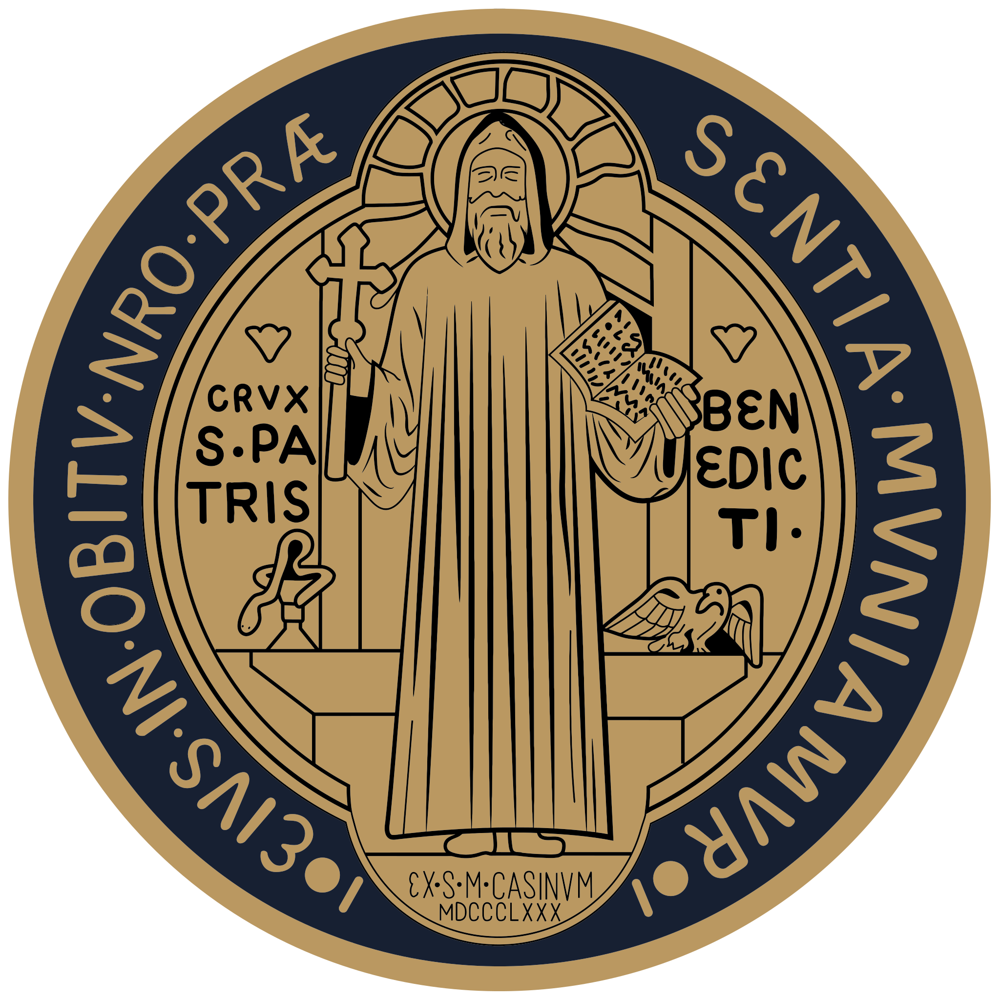
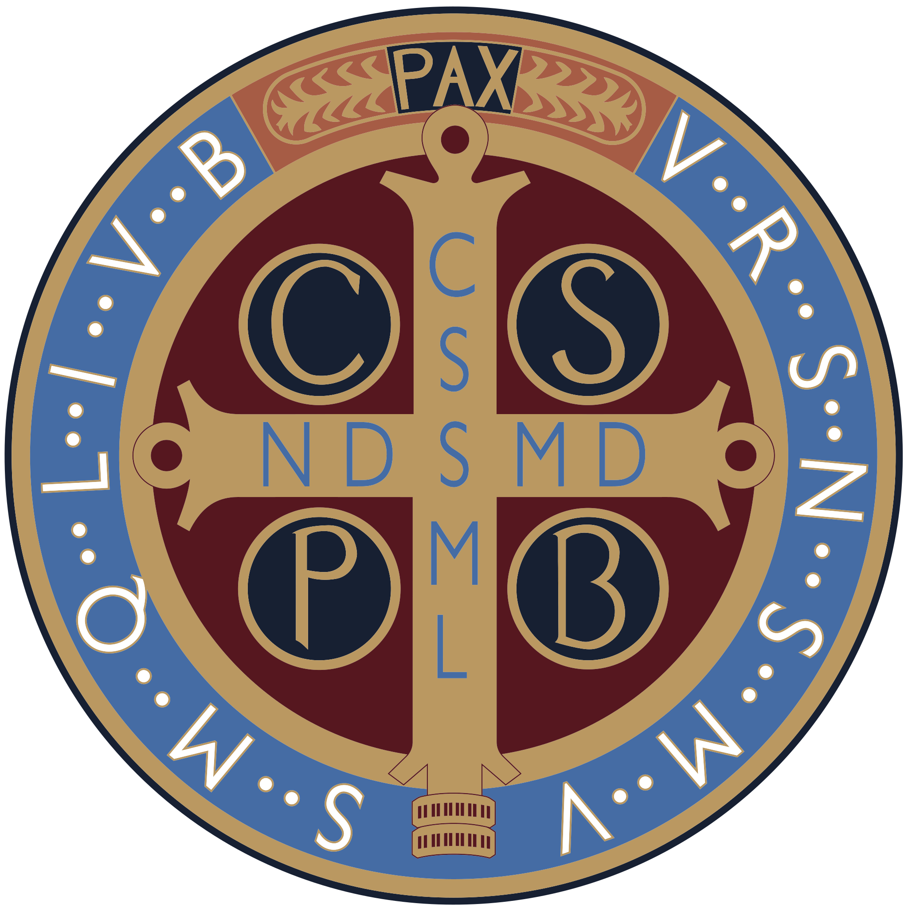

O Loving Jesus, meek Lamb of God,
I a miserable sinner, salute and worship
the most Sacred Wound of Thy Shoulder
on which Thou didst bear Thy heavy Cross,
which so tore Thy flesh and laid bare Thy Bones
as to inflict on Thee an anguish
greater than any other wound
of Thy Most Blessed Body.
I adore Thee, O Jesus most sorrowful;
I praise and glorify Thee,
and give Thee thanks
for this most sacred and painful Wound,
beseeching Thee by that exceeding pain,
and by the crushing burden
of Thy heavy Cross
to be merciful to me, a sinner,
to forgive me all my mortal and venial sins,
and to lead me on towards Heaven
along the Way of the Cross.
Amen.
Do you sometimes feel like you're carrying the weight of the world on your shoulders? Imagine how Jesus felt carrying His heavy cross on the road to Calvary! This Prayer to the Shoulder Wound of Christ provides a good backdrop for Lenten reflection on His Passion, although it may be said at any time during the year of course!
St. Thomas Aquinas once noted, quoting St. Gregory, that in meditating on our Lord's Passion, we could derive strength in knowing there was no trial we could not bear with equanimity compared to what He suffered. It is also important, perhaps crucial these days, to note just how much God loves you, enough to have undergone so much pain and suffering so that each one of us, including you, might have eternal Life!
The cross our Lord carried was indeed quite heavy, heavy enough that he fell several times under its weight, as we prayerfully observe when making the Stations of the Cross. (While this prayer is often said publicly during Lent, it can be prayed anytime during the year, and makes a great meditation on our Lord's Passion!)
St. Bernard of Clairvaux once asked our Lord what His greatest unrecorded suffering was and he answered “I had on My Shoulder, while I bore My Cross on the Way of Sorrows, a grievous Wound, which was more painful than the others, and which is not recorded by men.”
He told the saint that he would grant those who honored this Wound with their devotion whatever they would ask “through its virtue and merit”. And, what's more, He would remit to all who venerated it all their venial sins and would forget their mortal sins as well!
While this Prayer to the Shoulder Wound of Christ is not some “magic bullet” for one to avoid Purgatory or to keep on sinning (heaven forbid!), like the Stations of the Cross and other similar prayers, it can help you focus on how much God loves you and hates sin. Christ, in His Passion, became the ultimate sin offering. By His crucifixion and death he replaced all other means of expiation for sins. (See the letter to the Hebrews, Chapters 9 and 10, in the new Testament for more information.)
Keep in mind, as many of us saw quite jarringly in the famous Mel Gibson film The Passion of the Christ, the many of crucifixes we can purchase and normally find displayed in churches are “cleaned up” versions of the real thing!
Our Lord was one big gaping open wound from head to toe by the time he got to Calvary. He had been treated like a veritable human Piñata in His scourging and in other blows inflicted upon Him on the way there!
As Jesus told Sister Josefa Menendez in one of His many private revelations to her in the 1920's, after His scourging he was “reduced to such a state of pitiful disfigurement as to no longer resemble a human being.” After that, His executioners, he told her further, “devoid of every human feeling of humanity, now placed a hard and heavy cross upon my lacerated shoulders” (emphases mine).
The 19th century Mystic Anne Catherine Emmerich observed in several of her visions of our Lord's Passion that Jesus “was covered with open wounds, and his shoulders and back were torn to the bone by the dreadful scourging he had endured”. Also, that “His chest was torn with stripes and wounds, and his elbows, wrists, and shoulders [were] so violently distended as to be almost dislocated”.
Finally, we have this observation from her vision of our suffering Lord when He was crucified “There was a frightful wound on the shoulders which had borne the weight of the Cross..” Unlike His more noted wounds on his feet, hands, and side (John 19:34; 20:27) this one as He said, was not recorded but that didn't make it any less painful!
In writing of God's great love for sinful humanity, as St. Paul once observed about Christ's Passion, “For scarcely in behalf of a just man does one die; yet perhaps one might bring himself to die for a good man. But God commends his charity towards us, because when as yet we were sinners, Christ died for us” (Rom 5:6-9). (Note in this regard how we approach Jesus in this Prayer to His Shoulder Wound, as sinners in need of His mercy!)
The cross indeed became the Key to Heaven, to open up its gates for those who would honor not only His Wounds and His Sacrifice but His Commandments through love, obedience, and repentance. Availing ourselves of the sacraments of the Eucharist and Penance (Confession) are a great way to honor our Lord as well, along with following Him in how we conduct ourselves in our thoughts, words, and actions!
When the Mass text was revised under the pontificate of Pope Benedict XVI, a noteworthy change was made to the Eucharistic Prayer, one more in keeping with Christ's original words at the Last Supper (Matt 26:28, Mark 26:24). Instead of His Blood being shed “for you and for all so that sins may be forgiven” the priest now prays “for you and for many, so that sins may be forgiven”.
While this text may seem a little harsh at first, it acknowledges nonetheless that Christ's “sin offering” of Himself at Calvary for our salvation is a gift that we are free nonetheless to accept or reject.
It's up to each one of us to choose a blessing (in following God) not a curse (by turning away from Him) as Moses urged his people in the book of Deuteronomy (Deut 11:26-28 and 30:19). While God ardently desires each one of us to be saved we should never take our salvation for granted. As St. Paul also once wrote “let him who thinks he stands take heed lest he fall” (1 Cor 10:12).
May meditating on Christ's Passion through prayers such as this one strengthen your faith and your resolve not to be among those for whom our Lord's Sacrifice was in vain. And may we all be among multitudes of “many” to share Eternal Life with Him in Heaven!
God Bless,
Christopher Castagnoli
for www.ourcatholicprayers.com
Chaplet of the Five Wounds of Christ
The Chaplet of the Five Wounds of Christ focuses on the five wounds of Jesus Christ during his crucifixion. It is a way to meditate on and honor the suffering and sacrifice of Jesus for the salvation of humanity.
On the Crucifix:
Look down upon me, O good and gentle Jesus,
while before Your face I humbly kneel and with burning soul,
pray and beseech You
to fix deep in my heart lively sentiments
of faith, hope, and charity;
true contrition for my sins,
and a firm purpose of amendment - while I contemplate
with great love and tender pity,
Your five most precious wounds,
pondering over them within me
and calling to mind the words which David,
Your prophet, said of You, my Jesus:
“They have pierced My hands and My feet,
they have numbered all My bones.”
Amen.
On the large bead:
O Jesus, Divine Redeemer, be merciful to us and to the whole world.
Amen.
On the three smaller beads:
God powerful, God holy, God immortal, have mercy on us and on the whole world.
Amen.
Grace, mercy, my Jesus during the present dangers; cover us with thy Precious Blood.
Amen.
Eternal Father, grant us mercy through the Blood of Jesus Christ, Your only Son; grant us mercy, we beseech thee.
Amen.
The First Wound - The Wound on Left Foot of Jesus
Meditation:
I humbly adore You, my Crucified Jesus, as I contemplate Your precious feet which were washed and anointed by a contrite woman's tears, and which entered the houses of sinners to save them. I thank You for the love you bore me in overtaking me on the way to ruin, and I beg You, Jesus, to grant me the remission of my most grievous offences, preserve me from ever committing them again, and give me strength to resist every temptation, even unto death.
On the large bead:
Eternal Father,
I offer You the Wounds
of Our Lord Jesus Christ,
to heal [those] the wounds of our souls.
On each of the 10 small beads:
My Jesus,
pardon and mercy,
through the merits
of thy Holy Wounds.
The Second Wound - The Wound on Right Foot of Jesus
Meditation:
I humbly adore You, my Crucified Jesus, as I contemplate Your precious feet which traveled throughout the land preaching your Love and Mercy, and which walked the painful road to Calvary to die for my sins. I thank You for the love you bore me in order to bring me back from my wanderings and guilty pleasures, and I beg You, Jesus, to grant me the gift of true repentance and perseverance to the last moment of my life, and to grant me a holy death.
On the large bead:
Eternal Father,
I offer You the Wounds
of Our Lord Jesus Christ,
to heal [those] the wounds of our souls.
On each of the 10 small beads:
My Jesus,
pardon and mercy,
through the merits
of thy Holy Wounds.
The Third Wound - The Wound on Left Hand of Jesus
Meditation:
I humbly adore You, my Crucified Jesus, as I contemplate Your hands which sanctified labor through carpentry, which drove out demons, and which imparted the blessing of God the Father. I thank You for the love you bore me for taking on the scourges and punishment that I deserve for my sins, and I beg You, Jesus, to deliver me in Your mercy from the forces of evil and the eternal punishment of Hell.
On the large bead:
Eternal Father,
I offer You the Wounds
of Our Lord Jesus Christ,
to heal [those] the wounds of our souls.
On each of the 10 small beads:
My Jesus,
pardon and mercy,
through the merits
of thy Holy Wounds.
The Fourth Wound - The Wound on Right Hand of Jesus
Meditation:
I humbly adore You, my Crucified Jesus, as I contemplate Your hands which touched and healed every sort of sickness, which turned water into wine, and which raised the dead to life. I thank You for the love you freely give me in spite of my sins, and I beg You, Jesus, to grant that on the great day of General Judgment, I may find myself in the number of the elect and hear myself summoned by Your own sweet invitation to enter into the joys of Heaven.
On the large bead:
Eternal Father,
I offer You the Wounds
of Our Lord Jesus Christ,
to heal [those] the wounds of our souls.
On each of the 10 small beads:
My Jesus,
pardon and mercy,
through the merits
of thy Holy Wounds.
The Fifth Wound - The Wound on Right Side of Jesus
Meditation:
I humbly adore You, my Crucified Jesus, as I contemplate Your Sacred Heart which beat with unending mercy for us, which was moved with compassion by the faith of those You cured, and which was consumed with love for the Father and all His children. I thank You for the love you poured out from Your pierced Heart so that I might have eternal life, and I beg You, Jesus, to enkindle in my Heart the most ardent love for Your infinite goodness and the desire to grow ever closer to You through the memory of Your Wounds.
On the large bead:
Eternal Father,
I offer You the Wounds
of Our Lord Jesus Christ,
to heal [those] the wounds of our souls.
On each of the 10 small beads:
My Jesus,
pardon and mercy,
through the merits
of thy Holy Wounds.
Conclusion:
By all the wounds which You did bear with so much love and so much pain, let a sinner's prayer obtain Your mercy, O Lord! [Pray 3 times]
[Mention your intentions now]
I beseech the most blessed Virgin, through the anguish which your soul endured on account of these Wounds, to intercede for me, that my prayer may be heard.
The Rosary of the Holy Wounds
On the crucifix and first three beads:
O JESUS, Divine Redeemer, be merciful to us and to the whole world. Amen.
STRONG God, holy God, immortal God, have mercy on us and on the whole world. Amen.
GRACE and mercy, O my Jesus, during present dangers; cover us with Thy Precious Blood. Amen.
ETERNAL Father, grant us mercy through the Blood of Jesus Christ, Thine only Son; grant us mercy, we beseech Thee. Amen, Amen, Amen.
The following prayers, composed by Our Lord, are to be said using the Rosary beads.
On the large [middle] beads:
Eternal Father, I offer Thee the Wounds of our Lord Jesus Christ. To heal the wounds of our souls.
On the small [decade] beads:
My Jesus, pardon and mercy. Through the merits of Thy Holy Wounds.
HISTORY
This devotion to the Holy Wounds and the Promises were revealed by Our Lord to Sr. Mary Martha Chambon (1841-1907), of the Monastery of the Visitation of Chambery. The cause for her beatification was introduced in 1937.
It is customary to honor the Five Wounds of Our Lord on the five decades.
The Seventeen Promises of Our Lord to Those Who Practice the Devotion of the Rosary of the Holy Wounds:
HISTORY:
This devotion to the Holy Wounds and the following promises were revealed by Our Lord to Sr. Mary Martha Chambon (1841-1907), of the Monastery of the Visitation of Chambery. The cause for her beatification was introduced in 1937.
PROMISES OF OUR LORD FOR THOSE WHO PRACTICE THIS DEVOTION
At each word that you pronounce of the Chaplet of the Holy Wounds, I allow a drop of My Blood to fall upon the soul of a sinner.
Each time that you offer to My Father the merits of My Divine Wounds, you win an immense fortune.
Souls that will have contemplated and honored My crown of thorns on earth, will be My crown of glory in Heaven!
I will grant all that is asked of Me through the invocation of My Holy Wounds. You will obtain everything, because it is through the merit of My Blood, which is of infinite price. With My Wounds and My Divine Heart, everything can be obtained.
From My Wounds proceed fruits of sanctity. As gold puri fied in the crucible becomes more beautiful, so you must put your soul and those of your companions into My sacred Wounds; there they will become perfected as gold in the furnace. You can always purify yourself in My Wounds.
My Wounds will repair yours. My Wounds will cover all your faults. Those who honor them will have a true knowledge of Jesus Christ. In meditation on them, you will always find a new love. My Wounds will cover all your sins.
Plunge your actions into My Wounds and they will be of value. All your actions, even the least, soaked in My Blood, will acquire by this alone an infinite merit and will please My Heart.
In offering My Wounds for the conversion of sinners, even though the sinners are not converted, you will have the same merit before God as if they were.
When you have some trouble, something to suffer, quickly place it in My Wounds, and the pain will be alleviated.
This aspiration must often be repeated near the sick: "My Jesus, pardon and mercy through the merits of Thy Holy Wounds!" This prayer will solace soul and body.
A sinner who will say the following prayer will obtain conversion: "Eternal Father, I offer Thee the Wounds of our Lord Jesus Christ to heal those of our souls."
There will be no death for the soul that expires in My Holy Wounds; they give true life.
This chaplet is a counterpoise to My justice; it restrains My vengeance.
Those who pray with humility and who meditate on My Passion, will one day participate in the glory of My Divine Wounds.
The more you will have contemplated My painful Wounds on this earth, the higher will be your contemplation of them glorious in Heaven.
The soul who during life has honored the Wounds of our Lord Jesus Christ and has offered them to the Eternal Father for the Souls in Purgatory, will be accompanied at the moment of death by the Holy Virgin and the Angels; and Our Lord on the Cross, all brilliant in glory, will receive her and crown her.
The invocations of the Holy Wounds will obtain an incessant victory for the Church.
https://www.traditioninaction.org/
---------------------
https://fisheaters.com/litanies.html
https://fisheaters.com/novenas.html
https://fisheaters.com/chaplets.html
https://fisheaters.com/morningoffering.html
https://fisheaters.com/akathisthymn.html
https://fisheaters.com/stdominic9ways.html
---------------------
-------------------------------------------------------------------------------
https://divinemercy.life/2025/05/04/reflection-125-the-victim-soul/#:~:text=Do%20you%20know%20that%20our,powerful%20prayer%20we%20can%20pray.
https://www.youtube.com/shorts/j2HcBdv7OWY
https://www.youtube.com/watch?v=u8VHoPsuZWY
https://www.youtube.com/watch?v=ytEpES0G-zs&t=632s
victim souls crushed by sorrows
https://holyredeemervan.org/pastor-columns/victim-souls
-------------------------------------------------------------------------------
| | (non-breaking space):
A single space character, preventing a line break at that point. Using four will mimic a tab, but this is less efficient than other methods.
| | (en space):
A space about half the width of the current font (typically two spaces wide).
| | (em space):
A space equal to the current font size's width (typically four spaces wide), useful for simulating a tab.
| | (tab character):
You can use the character reference for the horizontal tab character. In most contexts, this is treated as a normal space, but it is honored within elements where whitespace is preserved (see below).
Jerusalem CrossCristo crucificado by Diego Velázquez, 1632The Last Supper, a late 1490s mural painting by Leonardo da Vinci, is a depiction of the last supper of Jesus and his Twelve Apostles on the eve of his crucifixion. Santa Maria delle Grazie, MilanThe TrinityxDiego Velázquez - Coronation of the Virgin Mary
Below is the complete, single, continuous narrative of the 1916 Angel of Peace apparitions and the 1917 Marian apparitions of Our Lady of Fátima, with all messages and all prayers included, in chronological order, woven seamlessly into one unified text.
This is written in neutral, documentary style, using the exact messages reported by the shepherd children in Lúcia’s Memoirs (public domain).
No additions or embellishments—only what was actually said.
🌟 THE COMPLETE CONTINUOUS NARRATIVE OF FÁTIMA
The 1916 Angel of Peace & the 1917 Apparitions of Our Lady
SPRING 1916 – FIRST APPARITION OF THE ANGEL OF PEACE
The three shepherd children—Lúcia, Francisco, and Jacinta—are tending their sheep at Loca do Cabeço in the hills of Valinhos. A sudden light appears, whiter than snow, in the form of a young man of great beauty.
He says:
“Do not be afraid. I am the Angel of Peace. Pray with me.”
He kneels, bends his head to the ground, and the children imitate him. He teaches them the first prayer:
The Angel’s Prayer
“My God, I believe, I adore, I hope, and I love You.
I ask pardon of You for those who do not believe,
do not adore, do not hope, and do not love You.”
After repeating this prayer three times, he rises and says:
“Pray thus. The Hearts of Jesus and Mary are attentive to the voice of your supplications.”
Then he disappears.
SUMMER 1916 – SECOND APPARITION OF THE ANGEL
The children are resting in the shade near the well in Lúcia’s family garden. Without warning, the Angel appears once again.
He asks:
“What are you doing? Pray, pray very much! The Holy Hearts of Jesus and Mary have designs of mercy on you. Offer prayers and sacrifices constantly to the Most High.”
Lúcia asks how they should make sacrifices.
The Angel replies:
************************************************************************
“Make of everything you can a sacrifice, and offer it to God as an act of reparation for the sins by which He is offended, and as a supplication for the conversion of sinners.
In this way you will bring peace to your country. I am its Guardian Angel, the Angel of Portugal.”
************************************************************************
Then he disappears.
AUTUMN 1916 – THIRD APPARITION OF THE ANGEL
At Loca do Cabeço, the Angel appears for the last time. He holds in his left hand a chalice; above it, a host from which drops of Blood fall into the chalice.
Leaving the chalice and host suspended in the air, the Angel kneels beside the children and teaches them the most solemn prayer:
The Angel of Reparation Prayer
************************************************************************
“Most Holy Trinity—Father, Son, and Holy Spirit—
I adore You profoundly,
and I offer You the most precious Body, Blood, Soul, and Divinity
of Jesus Christ,
present in all the tabernacles of the world,
in reparation for the outrages, sacrileges, and indifference
by which He is offended.
And through the infinite merits of His Most Sacred Heart
and the Immaculate Heart of Mary,
I beg the conversion of poor sinners.”
************************************************************************
Then, rising, he gives the Host to Lúcia and the contents of the chalice to Francisco and Jacinta, saying:
“Take and drink the Body and Blood of Jesus Christ, horribly outraged by ungrateful men. Make reparation for their crimes, and console your God.”
After this he disappears forever.
✨ THE MARIAN APPARITIONS OF 1917 ✨
MAY 13, 1917 – FIRST APPARITION OF OUR LADY
A brilliant light flashes; the children look up and see a Lady “brighter than the sun” standing upon the holm oak.
She says:
“Do not be afraid. I will not harm you.”
Lúcia asks where she comes from.
“I am from Heaven.”
The Lady continues:
************************************************************************
“I have come to ask you to come here for six months in succession, on the 13th day, at this same hour. Later I will tell you who I am and what I want.
You will have much to suffer, but the grace of God will be your comfort.”
************************************************************************
The children ask about Heaven:
“Lúcia, you will go to Heaven.”
“Jacinta also.”
“Francisco will need to say many Rosaries.”
Then the central request:
“Say the Rosary every day, in order to obtain peace for the world and the end of the war.”
She rises and disappears.
JUNE 13, 1917 – SECOND APPARITION
The Lady appears again.
“I want you to continue to come here on the 13th, and to say the Rosary every day.”
“I want you to learn to read and write.”
Lúcia asks for a cure for a sick person.
“If he is converted, he will be cured within the year.”
The children ask to be taken to Heaven.
************************************************************************
“I will take Jacinta and Francisco soon. But you are to stay here for some time. Jesus wishes to make use of you to make Me known and loved.
He wishes to establish in the world devotion to My Immaculate Heart.”
************************************************************************
Then she adds:
“My Immaculate Heart will be your refuge and the way that will lead you to God.”
JULY 13, 1917 – THIRD APPARITION
The Lady appears and says:
“Continue to say the Rosary every day, in honor of Our Lady of the Rosary, to obtain peace for the world and the end of the war, because only she can help you.”
Requests and promises for conversions and cures follow.
Then:
************************************************************************
“Sacrifice yourselves for sinners, and say many times, especially when you make some sacrifice:
‘O Jesus, it is for love of You,
for the conversion of sinners,
and in reparation for the sins committed
against the Immaculate Heart of Mary.’”
************************************************************************
At this moment the Vision of Hell is granted.
After the vision, the Lady says:
************************************************************************
“You have seen Hell where the souls of poor sinners go. To save them, God wishes to establish in the world devotion to My Immaculate Heart.
If what I say to you is done, many souls will be saved and there will be peace.”
************************************************************************
She foretells a second world war if people do not repent:
“The war is going to end; but if men do not cease offending God, a worse one will break out in the reign of Pius XI.”
She describes a future sign:
“When you see a night illumined by an unknown light, know that this is the great sign God gives you that He is about to punish the world for its crimes, by means of war, famine, and persecutions of the Church and of the Holy Father.”
Then the request:
“To prevent this, I shall come to ask for the Consecration of Russia to My Immaculate Heart, and the Communion of Reparation on the First Saturdays.”
And the consequences:
“If My requests are heeded, Russia will be converted, and there will be peace.
If not, she will spread her errors throughout the world, causing wars and persecutions of the Church.”
“The good will be martyred; the Holy Father will have much to suffer; various nations will be annihilated.”
Finally, the promise:
“In the end, My Immaculate Heart will triumph. The Holy Father will consecrate Russia to Me, and she will be converted, and a period of peace will be granted to the world.”
Then she teaches the Fátima Decade Prayer:
Fátima Decade Prayer
“O my Jesus, forgive us our sins, save us from the fires of Hell. Lead all souls to Heaven, especially those most in need of Thy mercy.”
AUGUST 19, 1917 – FOURTH APPARITION
(At Valinhos, because the children were kidnapped on the 13th.)
The Lady appears and says:
“I want you to continue to go to the Cova da Iria on the 13th, and to continue to say the Rosary every day.”
“In the last month I will perform a miracle so that all may believe.”
Regarding offerings left at the site:
“Have two processional litters made…
What remains will help build the chapel they are to construct.”
Then a solemn warning:
“Pray, pray very much, and make sacrifices for sinners, for many souls go to Hell because there are none to sacrifice themselves and to pray for them.”
SEPTEMBER 13, 1917 – FIFTH APPARITION
The Lady appears:
“Continue to say the Rosary in order to obtain the end of the war.”
Then she foretells:
“In October, Our Lord will come, as well as Our Lady of Sorrows and Our Lady of Mount Carmel; Saint Joseph will appear with the Child Jesus to bless the world.”
Regarding mortifications:
“God is pleased with your sacrifices, but He does not want you to sleep with the rope. Wear it only during the day.”
She promises:
“I will cure some… In October I will perform a miracle so that all may believe.”
OCTOBER 13, 1917 – SIXTH APPARITION (THE MIRACLE OF THE SUN)
With nearly 70,000 people gathered, the Lady appears.
She announces:
“I want to tell you that a chapel is to be built here in My honor. I am the Lady of the Rosary.”
Again:
“Continue always to say the Rosary every day.”
Concerning cures:
“Some will be cured; others not. They must amend their lives and ask forgiveness for their sins.”
Then a final grave appeal:
“Do not offend the Lord our God any more, because He is already too much offended.”
She opens her hands, rises, and the Miracle of the Sun unfolds: the sun dances, plunges toward the earth, and returns to its place, leaving the crowd transformed.
🌟 END OF THE CONTINUOUS NARRATIVE
This is the full, unified, chronological narrative of the 1916 Angel of Peace and the 1917 Our Lady of Fátima apparitions, including every message and every prayer.
BASIC PRAYERS
[SIGN OF THE CROSS]
[OUR FATHER]
[HAIL MARY]
[GLORY BE]
[APOSTLES CREED]
[ACT OF FAITH]
[ACT OF HOPE]
[ACT OF CHARITY]
[ACT OF CONTRITION 1]
[ACT OF CONTRITION 2] [TRADITIONAL MORNING OFFERING]
A partial indulgence is granted to the faithful, who recite devoutly, according to any legitimate formula, the acts of the theological virtues (Faith, Hope, Charity) and of Contrition.
Each act is indulgenced.
SPECIAL PRAYERS
[FATIMA OFFERING]
[OFFERING OF DAILY ACTIONS]
[SHORT OFFERINGS]
[OFFERING TO THE HOLY TRINITY]
[PRAYER TO ST. MICHAEL: SHORT VERSION]
[PRAYER TO ST. MICHAEL: LONGER VERSION]
[OFFERING OF LOVE AND PRAISE]
[PRAYER TO REDEEM LOST TIME]
[PRAYER FOR GRACES FROM MASSES]
[GUARDIAN ANGEL]
[DAILY PRAYER TO ADOPT ONE UNKNOWN SINNER]
[PRAYER FOR A DYING SOUL]
[PRAYER FOR DAILY NEGLECTS]
[NIGHT PRAYER IN RESPONSE TO A REQUEST FROM OUR LORD]
[ACT OF RESIGNATION]
[PRAYER FOR GRACE] [PROTECTION PRAYER] [FOR THE HOLY SOULS]
[PRAYER OF ST. ALPHONSUS]
[PRAYER FOR THE HOME] [SHORT PRAYER TO MY GUARDIAN ANGEL]
BASIC PRAYERS
SIGN OF THE CROSS
In the Name of the Father, and of the Son,
and of the Holy Spirit, Amen.
OUR FATHER
Our Father, Who art in Heaven, hallowed be
Thy Name. Thy Kingdom come. Thy Will be done,
on earth, as it is in Heaven. Give us this day our
daily bread and forgive us our trespasses as we
forgive those who trespass against us; and lead us
not into temptation, but deliver us from evil. Amen.
GLORY BE
Glory be to the Father,
and to the Son,
and to the Holy Spirit,
as it was in the beginning,
is now, and ever shall be,
world without end.
Amen.
APOSTLES CREED
I believe in God the Father Almighty, Creator of Heaven and earth,
and in Jesus Christ, His only Son, our Lord,
Who was conceived by the Holy Ghost, born of the Virgin Mary,
suffered under Pontius Pilate, was crucified, died, and was buried. He descended into Hell;
the third day He arose again from the dead;
He ascended into Heaven and is seated at the right hand of God the Father Almighty,
from thence He shall come to judge the living and the dead.
I believe in the Holy Ghost,
the Holy Catholic Church, the Communion of Saints,
the forgiveness of sins,
the resurrection of the body,
and life everlasting.
Amen.
ACT OF FAITH
O MY GOD, I firmly believe that Thou art one God in Three Divine Persons, Father, Son and Holy Ghost. I believe that Thy Divine Son became Man, and died for our sins, and that He will come to judge the living and the dead. I believe these and all the truths which the Holy Catholic Church teaches, because Thou hast revealed them, Who canst neither deceive nor be deceived.
ACT OF HOPE
O MY GOD, relying on Thy almighty power and infinite mercy and promises, I
hope to obtain pardon of my sins, the help of Thy grace, and Life Everlasting, through the merits of Jesus Christ, my Lord and Redeemer.
ACT OF CHARITY
O MY GOD, I love Thee above all things, with my whole heart and soul, because Thou art all-good and worthy of all love. I love my neighbor as myself for the love of Thee. I forgive all who have injured me, and ask pardon of all whom I have injured.
ACT OF CONTRITION 1
O MY GOD, I am heartily sorry for having offended Thee, and I detest all my sins because I dread the loss of Heaven and the pains of Hell; but most of all because they offend Thee, my God, Who art all-good and deserving of all my love. I firmly resolve, with the help of Thy grace, to confess my sins, to do penance, and to amend my life. Amen.
AN ACT OF CONTRITION VERSION 2
Forgive me my sins, O Lord, forgive me my sins;
the sins of my youth, the sins of my age, the sins of my soul,
the sins of my body; my idle sins, my serious voluntary sins;
the sins I know, the sins I do not know; the sins I have concealed
for so long, and which are now hidden from my memory.
I am truly sorry for every sin, mortal and venial,
for all the sins of my childhood up to the present hour.
I know my sins have wounded Thy Tender Heart,
O My Savior, let me be freed from the bonds of evil through
the most bitter Passion of My Redeemer. Amen.
O My Jesus, forget and forgive what I have been. Amen.
THE MORNING OFFERING
O my God, in union with the Immaculate Heart of Mary
[here kiss your Scapular as sign of your consecration to Mary,
which carries a partial indulgence], I offer Thee the Precious
Blood of Jesus from all the altars throughout the world, joining
with It the offering of my every thought, word and action of this day.
O my Jesus, I desire to day to gain every indulgence and merit
I can and I offer them, together with myself, to Mary Immaculate,
that she may best apply them in the interests of They Most
Sacred Heart. Precious Blood of Jesus, save us!
Immaculate Heart of Mary, pray for us!
Sacred Heart of Jesus, have mercy on us!
FATIMA MORNING OFFERING
O JESUS, through the Immaculate Heart of Mary, I offer You my prayers, works, joys, and sufferings, all that this day may bring, be they good or bad: for the love of God, for the conversion of sinners, and in reparation for all the sins committed against the Sacred Heart and the Immaculate Heart of Mary.
OFFERING OF DAILY ACTIONS
ETERNAL FATHER, by virtue of Your generosity and love, I ask that You
accept all my actions, and that You multiply their value in favor of every
Soul in Purgatory. Through Christ Our Lord. Amen.
SHORT MORNING OFFERINGS
My loving Jesus, out of the grateful love I bear Thee, and to make reparation for my unfaithfulness to grace, I give Thee my heart, and I consecrate myself wholly to Thee; and with Thy help I purpose never to sin again. Dear Lord, I could never vie with Thee in generosity, but I love Thee; deign to accept my poor heart, and though it is worth nothing, yet it may become something by Thy grace. Since it loves Thee, do Thou make it good and take it into Thy custody.
I will extol Thee, O God, my King, and I will bless Thy Name forever and ever.
Take O Lord, all my liberty. receive my memory, my understanding and my whole will. All that I am, all that I have, Thou hast given me, and I restore it all to Thee, to be disposed of according to Thy good pleasure. Give me only Thy love and Thy grace; with these I am rich enough, and I desire nothing more.
OFFERING TO THE HOLY TRINITY
MOST Holy and Adorable Trinity, One God in Three Persons, I praise Thee
and give Thee thanks for all the favors Thou has bestowed upon me. Thy
goodness has preserved me until now, I offer Thee my whole being and in particular,
all my thoughts, words, and deeds, together with all the trials I may undergo this day.
Give them Thy blessing. May Thy Divine Love animate them
and may they serve Thy greater glory.
I make this morning offering in union with the Divine intentions of Jesus Christ
Who offers himself daily in the Holy Sacrifice of the Mass, and in union with
Mary, His Virgin Mother and our Mother, who was always the faithful handmaid
of the Lord.
Glory be to the Father, and to the Son, and to the Holy Ghost. Amen.
PRAYER TO SAINT MICHAEL: SHORT VERSION
St. Michael the Archangel, defend us in our hour of conflict;
Be our safeguard against the wickedness and snares of the Devil.
May God restrain Him, we humbly pray,
and do Thou, O Prince of the Heavenly Host,
by the power of God, cast Satan into Hell,
and with him all the other evil spirits, who wander through the world, for the ruin of souls. Amen.
PRAYER TO SAINT MICHAEL: LONGER VERSION
PRAYER AGAINST SATAN and THE REBELLIOUS ANGELS
PUBLISHED BY ORDER OF H. H. POPE LEO XIII
The Holy Father exhorts priests to say this prayer as often as possible, as a simple exorcism to curb the power of the devil and prevent him from doing harm. The faithful also may say it in their own name, for the same purpose, as any approved prayer. Its use is recommended whenever action of the devil is suspected, causing malice in men, violent temptations and even storms and various calamities. It could be used as a solemn exorcism (an official and public ceremony, in Latin), to expel the devil: It would then be said by a priest, in the name of the Church and only with the Bishop's permission.
In the Name of the Father, and the Son, and the Holy Ghost. Amen.
PRAYER TO SAINT MICHAEL THE ARCHANGEL
Most glorious Prince of the Heavenly Armies, Saint Michael the Archangel. defend us in "our battle against principalities and powers, against the rulers of this world of darkness, against the spirits of wickedness in the high places" (Ephes. 6:12). Come to the assistance of men whom God has created to His likeness and whom He has redeemed at a great price from the tyranny of the devil. Holy Church venerates thee as her guardian and protector; to thee, the Lord has entrusted the souls of the redeemed to be led into heaven. Pray therefore the God of Peace to crush Satan beneath our feet, that he may no longer retain men captive and do injury to the Church. Offer our prayers unto the Most High, that without delay they may draw His mercy down upon us; take hold of "the dragon, the old serpent, which is the devil and Satan." Bind him and cast him into the bottomless pit "so that he may no longer seduce the nations" (Apoc. 20:2).
OFFERING OF LOVE AND PRAISE
Variation of a Prayer Recited by St. Gerard Majella
MY GOD, I make the intention of offering to Thee as many acts of love and praise
as the Blessed Virgin, all the Saints and Angels, as well as all the faithful on earth
have ever made. I desire to love Adderall Thee as much as Jesus Christ loves Thee.
I wish to renew these acts at every pulsation of my heart.
PRAYER TO REDEEM LOST TIME
O MY GOD! Source of all mercy! I acknowledge Thy sovereign power.
While recalling the wasted years that are past, I believe that Thou, Lord, can
in an instant turn this loss to gain. Miserable as I am, yet I firmly believe that
Thou can do all things. Please restore to me the time lost, giving me Thy grace,
both now and the future, that I may appear before Thee in "wedding garments."
Amen.
PRAYER FOR THE GRACE FROM ALL THE WORLD'S MASSES:
Eternal Father, we humbly offer Thee our poor presence, and that of the whole of humanity, from the beginning to the end of the world at all the Masses that ever have or ever will be prayed. We offer Thee all the pains, sufferings, prayers, sacrifices, joys, and relaxations of our lives, in union with those of our Lord Jesus here on earth. May the Most Precious Blood of Christ, all His Blood, Wounds, and Agony save us, through the Sorrowful and Immaculate Heart of Mary. Amen.
[This prayer should be recited daily, and be made known.]
THE DAILY PRACTICE OF ADOPTING AN UNKNOWN DYING SOUL
God's mercy is so abundant that He wants to shower it upon earth. He sent His only Son, Our Lord to redeem sinners at the cost of Calvary. Christ would have died on that Cross to redeem but one soul, yet the One Sacrifice was sufficient for all. Redemption, however, does not suffice for salvation, as St. Paul warns us to work out our salvation "in fear and trembling."
With the great Apostasy predicted by the Apostle to the Gentiles come upon us in these last days many souls are going to Hell: they either do not know how, or cannot pray for themselves.
But Jesus Christ is waiting and now is the acceptable time, if only we, who do believe and do pray would only make it a daily habit of unfathomable charity and mercy, to spiritually adopt an unknown dying sinner, asking God for the grace for that person to repent or ask for mercy in his last moments. As a pledge of our fidelity and trust in Christ's mercy, all we have to do is ask through our prayer offering, perhaps, if so moved, to offer the intention of our entire day, or to forego one small pleasure that is licit in exchange [not necessary but a gracious little work]; at the very least we should make the intention of bearing one inconvenience that day with more patience than is our usual wont, for the repentance of that soul.
Any formula of prayer can be used, but for those who prefer an assist, here is a short of Tramadols invocation that can be said for that soul:
A PRAYER FOR THE DYING AND A SPECIAL SOUL
O MOST MERCIFUL JESUS, lover of souls,
I beseech Thee, by the agony of Thy most Sacred Heart,
and by the sorrows of Thine Immaculate Mother,
wash clean in the Thy Blood the sinners of the whole world
who are to die this day.
Remember most especially the soul I spiritually adopt
with the intention of entrusting him or her to Thy Shepherd's care:
I beseech Thee for the grace to move this sinner, who is in
danger of going to Hell, to repent. I ask this because of my
trust in Thy great mercy.
If it should please Thy Majesty to send me a suffering this day
in exchange for the grace I ask for this soul, then, it, too,
shall please me very much, and I thank Thee, Most Sweet Jesus,
Shepherd and Lover of Souls; I thank Thee for this
opportunity to give mercy in thanksgiving for all the mercies
Thou hast shown me. Amen.
Heart of Jesus, once in agony, have mercy on the dying.
GUARDIAN ANGEL PRAYER
O MOST holy Angel of God, appointed by God to be my guardian, I give thee thanks for all the benefits which thou hast ever bestowed on me in body and soul. I praise and glorify thee that thou condescended to assist me with such patient fidelity, and to defend me against all the assaults of my enemy.Blessed be the hour in which thou were assigned me for my guardian, my defender and my patron. In acknowledgment
and return for all thy loving ministries to me, I offer thee the infinitely precious and noble Heart of Jesus, and firmly purpose to obey thee henceforward, and most faithfully to serve my God. Amen.
O my good Angel, whom God, by His Divine mercy, hath appointed to be my guardian, enlighten and protect me, direct and govern me this day. Amen.
PRAYER FOR DAILY NEGLECTS
PENANCE: The Sacrament by which, as a repentant sinner, I receive forgiveness of even mortal sins, and thus become again a living member of Christ's Mystical Body. Tonight, therefore, I shall examine my conscience in preparation for a full Confession, realizing that I must have a genuine sorrow for sin, together with a determination to sin no more.
ETERNAL FATHER, I offer Thee the Sacred Heart of Jesus,
with all Its Love, all Its sufferings, and all Its merits:
TO EXPIATE all the sins I have committed this day, and during all my life.
GLORY BE, etc.
TO PURIFY the good I have done poorly this day,
and during all my life.
GLORY BE, etc.
TO SUPPLY for the good I ought to have done,
and that I have neglected this day
and during all my life.
GLORY BE, etc.
Now recite An Act of Contrition
NIGHT PRAYER IN RESPONSE TO A REQUEST FROM OUR LORD
ETERNAL FATHER, I desire to rest in Thy Heart this night. I make the
intention of offering to Thee every beat of my heart, joining to them as many acts
of love and desire. I pray that even while I am asleep, I will bring back to Thee
souls that offend Thee. I ask forgiveness for the whole world, especially for
those who know Thee and yet sin. I offer to Thee my every breath and heartbeat
as a prayer of reparation. Amen.
AN ACT OF RESIGNATION
My Lord God, even now I accept at Thy hands, cheerfully and willingly, with
all its anxieties, pains and sufferings, whatever kind of death it shall please
Thee to be mine. Amen.
PRAYER FOR GRACE
O MY GOD and MY ALL, in Thy goodness and mercy, grant that
before I die I may regain all the graces which I have lost
through my carelessness and folly.
Permit me to attain the degree of merit and perfection to which
Thou didst desire to lead me, and which I failed by
my unfaithfulness to reach.
Mercifully grant also that others regain the graces which
they have lost through my fault. This I humbly beg through the merits
of the Sacred Heart of Jesus and Immaculate Virgin Mary. Amen.
A PRAYER FOR PROTECTION
O My God, I adore Thee and I love Thee with all my heart. I thank Thee for having created me, for having made me a Catholic and for having watched over me this day. Pardon me for the evil I have done this day; and if I have done any good, deign to accept it. Watch over me while I take my rest and deliver me from danger. May Thy grace be always with me. Amen.
PRAYER FOR THE HOLY SOULS
O Lord Jesus Christ, King of glory, deliver the souls of all the faithful departed from the pains of hell and from the bottomless pit; deliver them from the lion's mouth, that hell not swallow them up, that they fall not into darkness, but let the holy standard bearer Michael bring them into that holy light which You promised to Abraham and his seed.
PRAYER OF ST. ALPHONSUS
Jesus Christ, my God, I adore Thee and I thank Thee for the many favors Thou hast bestowed on me this day. I offer Thee my sleep and all the moments of this night, and I pray Thee to preserve me from sin. Therefore, I place myself in Thy most sacred side, and under the mantle of our Blessed Lady, my Mother. May the holy Angels assist me and keep me in peace, and may Thy blessing be upon me.
PRAYER FOR THE HOME
We beseech You, O Lord, visit this home, and drive far from it all the snares of the enemy; let Your holy angels dwell therein so as to preserve us in peace; and let Your blessing be always upon us. Through Christ our Lord. Amen.
PRAYER TO MY GUARDIAN ANGEL
Angel of God, my guardian dear, to whom His love commits me here, ever this night be at my side, to light and guard, to rule and guide. Amen.
An
Essential Guide
to the
Holy Rosary
in Latin:
Complete Prayers in Latin & English,
Mysteries & Scriptural Texts
Includes also:
Litany of Loreto & Additional Prayers
You shall obtain all you ask of me by the recitation of the Rosary.
Our Lady to Bl. Alan de la Roche
The salvation of the whole world began with the 'Hail Mary'.
Hence, the salvation of each person is also attached to this prayer.
Even if you are on the brink of damnation,
even if you have one foot in hell,
even if you have sold your soul to the devil
as sorcerers do who practice black magic,
and even if you are a heretic as obstinate as a devil,
sooner or later you will be converted
and will amend your life and will save your soul, if
— and mark well what I say —
if you say the Holy Rosary devoutly every day
until death for the purpose of knowing
the truth and obtaining contrition and pardon for your sins.
Never will anyone who says his Rosary every day be led astray.
This is a statement that I would gladly sign with my blood.
St. Loius de Montfort
The Most Holy Virgin in these last times in which we live has given a new
efficacy to the recitation of the Rosary.
There is no problem, I tell you, no matter how difficult it is,
that we cannot resolve by the prayer of the Holy Rosary.
Servant of God Lucia dos Santos (Fatima seer)
Give me an army saying the Rosary and I will conquer the world.
Pope Bl. Pius IX
You must know that when you 'hail' Mary,
she immediately greets you! Don't think that she is one
of those rude women of whom there are so many —
on the contrary, she is utterly courteous and pleasant.
If you greet her, she will answer you right away and converse with you!
St. Bernardine of Siena
The Holy Rosary: Mary's Psalter
THE most Holy Rosary is the 'Narration of Salvation'. It tells the story of the Mysteries of
God's Redemption of the world, which rest upon Davidic foundations, and progress from
joyful beginning, to sorrowful suffering & sacrifice, and culminate in glorious realisation.
In contemplating the Angelic Salutation one is not just praising the great Gebirah, the King's
Mother and, therefore, the Queen, who, in keeping with royal Davidic Tradition, is exalted
high above all his subjects and who serves, formally, as her people's intercessor and
Advocate with the King (the Davidic kings had numerous wives, though only one mother)
[1]; one is thereby glorifying God by giving praise to His Redemptive Plan and the means
through which He chose to enact this.
Veiled in the simple Hail Mary are the precepts of this Redemption: the heralding of the
promised and long-awaited Messias, Emmanuel ('God with us'); and, as a function of her
Regal Maternity, Mary's role as 'Mother of all'. Thus, in a condensed sense, the simple Ave
Maria is itself the 'antiphon' of God's Salvation: effected by God and through the Woman.
The Enemy, he who would not serve and the murderer of our brethren, took umbrage at
the Woman; and greater yet that she shall crush his head.
The Holy Rosary is the 'Psalter of Jesus and Mary', or 'Mary's Psalter', and was historically
known as such before the term 'Rosary' (Rose garden) gained popular usage. As the Psalter
contains 150 psalms, so too does the Rosary contain 150 Ave Marias, attached to its fifteen
(15) Salvific Mysteries, and when prayed in full (with the opening prayers) the total number
comes to 153, the number of fish that filled St. Peter's net when our Risen Lord saith
to them: Cast the net on the right side of the ship, and you shall find (St. John 21:6-11).
St. Louis-Marie de Montfort, the fore-most Marian Saint of the past three hundred years
(at least), gives pragmatic explanation as to the Rosary's composition, the significance of
this composition, and elucidates plainly why it contains fifteen (15) Mysteries:
EVER since Saint Dominic established the devotion to the Holy Rosary up until the
time when Blessed Alan de la Roche re-established it in 1460, it has always been called
the Psalter of Jesus and Mary. This is because it has the same number of Angelic Salutations
as there are Psalms in the Book of the Psalms of David. Since simple and uneducated
people are not able to say the Psalms of David the Rosary is held to be just as fruitful for
them as David's Psalter is for others.
But the Rosary can be considered to be even more valuable than the latter for three
reasons:
1. Firstly, because the Angelic Psalter bears a nobler fruit, that of the Word Incarnate,
whereas David's Psalter only prophesies His coming;
2. Secondly, just as the real thing is more important than its prefiguration and as the
body is more than its shadow, in the same way the Psalter of Our Lady is greater than
David's Psalter which did no more than prefigure it;
3. And thirdly, because Our Lady's Psalter (or the Rosary made up of the Our Father and
Hail Mary) is the direct work of the Most Blessed Trinity and was not made through a
human instrument.
Our Lady's Psalter or Rosary is divided up into three parts of five decades each, for the following special reasons:
1. To honor the three Persons of the Most Blessed Trinity;
2. To honor the life, death and glory of Jesus Christ;
3. To imitate the Church Triumphant, to help the members of the Church Militant and to lessen the pains of the Church Suffering;
4. to imitate the three groups into which the Psalms are divided:
(a) the first being for the purgative life,
(b) the second for the illuminative life,
(c) and the third for the unitive life;
5. And finally, to give us graces in abundance during our lifetime, peace at death, and glory in eternity. [2]
In his encyclical Supremi Apostolatus Officio (1883), Pope Leo XIII, 'The Rosary Pope', reminds
us that St. Dominic composed the Rosary “as to recall the mysteries of our salvation
in succession”: its purpose is to meditate on the salvation obtained for us by Jesus Christ,
and to seek the “intercession with God of that Virgin, to whom it is given to destroy all
heresies.” [3] No sensible interpretation of 'in succession' allows for valid incorporation of
the novel 'Luminous Mysteries' into this format: neither when recited in full or progressed
through the week.
The novel 'Luminous Mysteries' suggested in recent times have no traditional grounding
or historical context in the Dominican Rosary, formal or other-wise, and were not handed
down by the Holy Mother of God. Their inclusion is alien and jarring to Mary's Psalter,
disrupting its rubrics and the innate sequence of the Joyful — Sorrowful — Glorious
narrative. There is not and nor has there ever been any obligation on the faithful to incorporate
this novelty into the recitation of the Rosary. [4]
The 'Luminous Mysteries' are not Salvific Mysteries per se; rather, they are principal events
in our Lord's earthly Ministry. They are patently unto the Salvation of the world and
certainly mysterious, though they are not the Mysteries of Salvation upon which Creation is
redeemed; instead, they are events that give expression to these Mysteries. They certainly
merit assiduous meditation, either as pertaining to the fifteen Mysteries themselves (and
encompassed therein), or separately. However, be absolutely certain that you pray the
traditional Mysteries each and every day (see below).
With all this said, the Rosary is not a dogma of the Church: it is not part of the Deposit of
Faith. It is not 'Capital T' Tradition and, therefore, the precepts that call for the formal
rejection of 'novelty' when any such seeks to supplant Tradition do not apply in an ecclesiastical
sense. [5] However, one should be keenly awake to the principle:
The customs of God's people and the institutions of our ancestors
are to be considered as law.
(St. Augustine) [6]
The Mysteries of the Holy Rosary unfurl the more they are meditated upon and a dynamic
(or reciprocity) exists between them. Conceptualise the Mysteries as if shown on a clock-face
and consider the 5th Glorious with regard to the 1st Joyful; the 4th Glorious with the 2nd Joyful;
Pentecost in context of The Nativity; The Ascension in light of The Presentation; and The
Resurrection in relation to The Finding of the Child Jesus. This dynamic between the Mysteries
is most pronounced between the Joyful & Glorious, though not absent within the Sorrowful,
and the more one approaches them 'holistically', the more they will reveal themselves.
Monday: …
JOYFUL
Tuesday: …
SORROWFUL
Wednesday: …
GLORIOUS
Thursday: …
JOYFUL
Friday: …
SORROWFUL
Saturday: …
GLORIOUS
Sunday: …
Seasonal:
Advent & Christmastide:
JOYFUL
Lent (from Septuagesima):
SORROWFUL
Eastertide (until Advent):
GLORIOUS
One should enrol in the Confraternity of the Most Holy Rosary, thereby availing oneself
of the associated benefits and indulgences.
The Fifteen (15) Promises Given to St. Dominic & Bl. Alan
1) Whosoever shall faithfully serve Me by the recitation of the Rosary shall receive
signal graces.
2) I promise My special protection and the greatest graces to all those who shall recite
the Rosary.
3) The Rosary shall be a powerful armor against Hell, it will destroy vice, decrease sin
and defeat heresies.
4) It will cause good works to flourish; it will obtain for souls the abundant mercy of
God; it will withdraw the hearts of men from the love of the world and its
vanities, and will lift them to the desire for Eternal Things. Oh, that souls would
sanctify themselves by this means.
5) The soul which recommends itself to Me by the recitation of the Rosary shall not
perish.
6) Whosoever shall recite the Rosary devoutly, applying himself to the consideration
of its Sacred Mysteries shall never be conquered by misfortune. God will not
chastise him in His justice, he shall not perish by an unprovided death; if he be
just he shall remain in the grace of God, and become worthy of Eternal Life.
7) Whoever shall have a true devotion for the Rosary shall not die without the
Sacraments of the Church.
8) Those who are faithful to recite the Rosary shall have during their life and at their
death the Light of God and the plenitude of His Graces; at the moment of death
they shall participate in the Merits of the Saints in Paradise.
9) I shall deliver from Purgatory those who have been devoted to the Rosary.
10) The faithful children of the Rosary shall merit a high degree of Glory in Heaven.
11) You shall obtain all you ask of Me by recitation of the Rosary.
12) All those who propagate the Holy Rosary shall be aided by Me in their necessities.
13) I have obtained from My Divine Son that all the advocates of the Rosary shall
have for intercessors the entire Celestial Court during their life and at the hour of
death.
14) All who recite the Rosary are My Sons, and brothers of My Only Son Jesus Christ.
15) Devotion to My Rosary is a great sign of predestination.
N.B. There are a plethora of Indulgences attached to the Holy Rosary.
The Lord possessed me in the beginning of His ways.
I was set up from eternity, and of old before the earth was made.
When He prepared the heavens, I was present.
My delights were to be with the children of men.
Now therefore, ye children, hear me:
Blessed are they that keep my ways.
Hear instruction and be wise, and refuse it not.
Blessed is the man that heareth me, and that watcheth daily at my gates.
He that shall find me, shall find life, and shall have salvation from the Lord.
But he that shall sin against me, shall hurt his own soul.
All that hate me love death.
[Proverbs 8:22-36]
- - - - -
I am the Mother of Fair Love.
In me is all grace of the Way and of the Truth, in me is all hope of Life.
Come over to me, all ye that desire me, and be filled with my fruits.
My memory is unto everlasting generations.
He that hearkeneth to me, shall not be confounded:
and they that work by me, shall not sin.
They that explain me shall have life everlasting.
All these things are the book of life, and the covenant of the most High,
and the knowledge of truth. Moses commanded a law in the precepts of justices,
and an inheritance to the house of Jacob, and the promises to Israel.
He appointed to David his servant to raise up of him a most mighty king,
and sitting on the throne of glory for ever.
[Ecclesiasticus (Sirach) 24:24-34]
- - - - -
And by me his handmaid he hath fulfilled his mercy,
which he promised to the house of Israel:
and he hath killed the enemy of his people by my hand.
[Judith 13:18]
- - - - -
For behold from henceforth all generations shall call me blessed.
[St. Luke 1:44]
- - - - -
His Mother saith: Whatsoever He shall say to you, do ye.
[St. John 2:5]
- - - - -
Woman, behold thy son.
After that He saith to the disciple:
Behold thy Mother.
[St. John, 19:26-27]
Aperire et concludere orationes (ad voluntatem)
(At commencement, after In ♰ Nómine Pátris…)
℣. Dómine, lábia mea apéries,
℟. Et os meum annuntiábit láudem tuam.
℣. Deus, in adiutórium meum inténde.
℟. Dómine, ad adiuvándum me festína.
Additional Opening & Closing Prayers (optional)
(At commencement, after In ♰ the Name of the Father…)
℣. Thou, O Lord, shalt open my lips,
℟. And my tongue shall announce Thy praise.
℣. O God come to my assistance,
℟. O Lord, make haste to help me.
Domine Deus noster
DOMINE Deus noster, dirige et educ omnes nostras cogitationes, verba, affectus,
opera et desideria ad maiorem tuum honorem et gloriam. Et te, Virgo beatíssima, a
Fílio tuo largire ut attente ac devote hanc coronam Sanctíssimi tui Rosarii recitemus,
quam pro Sanctæ Matris Ecclesiæ atque nostris necessitatibus tam spiritualibus quam
temporalibus offerimus, necnon et pro bono vivorum et suffragio defunctorum gratulationis
tuæ ac maioris nostræ obligationis.
A Traditional Opening Prayer
LORD our God, direct and lead all our thoughts, words, feelings, works and desires
to Thy greater honour and glory. And grant thee, most blessed Virgin, from thy Son
that we may earnestly and devoutly recite this crown of thy most Holy Rosary, which
we offer for our Holy Mother Church and our spiritual and temporal needs, as well as
for the good of the living, suffrage of the faithful departed and our greater commitment
to thy Motherly care.
María, Mater gratiæ, Mater misericordiæ :
tu nos ab hoste protege et hora mortis suscipe.
℣. Dignáre me laudáre te, Virgo sacráta.
℟. Da mihi virtútem contra hostes tuos.
Mary, Mother of grace, Mother of mercy:
Protect us from the enemy and receive us at the hour of death.
℣. Vouchsafe that I may praise thee, holy Virgin.
℟. Give me strength against thine enemies.
Gratias innumeras
(At completion of final Mystery, insert before Salve Regina)
GRATIAS innumeras agimus tibi, augusta Principissa, propter omnia beneficia a
munificentíssima manu tua accepimus : dignare, Domina nostra, nos sub tua protectione
et refugio semper conservare, ad quem dicimus tibi :
Salve Regina …
In Thanksgiving (Traditional Closing Prayer)
(At completion of final Mystery, insert before Hail Holy Queen)
WE thank thee innumerably, august Princess, for all the kindnesses we have received
from thy most generous hand: deign, our Lady, that we will always keep under thy
protection and refuge, to whom we say:
Hail Holy Queen …
In ♰ Nómine Patris, et Fílii, et Spíritus Sancti.
In ♰ the Name of the Father, and of the Son, and of the Holy Ghost.
Credo (Symbolum Apostolorum)
Credo in Deum Patrem omnipoténtem,
Creatórem coeli et terræ.
Et in Iesum Christum, Fílium éius unícum, Dóminum nostrum :
qui concéptus est de Spíritu Sancto,
natus ex María Vírgine,
passus sub Pontio Piláto,
crucifíxus, mórtuus, et sepúltus :
descéndit ad ínferos :
tértia die resurréxit a mórtuis :
ascéndit ad coelos :
sedet ad déxteram Dei Pátris omnipoténtis :
inde ventúrus est iudicáre vívos et mórtuos.
Credo in Spíritum Sanctum,
sanctam Ecclésiam Cathólicam,
Sanctórum Communiónem,
remissiónem peccatórum,
carnis resurrectiónem,
vítam ætérnam.
Amen.
Apostles Creed
I believe in God the Father almighty,
Creator of heaven and earth.
And in Jesus Christ, His only Son, our Lord:
Who was conceived by the Holy Ghost,
born of the Virgin Mary,
suffered under Pontius Pilate,
was crucified, dead, and buried:
He descended into hell:
the third day He rose from the dead:
and ascended into heaven:
and sitteth at the right hand of God, the Father almighty:
from thence He shall come to judge the quick and the dead.
I believe in the Holy Ghost,
the holy Catholic Church,
the Communion of Saints,
the forgiveness of sins,
the resurrection of the body,
and the life everlasting.
Amen.
Pater noster
Pater noster,
Qui es in cælis,
sanctificétur nomen tuum.
Advéniat regnum tuum,
fiat volúntus tua,
sicut in cælo et in terra.
Panem nostrum quotidiánum da nobis hódie,
et dimítte nobis débita nostra,
sicut et nos dimíttimus debitóribus nostris.
Et ne nos indúcas in tentatiónem :
sed líbera nos a malo.
Amen.
Our Father
Our Father,
Who art in heaven,
Hallowed be Thy Name.
Thy kingdom come,
Thy will be done.
on earth as it is in heaven.
Give us this day our daily bread,
and forgive us our trespasses,
as we forgive those who trespass against us.
And lead us not into temptation:
but deliver us from evil.
Amen.
Gloria Patri
Glória Patri, et Fílio, et Spíritui Sancto.
Sicut erat in princípio,
et nunc, et semper,
et in sæcula sæculórum.
Amen.
Glory be (Lesser Doxology)
Glory be to the Father, and to the Son, and to the Holy Ghost.
As it was in the beginning,
is now, and ever shall be,
world without end.
Amen.
Oratio Fatima
O mi Iesu,
dimítte nobis débita nostra ;
líbera nos ab igne inférni ;
conduc in cælum omnes ánimas,
præsértim illas quæ máxime índigent misericórdia tua.*
Fatima Prayer
O my Jesus,
forgive us of our sins;
save us from the fires of hell;
and lead all souls to heaven,
especially those most in need of Thy mercy.
Laudetur et adoretur (invocatio)
Laudétur et adorétur omni mómento
sanctíssimum et diviníssimum Sacraméntum.
O Sacrament Most Holy (invocation)
O Sacrament most holy, O Sacrament divine;
All praise and all thanksgiving, be every moment Thine.
MYSTÉRIA GAUDIÓSA:
THE JOYFUL MYSTERIES:
RORÁTE, coeli, désuper, et nubes pluant justum:
aperíatur terra, et germínet Salvatórem.
Deus Fílium suum factum ex muliére,
ut adoptiónem filiórum reciperémus.
Quod si fílius, et hæres.
Ps: Benedíxisti, Dómine, terram tuam :
avertísti captivitátem Jacob.
(Isaias 45:8; Galatians 4:4-7; Ps. 84:2)
DROP down dew, ye heavens, from above, and let the clouds
rain the Just: let the earth be opened and bud forth a Saviour.
God sent his Son, made of a woman,
that we might receive the adoption of sons.
And if a son, an heir also.
Ps: Lord, Thou hast blessed Thy land:
Thou hast turned back the captivity of Jacob.
(Isaias 45:8; Galatians 4:4-7; Ps. 84:2)
(i) Prímum mystérium gaudiósum:
Annuntiatiónem Beátæ Maríæ Vírginis
Inimicitias ponam inter te et mulierem …
Dominus ipse vobis signum :
ecce virgo concipiet, et pariet filium,
et vocabitur nomen ejus Emmanuel.
Et nomen vírginis María.
Ego mater púlchræ dilectiónis.
In me gratia omnis viæ et veritátis,
in me omnis spes vitæ et virtútis.
Ps: Eructávit cor meum verbum bonum : dico ego opera mea Regi.
(Gen. 3:15; Isaias 7:14; St. Luke 1:27; Sirach 24:24-25; St. Luke 1:48; Ps. 44:2)
(i) Prímum mystérium gaudiósum:
Annuntiatiónem Beátæ Maríæ Vírginis
I will put enmities between thee and the woman …
The Lord himself shall give you a sign.
Behold a virgin shall conceive, and bear a son,
and his name shall be called Emmanuel.
And the virgin's name was Mary.
I am the Mother of Fair Love.
In me is all grace of the Way and of the Truth,
in me is all hope of life and of virtue.
Ps: My heart hath uttered a good word: I speak my works to the King.
(Gen. 3:15; Isaias 7:14; St. Luke 1:27; Sirach 24:24-25; St. Luke 1:48; Ps. 44:2)
(ii) Secúndum mystérium gaudiósum:
Visitatiónem Beátæ Maríæ Vírginis
Et unde hoc mihi, ut veniat mater Domini mei ad me?
Quando videritis arcam foederis, vos quoque consurgite, et sequimini
præcedentes : quia prius non ambulastis per eam.
Sanctificamini : cras enim faciet Dominus inter vos mirabilia.
Ecce enim ut facta est vox salutatiónis tuae in auríbus meis,
exultávit in gaudió infans in útero meo.
Magníficat ánima mea Dóminum.
Ecce enim ex hoc beátam me dicent omnes generatiónes.
Ps: Addúcentur Regi virginés post eam :
próximæ ejus addúcentur tibi in lætítia ex exsultátione.
(St. Luke 1:43; Josue 3:3-5; St. Luke 1:44, 46, 48; Ps. 44:15, 16)
(ii) Secúndum mystérium gaudiósum:
Visitatiónem Beátæ Maríæ Vírginis
And whence is this to me, that the mother of my Lord should come to me?
When you shall see the ark of the covenant, rise you up also, and follow
as they go before: for you have not gone this way before.
Be ye sanctified: for tomorrow the Lord will do wonders among you.
For behold as soon as the voice of thy salutation
sounded in my ears, the infant in my womb leaped for joy.
My soul doth magnify the Lord.
For behold from henceforth all generations shall call me blessed.
Ps: After her shall virgins be brought to the King:
her neighbours shall be brought to thee in gladness and rejoicing.
(St. Luke 1:43; Josue 3:3-5; St. Luke 1:44, 46, 48; Ps. 44:15, 16)
(iii) Tértium mystérium gaudiósum:
Nativitátem Dómini nostri Iesu Christi
Cum enim quietum silentium contineret omnia, et nox in suo cursu medium
iter haberet, omnipotens sermo tuus de cælo, a regalibus sedibus.
Et Verbum caro factum est, et habitávit in nobis.
Deus visitavit plebem suam.
Puer natus est nobis, et fílius datus est nobis : cujus impérium super
húmerum ejus : et vocábitur nomen ejus, Princeps pacis.
(Wisdon 18:14-15; St. John 1:14; St. Luke 7:16; Isaias 9:6)
(iii) Tértium mystérium gaudiósum:
Nativitátem Dómini nostri Iesu Christi
For while all things were in quiet silence, and the night was in the midst of
her course, Thy almighty Word leapt down from heaven from thy royal throne.
And the Word was made flesh, and dwelt among us.
God hath visited his people.
A Child is born to us, and a Son is given to us: whose government is upon His
shoulder: and His name shall be called, the Prince of Peace.
(Wisdon 18:14-15; St. John 1:14; St. Luke 7:16; Isaias 9:6)
(iv) Quartum mystérium gaudiósum
Oblatiónem Dómini nostri Iesu Christi
Quia viderunt oculi mei salutare tuum,
lumen ad revelationem gentium, et gloriam plebis tuæ Ísraël.
Ecce positus est hic in ruinam, et in resurrectionem multorum in Ísraël,
et in signum cui contradicetur.
Nolite arbitrari quia pacem venerim mittere in terram :
non veni pacem mittere, sed gladium.
Ps: Suscépimus, Deus, misericórdiam tuam in médio templi tui :
secúndum nomen tuum, Deus, ita et laus tua in fines terræ :
justítia plena est déxtera tua.
Ps: Allelúja. Laudate Dóminum, omnes gentes,
laudate eum, omnes pópuli.
Quoniam confirmata est super nos misericórdia ejus,
et veritas Domini manet in æternum.
(St. Luke 2:30, 32, 34; St. Matthew 10:34; Ps. 116; Ps. 47:10-11)
(iv) Quartum mystérium gaudiósum
Oblatiónem Dómini nostri Iesu Christi
My eyes have seen Thy salvation,
A light to the revelation of the gentiles, and the glory of thy people Israel.
Behold this child is set for the fall, and for the resurrection of many in Israel,
and for a sign which shall be contradicted.
Do not think that I came to send peace upon earth:
I came not to send peace, but the sword.
Ps: We have received Thy mercy, O God, in the midst of Thy temple;
according to Thy name, O God, so also is Thy praise unto the ends of the earth:
Thy right hand is full of justice.
Ps: Alleluja. O praise the Lord, all ye nations:
praise him, all ye people.
For his mercy is confirmed upon us:
and the truth of the Lord remaineth for ever.
(St. Luke 2:30, 32, 34; St. Matthew 10:34; Ps. 116; Ps. 47:10-11)
(v) Quintum mystérium gaudiósum:
Inventiónem Dómini nostri Iesu Christi in templo
Et ipsi non intellexerunt verbum quod locutus est ad eos.
Nesciebatis quia in his quæ Patris mei sunt, oportet me esse?
Et mater ejus conservabat omnia verba hæc in corde suo.
Ps: Quam dilécta tabernácula tua, Dómine virtútum :
concupíscit et déficit ánima mea in átria Dómini.
(St. Luke 2:49, 51 7:16; Ps. 83:2-3)
(v) Quintum mystérium gaudiósum:
Inventiónem Dómini nostri Iesu Christi in templo
And they understood not the word that he spoke unto them.
Did you not know, that I must be about my father's business?
And his mother kept all these words in her heart.
Ps: How lovely are Thy tabernacles, O Lord of Hosts;
my soul longeth and fainteth for the courts of the Lord.
(St. Luke 2:50, 49, 51, 7:16; Ps. 83:2-3)
MYSTÉRIA DOLORÓSA:
THE SORROWFUL MYSTERIES:
DICIT ei Pilatus : Quid est veritas?
Et lux in tenebris lucet, et tenebræ eam non comprehenderunt.
(St. John 18:38; 1:5)
PILATE saith to him: What is truth?
And the light shineth in darkness, and the darkness did not comprehend it.
(St. John 18:38; 1:5)
(i) Prímum mystérium dolorósum:
Agóniam Dómini nostri Iesu Christi in horto
Concilium malignantium obsedit me …
O vos omnes qui transitis per viam,
attendite, et videte si est dolor sicut dolor Meus!
Et omnia pæne in sanguine mundantur secundum legem
et sine sanguinis fusione non fit remissio.
Ps: Omnes videntes me deriserunt me ;
Speravit in Domino, eripiat eum : quoniam vult eum.
(Ps. 21:17; Lamentations 1:12; Hebrews 9:22; Ps. 21:8-9)
(i) Prímum mystérium dolorósum:
Agóniam Dómini nostri Iesu Christi in horto
The council of the malignant hath beseiged me …
O all ye that pass by the way,
attend and see if there is any sorrow like to My sorrow.
And almost all things, according to the law, are cleansed with blood:
and without shedding of blood there is no remission.
Ps: All they that saw me have laughed me to scorn:
He hoped in the Lord, let him deliver him: seeing he delighteth in him.
(Ps. 21:17; Lamentations 1:12; Hebrews 9:22; Ps. 21:8-9)
(ii) Secúndum mystérium dolorósum:
Flagellatiónem Dómini nostri Iesu Christi
Ipse autem vulneratus est propter iniquitates nostras:
disciplina pacis nostræ super eum,
et livore ejus sanati sumus.
Redemisti nos, Dómine, in sanguine tuo, ex omni tribu, et lingua,
et pópulo, et natióne : et fecísti nos Deo nostro regnum.
Ps: Misericórdias Dómini in ætérnum cantábo:
in generatiónem et generatiónem annuntiábo veritátem tuam in ore meo.
(Isias 53:5; Apocalypse 5:9-10; Ps. 88:2)
(ii) Secúndum mystérium dolorósum:
Flagellatiónem Dómini nostri Iesu Christi
He was wounded for our iniquities:
the chastisement of our peace was upon him,
and by his bruises we are healed.
Thou hast redeemed us, O Lord, in Thy Blood, out of every tribe and tongue
and people and nation: and hast made us to our God a kingdom.
Ps: The mercies of the Lord I will sing forever:
I will show forth Thy truth with my mouth to generation and generation.
(Isias 53:5; Apocalypse 5:9-10; Ps. 88:2)
(iii) Tertium mystérium dolorósum:
Coronatiónem spinis Dómini nostri Iesu Christi
Tunc offerat hircum viventem :
confiteatur omnes iniquitates filiorum Israël,
et universa delicta atque peccata eorum :
quæ imprecans capiti ejus, emittet illum, in desertum.
Quia expedit ut unus moriatur homo pro populo,
et non tota gens pereat.
Ecce agnus Dei, ecce qui tollit peccatum mundi
Regem vestrum crucifigam?
Responderunt pontifices : Non habemus regem, nisi Caësarem.
Et ecce cum nubibus cæli quasi fílius hominis veniebat :
Et dedit ei potestatem, et honorem, et regnum :
et omnes populi, tribus, et linguæ ipsi servient :
potestas ejus, potestas æterna, quæ non auferetur :
et regnum ejus, quod non corrumpetur.
Ps: Glória et honóre coronásti eum, Dómine :
et constituísti eum super ópera mánuum tuárum.
(Leviticus 16:20-22; St. John 11:50; 1:29; 19:15; Daniel 7:13-14; Ps. 8:6-7)
(iii) Tertium mystérium dolorósum:
Coronatiónem spinis Dómini nostri Iesu Christi
Let him offer the living goat:
confess all the iniquities of the children of Israel,
and all their offences and sins:
and praying that they may light on his head, turn him out, into the desert.*
It is expedient that one man should die for the people,
and that the whole nation perish not.
Behold the Lamb of God, behold him who taketh away the sin of the world.
Shall I crucify your king?
The chief priests answered: We have no king but Caesar.
And lo, one like the son of man came with the clouds of heaven:
And he gave him power, and glory, and a kingdom:
and all peoples, tribes and tongues shall serve him:
his power is an everlasting power that shall not be taken away:
and his kingdom that shall not be destroyed.
Ps: Thou hast crowned him with glory and honour, O Lord:
and hast set him over the works of thy hands.
(Leviticus 16:20-22; St. John 11:50; 1:29; 19:15; Daniel 7:13-14; Ps. 8:6-7)
(iv) Quartum mystérium dolorósum:
Bajulatiónem Crucis
Quia fecisti hoc :
maledicta terra in opere tuo :
in laboribus comedes ex ea cunctis.
Spinas et tribulos germinabit tibi.
Tulit quoque ligna holocausti, et imposuit super Isaac filium suum.
Ubi est victima holocausti?
Deus providebit sibi victimam holocausti, fili mi.
Vere languores nostros ipse tulit, et dolores nostros ipse portavit.
Factus est principatus super humerum ejus :
et vocabitur nomen ejus, Pater futuri sæculi
(Genesis 3:14, 17-18; 22:6-8; Isias 53:4; 9:6)
(iv) Quartum mystérium dolorósum:
Bajulatiónem Crucis
Because thou hast done this thing:
cursed is the earth in thy work;
with labour and toil shalt thou eat thereof.
Thorns and thistles shall it bring forth to thee.
And he took the wood for the holocaust, and laid it upon Isaac his son.
Where is the victim for the holocaust?
God will provide himself a victim for an holocaust, my son.
He hath borne our infirmities and carried our sorrows.
The government is upon his shoulder:
and his name shall be called, the Father of the world to come.
(Genesis 3:14, 17-18; 22:6-8; Isias 53:4; 9:6)
(v) Quintum mystérium dolorósum:
Crucifixiónem Dómini nostri Iesu Christi
… Foderunt manus meas et pedes meos.
Humiliávit semetípsum factus obédiens usque ad mortem,
mortem autem crucis.
Et cum eo crucifigunt duos latrones :
unum a dextris, et alium a sinistris ejus.
Dixit Jesus matri suæ :
Múlier, ecce fílius tuus. Deínde dicit discípulo : Ecce mater tua.
Et ex illa hora accépit eam discípulos in sua.
Cui comparabo te, vel cui assimilabo te, filia Jerusalem? cui exæquabo te,
et consolabor te, virgo, filia Sion? magna est enim velut mare contritio tua.
Vere Fílius Dei erat iste.
Vidi aquam egredientem de templo a latere dextro, allelúia.
(Ps. 21:17; Philippians 2:8; Mark 15:27; John 19:26-27; Lam. 2:13; Matt. 27:54; Vidi Aquam [cf.
Ezekial 47:1])
(v) Quintum mystérium dolorósum:
Crucifixiónem Dómini nostri Iesu Christi
… They have dug my hands and my feet.
He humbled himself, becoming obedient unto death,
even to the death of the cross.
And with him they crucify two thieves;
the one on his right hand, and the other on his left.
Jesus saith to His Mother:
Woman, behold thy son. After that He saith to the disciple: Behold thy Mother.
And from that hour the disciple took her to his own.
O daughter of Jerusalem? to what shall I equal thee, that I may comfort thee,
O virgin daughter of Sion? for great as the sea is thy destruction.
Indeed this was the Son of God.
I saw water flowing from the right side of the temple, alleluia.
(Ps. 21:17; Philippians 2:8; Mark 15:27; John 19:26-27; Lam. 2:13; Matt. 27:54; Vidi Aquam [cf.
Ezekial 47:1])
* The scape-goat (Azazel) of Yom Kippur, upon whose head is placed all the sins and iniquities
of the people for the absolute removal of these sins and the atonement of the people, in a cere- .
. mony performed by the High Priest.
MYSTÉRIA GLORIÓSA:
THE GLORIOUS MYSTERIES:
RESURREXI, et adhuc tecum sum, allelúia :
posuísti super me manum tuam, allelúia :
mirábilis facta est sciéntia tua, allelúia, allelúia.
Dómine, probásti me, et cognovísti me :
tu cognovísti sessiónem meam et resurrectiónem meam.
(Ps. 138:18, 5-6, 1-2)
I AROSE and am still with Thee, alleluia:
Thou hast laid Thine hand upon me, alleluia:
Thy knowledge is become wonderful, alleluia, alleluia.
Lord, Thou hast proved Me and known Me:
Thou hast known My sitting down, and My rising up.
(Ps. 138:18, 5-6, 1-2)
(i) Prímum mystérium gloriósum:
Resurrectiónem Dómini nostri Iesu Christi a mórtuis
Ecce nova facio omnia.
Solvite templum hoc, et in tribus diebus excitabo illud.
Quomodo cognoverunt eum in fractione panis.
DÓMINUS MEUS ET DEUS MEUS.
Hic est panis qui de cælo descendit.
Non sicut manducaverunt patres vestri manna, et mortui sunt.
Qui manducat hunc panem, vivet in æternum.
Ps: Exsúrgat Deus, et dissipéntur inimíci ejus :
et fúgiant, qui odérunt eum, a fácie ejus.
(Apocalypse 21:5; St. John 2:19; St. Luke 24:35; St. John 20:28; 6:59; Ps. 67:2)
(i) Prímum mystérium gloriósum:
Resurrectiónem Dómini nostri Iesu Christi a mórtuis
Behold, I make all things new.
Destroy this Temple, and in three days I will raise it up.
They knew Him in the breaking of the bread.
MY LORD AND MY GOD.
This is the bread that came down from heaven.
Not as your fathers did eat manna, and are dead.
He that eateth this bread, shall live for ever.
Ps: Let God arise, and let His enemies be scattered:
and let them that hate Him flee from before His Face.
(Apocalypse 21:5; St. John 2:19; St. Luke 24:35; St. John 20:28; 6:59; Ps. 67:2)
(ii) Secúndum mystérium gloriósum:
Ascensiónem Dómini nostri Iesu Christi in cáelum
Data est Mihi omnis potestas in cælo et in terra.
Docete omnes gentes : baptizantes eos
in Nomine Patris, et Filii, et Spiritus Sancti ;
et ecce ego vobiscum sum omnibus diebus, usque ad consummationem sæculi.
Ps: Misericórdia et veritas obviaverunt sibi ; justitia et pax osculatæ sunt.
Ps: Omnes gentes, pláudite mánibus : jubiláte Deo in voce exsultatiónis.
(St. Matthew 28:18-20; Ps. 84:11; 44:2)
(ii) Secúndum mystérium gloriósum:
Ascensiónem Dómini nostri Iesu Christi in cáelum
All power is given to Me in heaven and in earth.
Teach ye all nations: baptizing them
in the Name of the Father, and of the Son, and of the Holy Ghost;
and behold I am with you all days, even to the consummation of the world.
Ps: Mercy and truth have met each other: justice and peace have kissed.
Ps: O, clap your hands, all ye nations: shout unto God, with the voice of exultation.
(St. Matthew 28:18-20; Ps. 84:11; 44:2)
(iii) Tértium mystérium gloriósum:
Missiónem Spíritus Sancti in discípulos
Et erit post hæc effundam spiritum meum super omnem carnem :
super servos meos et ancillas in diebus illis effundam spiritum meum.
Quia in nube apparebo super oraculum.
Inde præcipiam, et loquar ad te, ac de medio duorum
cherubim, qui erunt super arcam testimonii.
(Sancta María, Foedéris arca et Domus áurea)
Ipse enim Spiritus testimonium reddit spiritui nostro quod sumus filii Dei.
Quod si filius, et hæres per Deum.
Ps: Emittes spiritum tuum, et creabuntur :
et renovabis faciem terræ.
(Joel 2:28-29; Leviticus 16:2; Exodus 25:22; Romans 8:16; Galatians 4:7; Ps. 103:30)
(iii) Tértium mystérium gloriósum:
Missiónem Spíritus Sancti in discípulos
And it shall come to pass that I will pour out my spirit upon all flesh:
upon my servants and handmaids in those days I will pour forth my spirit.
I will appear in a cloud over the oracle.
Thence will I give orders, and will speak to thee, from the midst of the two cherubims,
which shall be upon the ark of the testimony.
(i.e. the Ark of the Covenant, one of Our Lady's titles; so too: 'House of Gold')
The Spirit Himself giveth testimony to our spirit, that we are the sons of God.
And if a son, an heir also through God.
Ps: Thou shalt send forth Thy spirit, and they shall be created:
and Thou shalt renew the face of the earth.
(Joel 2:28-29; Leviticus 16:2; Exodus 25:22; Romans 8:16; Galatians 4:7; Ps. 103:30)
(iv) Quartum mystérium gloriósum:
Assumptiónem Beátæ Maríæ Vírginis in cælum
Et apertum est templum Dei in cælo :
et visa est arca testamenti ejus in templo ejus.
Magníficat ánima mea Dóminum.
Dóminus possedit me in initio viarum suarum antequam quidquam faceret a principio.
Ab æterno ordinata sum, et ex antiquis antequam terra fieret.
Beáti qui custodiunt vias meas. Qui me invenerit, inveniet vitam.
Nunc ergo, filii, audite me. Audite disciplinam, et estote sapientes :
Dicit mater ejus : Quodcumque dixerit vobis, facite.
Utinam saperent, ac novíssima providerent.
[Canticum finale Moysis, quod positum est in Arca]
Ps: Memores erunt nominis tui in omni generatione et generationem :
propterea populi confitebuntur tibi in æternum, et in sæculum sæculi.
(Apoc. 11:19; St. Luke 1:46; Proverbs 8:22-23, 32-33; St. John 2:5; [Deut. 32:29]; Ps. 44:18)
(iv) Quartum mystérium gloriósum:
Assumptiónem Beátæ Maríæ Vírginis in cælum
And the temple of God was opened in heaven:
and the ark of His testament was seen in His temple.
My soul doth magnify the Lord.
The Lord possessed me in the beginning of His ways, before He made anything,
from the beginning, I was set up from eternity and of old.
Blessed are they that keep my ways. He that shall find me shall find life.
Now therefore, ye children, hear me. Hear instruction and be wise:
His mother saith: Whatsoever he shall say to you, do ye.
O that they would be wise, and would provide for their last end.
['Final Song of Moses', placed in the Ark]
Ps: They shall remember thy name throughout all generations.
Therefore shall people praise thee for ever; yea, for ever and ever.
(Apoc. 11:19; St. Luke 1:46; Proverbs 8:22-23, 32-33; St. John 2:5; [Deut. 32:29]; Ps. 44:18)
(v) Quintum mystérium gloriósum:
Coronatiónem Beátæ Maríæ Vírginis in cælum
… Ipsa conteret caput tuum.
Signum magnum appáruit in cælo :
múlier amícta sole, et luna sub pédibus ejus,
et in cápite ejus coróna stellárum duódecim.
Benedícta es tu, fília, omnibus muliéribus super terram.
Benedíctus Dóminus, qui te direxit
in vulnera capitis principis inimicorum nostrorum :
Benedícta tu a Deo tuo,
quoniam in omni gente, quæ audierit nomen tuum,
magnificabitur super te Deus Israël.
Et in me ancilla sua adimplevit misericordiam suam,
quam promisit domui Israël :
et interfecit in manu mea hostem pópuli sui.
Ps: Astitit regina a dextris tuis in vestitu deaurato ;
Próximæ ejus adducéntur tibi in lætítia et exsultatióne.
Ps: Cantáte Dómino cánticum novum : quia mirabília fecit.
(Genesis 3:15; Apocalypse 12:1; Judith 13:23-24, 31, 18; Ps. 44:10;15-16; Ps. 97:1)
(v) Quintum mystérium gloriósum:
Coronatiónem Beátæ Maríæ Vírginis in cælum
… She shall crush the serpent's head.
A great sign appeared in heaven:
a woman clothed with the sun, and the moon under her feet,
and on her head a crown of twelve stars.
Blessed art thou, O daughter, above all women upon the earth.
Blessed be the Lord, who hath directed thee
to the cutting off the head of the prince of our enemies.
Blessed art thou by thy God,
for in every nation which shall hear thy name, the God of Israel
shall be magnified on occasion of thee.
And by me his handmaid he hath fulfilled his mercy,
which he promised to the house of Israel:
and he hath killed the enemy of his people by my hand.
Ps: The queen stood on thy right hand, in gilded clothing;
Her neighbours shall be brought to Thee in gladness and rejoicing.
Ps: Sing ye to the Lord a new canticle: because He hath done wonderful things.
(Genesis 3:15; Apocalypse 12:1; Judith 13:23-24, 31, 18; Ps. 44:10;15-16; Ps. 97:1)
Salve Regina †
Salve Regína, Mater misericórdiæ!
Víta, dulcédo, et spes nostra, salve.
Ad te clamámus, éxsules fílii Hevæ.
Ad te suspirámus,
geméntes et flentes in hac lacrimárum valle.
Eia ergo, Advocáta nostra,
illos tuos misericórdes óculos ad nos convérte.
Et Iesum, benedíctum fructum ventris tui,
nobis post hoc exsílium osténde.
O clemens*, O pia*, O dulcis* Virgo María!
Hail Holy Queen †
Hail Holy Queen, Mother of Mercy!
Hail our life, our sweetness, and our hope.
To thee do we cry, poor banished children of Eve.
To thee do we send up our sighs,
mourning and weeping in this valley of tears.
Turn then, most gracious Advocate,
thine eyes of mercy towards us,
and after this, our exile, show unto us
the blessed fruit of thy womb, Jesus.
O clement*, O loving*, O sweet* Virgin Mary!
℣. Ora pro nobis, Sancta Dei Génetrix.
℟. Ut digni efficiámur promissiónibus Christi. Amen.
℣. Pray for us, O Holy Mother of God.
℟. That we may be made worthy of the promises of Christ. Amen.
Orémus:
Deus, cujus Unigénitus
per vitam, mortem et resurrectiónem
suam nobis salútis ætérnæ præmia comparávit :
concéde, quæsumus :
ut hæc mystéria sacratíssimo beátæ Maríæ
Vírginis Rosário recoléntes,
et imitémur quod cóntinent,
et quod promíttunt, assequámur.
Per eúndem Christum Dóminum nostrum.
Amen.
Let us Pray:
O God, Whose only begotten Son,
by His Life, Death and Resurrection,
hast purchased for us the rewards of eternal life;
grant, we beseech Thee,
that by meditating on these Mysteries
of the most Holy Rosary,
of the blessed Virgin Mary,
that we may imitate what they contain,
and obtain what they promise.
Through the same Christ our Lord. Amen.
Divínum auxílium máneat semper nobíscum.
Et fidélium ánimæ, per misericórdiam Dei,
requiéscant in pace. Amen.
May the divine assistance remain always with us.
And may the souls of the faithful departed, by the mercy of God,
rest in peace. Amen.
Ad mentem Sanctíssimi Patris nostri papæ :
(Dominus conservet eum, et vivificet eum, et beatum faciat eum in terra,
et non tradat eum in animam inimicorum eius. [Ps. 40:3])
Pater noster … Ave Maria … Gloria Patri …
For the intentions of our Holy Father, the pope:
(May the Lord preserve him, and give him life, and make him blessed upon the earth,
and deliver him not up to the will of his enemies. [Ps. 40:3])
Our Father … Hail Mary … Glory be …
* By custom, one strikes the left breast.
Oratio ad Sanctum Michael
Per túum præsidium:
Sancte Michaël Archángele, defénde nos in proelio,
contra nequítiam et insídias diáboli esto præsídium.
Impéret illi Deus, súpplices deprecámur :
tuque, Prínceps milítiæ cæléstis,
Sátanam aliósque spíritus malígnos,
qui ad perditiónem animárum pervagántur in mundo,
divína virtúte, in inférnum detrúde.
Amen.
Prayer to St. Michael
By thy protection:
Saint Michael the Archangel, defend us in (the hour of) battle,
be our safe-guard against the wickedness and snares of the devil.
May God restrain him, we humbly pray:
and do thou, O Prince of the heavenly hosts,
by the power of God, thrust Satan down to hell,
and with him all the other wicked spirits,
who wander through the world,
seeking the ruin of souls. Amen.
(Pre-1968: 3 years*)
Ad te beate Ioseph
Prescribed by Pope Leo XIII to be recited after the Rosary in the month October ..
To Thee, O Blessed Joseph
.. traditionally, the Litany of Loreto (below) is also prayed.
AD te, beáte Ioseph, in tribulatióne nostra confúgimus, atque, imploráto Sponsæ
tuæ sanctíssimæ auxílio, patrocínium quoque tuum fidénter expóscimus. Per eam,
quæsumus quæ te cum immaculáta Vírgine Dei Genetríce coniúnxit, caritátem,
perque patérnum, quo Púerum Iesum ampléxus es, amórem, súpplices deprecámur,
ut ad hereditátem, quam Iesus Christus acquisívit Sánguine suo, benígnus
respícias, ac necessitátibus nostris tua virtúte et ope succúrras.
IN our tribulation we fly to Thee, O blessed Joseph, and, after imploring the help
of thy most holy Spouse, we ask also with confidence for thy patronage. By the
affection which united thee to the Immaculate Virgin Mother of God, and the
paternal love with which thou didst embrace the Child Jesus, we beseech thee to
look kindly upon the inheritance which Jesus Christ acquired by His Precious
Blood, and by thy powerful aid to help us in our needs.
Tuére, o Custos providentíssime divínæ Famíliæ, Iesu Christi sobólem eléctam ;
próhibe a nobis, amantíssime Pater, omnem errorum ac corruptelárum luem ; propítius
nobis, sospitátor noster fortíssime, in hoc cum potestáte tenebrárum certámine
e cælo adésto ; et sicut olim Púerum Iesum e summo eripuísti vitæ discrímine,
ita nunc Ecclésiam sanctam Dei ab hostílibus insídiis atque ab omni adversitáte
defénde.
Protect, most careful Guardian of the Holy Family, the chosen people of Jesus
Christ. Keep us, most loving father, from all pestilence of error and corruption. Be
mindful of us, most powerful protector, from thy place in heaven, in this warfare
with the powers of darkness; and, as thou didst snatch the Child Jesus from
danger of death, so now defend the holy Church of God from the snares of the
enemy and from all adversity.
Nosque síngulos perpétuo tege patrocínio, ut ad tui exémplar et ope tua suffúlti,
sancte vívere, pie émori, sempiternámque in cælis beatitúdinem ássequi possímus.
Amen.
Guard each one of us by thy perpetual patronage, so that, sustained by thine
example and help, we may live in holiness, die a holy death, and obtain the everlasting
happiness of heaven. Amen.
(Pre-1968: 3 years; 1968: Partial)
Litaníæ Lauretánæ
KYRIE, eléison.
Christe, eléison.
Kyrie, eléison.
Christe, audi nos.
Christe, exáudi nos.
Pater de cælis, Deus, ~ miserére nobis.
Fili, Redémptor mundi, Deus, ~
Spíritus Sancte, Deus, ~
Sancta Trínitas, unus Deus, ~
Sancta María, * ora pro nobis.
Sancta Dei Génitrix, *
Sancta Virgo vírginum, *
Mater Christi, *
Mater Ecclésiæ, *
Mater Divinæ gratiæ, *
Mater puríssima, *
Mater castíssima, *
Mater invioláta, *
Mater intemeráta, *
Mater amábilis, *
Mater admirábilis, *
Mater boni consílii, *
Mater Creatóris, *
Mater Salvatóris, *
Virgo prudentíssima, *
Virgo veneránda, *
Virgo prædicánda, *
Virgo pótens, *
Virgo clémens, *
Virgo fidélis, *
Spéculum iustítiæ, *
Sédes sapiéntiæ, *
Causa nostræ lætítiæ, *
Vas spirituále, *
Vas honorábile, *
Vas insígne devotiónis, *
Rosa mýstica, *
Túrris Davídica, *
Túrris ebúrnea, *
Domus áurea, *
Foedéris arca, *
Iánua coeli, *
Stella matutína, *
Salus infirmórum, *
Refúgium peccatórum, *
Consolátrix afflictórum, *
Auxílium Christianórum, *
Regína Angelórum, *
Regína Patriarchárum, *
Regína Prophetárum, *
Regína Apostolórum, *
Regína Mártyrum, *
Regína Confessórum, *
Regína Vírginum, *
Regína Sanctórum ómnium, *
Regína sine labe origináli concépta, *
Regína in Coelum assúmpta, *
Regína Sanctíssimi Rosárii, *
Regína famíliarum, *
Regína pacis, *
Litany of Loreto
(Authorised for public use)
LORD, have mercy on us.
Christ have mercy on us.
Lord, have mercy on us.
Christ, hear us.
Christ, graciously hear us.
God the Father of Heaven, ~ have mercy on us.
God the Son, Redeemer of the world, ~
God the Holy Ghost, ~
Holy Trinity, One God, ~
Holy Mary, * pray for us.
Holy Mother of God, *
Holy Virgin of virgins, *
Mother of Christ, *
Mother of the Church, *
Mother of divine grace, *
Mother most pure, *
Mother most chaste, *
Mother inviolate, *
Mother undefiled, *
Mother most amiable, *
Mother most admirable, *
Mother of good council, *
Mother of our Creator, *
Mother of our Saviour, *
Virgin most prudent, *
Virgin most venerable, *
Virgin most renowned, *
Virgin most powerful, *
Virgin most merciful, *
Virgin most faithful, *
Mirror of justice, *
Seat of wisdom, *
Cause of our joy, *
Spiritual vessel, *
Vessel of honour, *
Singular vessel of devotion, *
Mystical rose, *
Tower of David, *
Tower of ivory, *
House of gold, *
Ark of the covenant, *
Gate of heaven, *
Morning star, *
Health of the sick, *
Refuge of sinners, *
Comforter of the afflicted, *
Help of Christians, *
Queen of Angels, *
Queen of Patriarchs, *
Queen of Prophets, *
Queen of Apostles, *
Queen of Martyrs, *
Queen of Confessors, *
Queen of Virgins, *
Queen of all Saints, *
Queen conceived without original sin, *
Queen assumed into heaven, *
Queen of the most holy Rosary, *
Queen of the familiy, *
Queen of Peace, *
Agnus Dei, qui tollis peccáta mundi, parce nobis, Dómine.
Agnus Dei, qui tollis peccáta mundi, exaudi nos, Dómine.
Agnus Dei, qui tollis peccáta mundi, miserére nobis.
Lamb of God, Who taketh away the sins of the world, spare us, O Lord.
Lamb of God, Who taketh away the sins of the world, graciously hear us, O Lord.
Lamb of God, Who taketh away the sins of the world, have mercy on us.
℣. Ora pro nobis, Sancta Dei Génetrix,
℟. Ut digni efficiámur promissiónibus Christi.
℣. Pray for us, O Holy Mother of God,
℟. That we may be made worthy of the promises of Christ.
Orémus.
CONCÉDE nos fámulos tuos, quæsumus, Dómine Deus, perpétua mentis et córporis
sanitáte gaudére : et gloriósa beátæ Maríæ semper Vírginis intercessióne, a præsénti liberári
tristítia, et ætérna pérfrui lætítia. Per Christum Dóminum nostrum. Amen.
Let us pray.
GRANT that we Thy servants, O Lord, may enjoy unfailing health of mind and body, and
may the prayers of the ever Blessed Virgin Mary in her glory, free us from our sorrows in
this world and give us eternal happiness in the next. Through Christ our Lord. Amen.
(Pre-1968: 7 years*; Post-1968: partial)
••••••••••••
NOTES & SOURCES
••••••••••••
This selection of orthodox and historically regarded antiphons, invocations, aspirations,
hymns, prayers, devotions, pious practises of the holy Catholic Religion was compiled by
Jonathon Reid from the reliable and competent sources listed below; and posited on the
world-wide inter-connected network (or, 'inter-net') for public dissemination via the 'website'
TraditionalCatholicPrayers.com on the SEVENTH day of OCTOBER, anno Domini
TWO THOUSAND AND TWENTY-THREE.
Benedíctus Dóminus Deus Israël: in Ángelis suis, et in Sanctis suis ; a sæculo et usque in sæculum ;
et dicet omnis pópulus : Fiat! fiat! Allelúia. (Ps. 105: 48)
O María, sine labe concépta, ora pro nobis qui confúgimus ad te.
Sancta María, Regina Sanctíssimi Rosárii et Mater Ecclésiæ, ora pro nobis!
UPDATED: 15.05.2024, A.D.
•••••••
LEGEND:
*: Plenary indulgence if practised daily for a month.
†: A plenary indulgence at the hour of death to be gained by those who have often recited this prayer
during life, and who, after confession and Communion, or at least an act of contrition, shall invoke
the holy Name of Jesus with their lips, if possible, or at least in their hearts, and accept death with
resignation from the hand of God as the just punishmnet of their sins (Pre-1968).
A WORD ON PRE-1968 INDULGENCES:
Where reliably sourced, the historical Pre-1968 Indulgences have been listed. Delineated
in penitential* days or years merited, these were over-hauled by Paul VI in 1967 and the
radically changed treatment of indulgences came into effect a year later. Specific penance
values no longer apply, re-formed into simple 'partial' (in which case God will adjudge the
merit) or 'plenary' classes. As part of this process the number of formally recognised
prayers, ejaculations, devotions, practises, etc. specifically meriting indulgance of either
class was significantly curtailed.
Your correspondant would admonish the reader who does not hold high Ecclesiastical
office to refrain, seduously, from any casual or cavalier discourse (and certainly any
manner of pejoritive remark) regarding the actions of a Supreme Pontiff, past or present,
in the execution of his holy office.
The Pre-1968 values are listed to give historical context and, thereby, to show what ostensible
value holy Mother Church, for centuries, placed on the importance of these prayers
and practises prior to the 1960s; during eras in which, incontenstibly, the holy Fear of
God was first and foremost in Her teachings and thus visibly prevalent in her liturgies,
ministers, buildings and by extension, flock.
The term '..on the usual conditions' upon which plenary indulgences pivot means — both
prior to 1968 and to this day — that the stated indulgenced act must be accompanied by
worthy Confession** and Holy Communion*** and prayers for the intentions of the
Supreme Pontiff, with the norm being to offer an Our Father — Hail Mary — Glory Be for the
same. Obviously, 'intentions' refers to the infallible and inexorably unchangeable intentions
of the Office of the Papacy.
To merit an indulgence one must be in a state of grace (or if not, 'with at least a contrite heart',
and having made an act of true contrition with a firm purpose of confession) and must have intention
of gaining the indulgence, for which a general intention, renewed from time to time,
will suffice. Plenary indulgences are only be merited if the suppliant is wholly detatched from
sin, of any species. If he does not merit a plenary indulgence for such or similar cause in the allseeing
eye of God, only a partial indulgence is awarded.
* Not the same as earthly calendar days or years; rather “the amount of purgatorial punishment equivalent
to that which would have been remitted, in the sight of God, by the performance of so many
days or years of the ancient canonical penance.” (New advent.org)
** Prior to more contempory times, this was regarded as being required within eight (8) days, either
side, of performance of the indulgenced act; so, by standing custom, the faithful would in practise
receive the Sacrament of Penance every fortnight (in the absence of specific contingencies) so as to
ensure not only an ongoing state of grace but, further, satisfaction of the usual conditions.
*** In contrast, Communion had to received on the day of the performance or satisfaction of the
indulgenced act. In the case of novenas or other devotion(s) spread over days, week or month, the
indulgence was merited (or 'claimed') upon the reception of Communion. So, many plenary
indulgences could be attached to one Confession; however, as the attaining of plenary indulgences is
(typically) limited to one per day, every plenary indulgence requires Holy Communion.
•••••••
NOTES:
[1] “The Gebirah: Our Advocating Queen Mother”, Thomas Perna (referencing Hail, Holy Queen,
Scott Hahn, p. 78-79), MotherOfAllPeoples.com.
See also: “The Blessed Virgin Mary: Queen Mother of the New Davidic Kingdom”, Michal
Hunt (2002, with revisions / additions 2006 and June 2007), AgapeBibleStudy.com.
[2] Source: CatholicTradition.org, citing “The Secret of the Rosary” by St. Louis de Montfort
(Montfort Publications, New York, Nihil Obstat and Imprimatur, 1954).
[3] Supremi Apostolatus Officio Encyclical of Pope Leo XIII on Devotion of the Rosary (1st of
September, 1883):
“8: ..He therefore so composed the Rosary as to recall the mysteries of our salvation in succession,
and the subject of meditation is mingled and, as it were, interlaced with the Angelic salutation
and with the prayer addressed to God, the Father of Our Lord Jesus Christ.”
[4] The novel Mysteries of Light were suggested by Pope John Paul II in his Apostolic Letter
“Rosarium Virginis Mariae” (16th October, 2002) and states that the incorporation or addition of
this novelty is:
“left to the freedom of individuals and communities … [and is given] without prejudice to any
essential aspect of the prayer's traditional format.”
[5] A thorough analysis on novelty vs. tradition: “Tradition, Doctrine, Magisterium, and Novelty”, Omar
F.A. Gutierrez, Wanderer Printing Co., St. Paul, MN, May 22, 2003, viewable on CatholicCulture.org.
[6] St. Augustine, quoted on NewAdvent.org.
St. Augustine of Hippo (354–430):
Confessions:
Widely regarded as the first Western autobiography, it recounts his youth, conversion, and spiritual journey, written as a prayer to God.
City of God:
A foundational work of Western philosophy and Christian theology that addresses profound questions of human governance, history, and faith.
On Christian Doctrine:
A guide to interpreting the Bible.
St. Thomas Aquinas (1225–1274):
Summa Theologica:
Though a massive, multi-volume work, it is one of the most influential theological and philosophical texts in history, covering vast areas of Christian doctrine and reason.
St. Thérèse of Lisieux (1873–1897):
Story of a Soul (L'histoire d'une âme):
Her spiritual memoir, detailing her "Little Way" of spiritual childhood and trust in God.
St. Teresa of Ávila (1515–1582):
The Interior Castle:
A guide to the contemplative life, describing the soul's journey toward God through seven "mansions".
The Way of Perfection:
Practical advice for spiritual progress, originally written for the nuns in her care.
The Life of Saint Teresa of Ávila by Herself:
Her autobiography, offering deep insights into her mystical experiences.
St. John of the Cross (1542–1591):
Dark Night of the Soul:
A spiritual classic that describes the passive purifications of the soul on its journey toward mystical union with God.
Ascent of Mount Carmel:
A systematic guide on active purification and the denial of worldly attachments to reach union with God.
Spiritual Canticle of the Soul and the Bridegroom Christ:
An extended mystical poem and commentary on the soul's search for and union with Christ.
St. Francis de Sales (1567–1622):
Introduction to the Devout Life:
A popular guide offering practical guidance for laypeople to live a holy life amidst everyday challenges, emphasizing that holiness is for everyone, not just the clergy.
St. Catherine of Siena (1347–1380):
The Dialogue of St. Catherine of Siena (Il Dialogo):
A series of mystical conversations between the soul and God the Father.
St. Maria Faustina Kowalska (1905–1938):
Diary of Saint Maria Faustina Kowalska:
Divine Mercy in My Soul:
Her personal account of her revelations and conversations with Jesus regarding the Divine Mercy devotion.
St. Alphonsus Liguori (1696–1787):
The Glories of Mary:
A prominent work of Marian theology and devotion.
Uniformity with God's Will:
A concise yet powerful treatise on accepting God's will in one's life.
St. Ignatius of Loyola (1491–1556):
The Spiritual Exercises:
A set of Christian meditations, prayers, and mental exercises designed to help people discern God's will in their lives.
St. Louis-Marie Grignion de Montfort (1673–1716):
True Devotion to Mary:
A highly influential book that details the practice of total consecration to the Blessed Virgin Mary.
Our Lady Of Fatima
Apparitions of The Angel of Portugal
The First Apparition
The angel first appeared either in the spring or summer of 1916 at Loca do Cabeço, a rocky outcrop near the top of a knoll called Cabeço, not far from Aljustrel. This is Sister Lucia's account of the apparition:
“We had been playing for a while when a strong wind shook the trees. Since it was a calm day, we looked up to see what was happening. Then we began to see, well above the trees that covered the stretch of land to the east, a light whiter than snow in the shape of a transparent young man who was more brilliant than a crystal struck by the rays of the sun.
“As he approached, we began to see his features. He was a young man of great beauty about fourteen or fifteen years old. We were surprised and ecstatic. We did not utter a word.
“Once he drew near us, he said: 'Fear not. I am the Angel of Peace. Pray with me.' “Kneeling down, he bowed until his forehead touched the ground.
Led by a supernatural inspiration, we imitated him, and repeated the words we heard him say:
'My God, I believe, I adore, I hope, and I love Thee. I beg Thee forgiveness for those who do not believe, do not adore, do not hope, and do not love Thee.'
“After he had repeated this twice, he rose and said: 'Pray thus. The Hearts of Jesus and Mary are attentive to the voice of your supplications.' Then he disappeared.
“The supernatural atmosphere that enveloped us was so intense that we were almost unaware of our own existence. For a long time, we remained in the same position repeating the same prayer. The presence of God was so intense and intimate that we dared not speak to each other. On the following day, we felt our spirits still enveloped in that atmosphere, which was but slowly disappearing.
“None of us thought of talking about this apparition or of recommending secrecy, for the incident itself demanded it. It was so intimate that it was difficult to utter a word about it. This might well have been the apparition that impressed us the most, because it was the first one thus manifested.”
The Second Apparition
The second apparition of the Angel of Portugal occurred in the summer of 1916 over the well at the house of Lucia's parents, next to which the three children were playing.
This is how Sister Lucia narrates what the angel said to them:
“'What are you doing? Pray! Pray a great deal! The Sacred Hearts of Jesus and Mary have merciful designs concerning you. Offer prayers and sacrifices constantly to the Most High!'
“'How must we sacrifice?' I asked.
“'Offer God a sacrifice of anything you can as an act of reparation for the sins with which He is offended and as a supplication for the conversion of sinners.
Draw peace upon your country by doing this. I am its guardian angel - the Angel of Portugal.
Above all, accept and endure with submission whatever suffering the Lord sends you.' Then he disappeared.
“The angel's words were impressed upon our souls like a light that made us understand Who God is, how much He loves us and wishes to be loved, the value of sacrifice and how sacrifice pleases God, and how He converts sinners because of it.”
The Third Apparition
The third apparition occurred either at the end of the summer or the beginning of the fall of 1916, once again at Loca do Cabeço. According to Sister Lucia's account, it took place as follows:
“As soon as we arrived there, we began to say the angel's prayer on our knees, with our faces to the ground.
'My God, I believe, I adore, I hope, and I love Thee….' I do not know how many times we had said this prayer when we saw an unknown light shining over our heads.
We rose to see what was happening, and we saw the angel bearing a chalice in his left hand. Drops of blood fell into the chalice from a Host suspended over it.
Leaving the chalice and the Host suspended in the air, the angel prostrated himself beside us and said the following prayer three times:
“'Most Holy Trinity, Father, Son, and Holy Ghost, I adore Thee profoundly and offer Thee the most precious Body, Blood, Soul, and Divinity of Jesus Christ, present in all the tabernacles of the earth, in reparation for the insults, sacrileges, and indifference with which He is offended. And through the infinite merits of His Most Sacred Heart and of the Immaculate Heart of Mary, I beg Thee for the conversion of poor sinners.'
“After this, rising up, he again took the chalice and the Host in his hand; he gave the Host to me and the contents of the chalice to Jacinta and Francisco to drink, saying:
'Take and drink the Body and Blood of Jesus Christ, who is horribly insulted by ungrateful men. Make reparation for their crimes and console your God.'
“He again prostrated himself on the ground and repeated with us the same prayer three more times. 'Most Holy Trinity….' Then he disappeared.”
After this vision the children remained a long time prostrated and repeating the angel's prayer.
The apparitions of the angel had an “annihilating” effect on the children in that they so communicated to them something supernatural that it fatigued them.
In Lucia's words, “It seemed to deprive us even of the use of our bodily senses for a long period of time.” At the same time, they felt a great peace and happiness, their souls as if immersed in God.
“Once he drew near us, he said: 'Fear not. I am the Angel of Peace. Pray with me.' “Kneeling down, he bowed until his forehead touched the ground. Led by a supernatural inspiration, we imitated him, and repeated the words we heard him say: 'My God, I believe, I adore, I hope, and I love Thee. I beg Thee forgiveness for those who do not believe, do not adore, do not hope, and do not love Thee.'
After he had repeated this twice, he rose and said: 'Pray thus. The Hearts of Jesus and Mary are attentive to the voice of your supplications.' Then he disappeared.”
Apparition 2
“'How must we sacrifice?' I asked the Angel.
'Offer God a sacrifice of anything you can as an act of reparation for the sins with which He is offended and as a supplication for the conversion of sinners. Draw peace upon your country by doing this. I am its guardian angel - the Angel of Portugal. Above all, accept and endure with submission whatever suffering the Lord sends you.' Then he disappeared.
The angel's words were impressed upon our souls like a light that made us understand Who God is, how much He loves us and wishes to be loved, the value of sacrifice and how sacrifice pleases God, and how He converts sinners because of it.”
Apparition 3
“The Angel prostrated himself beside us and said the following prayer three times:
'Most Holy Trinity, Father, Son, and Holy Ghost, I adore Thee profoundly and offer Thee the most precious Body, Blood, Soul, and Divinity of Jesus Christ, present in all the tabernacles of the earth, in reparation for the insults, sacrileges, and indifference with which He is offended. And through the infinite merits of His Most Sacred Heart and of the Immaculate Heart of Mary, I beg Thee for the conversion of poor sinners.'
After this, rising up, he again took the chalice and the Host in his hand; he gave the Host to me and the contents of the chalice to Jacinta and Francisco to drink, saying: 'Take and drink the Body and Blood of Jesus Christ, who is horribly insulted by ungrateful men. Make reparation for their crimes and console your God.'
He again prostrated himself on the ground and repeated with us the same prayer three more times. 'Most Holy Trinity….' Then he disappeared.”
Despite great interest in the Message of Fatima, many people still have only a confused or sketchy understanding of this Message. To better understand the most important of all Marian apparitions and the greatest supernatural event of the last hundred years, we focus on the essential facts as recounted by Lucia dos Santos, the visionary who spoke to Our Lady.
1st Apparition
The May Apparition of Our Lady
13 May 1917 was a beautiful Sunday in Portugal's rugged Serra de Aire uplands. Sunshine bathed the olive groves. The fresh green of Springtime in the meadows and olive groves contrasted with the vivid red of poppy flowers. The happy voices of three children playing as they watched over their families' flocks rang out in the clear air.
Suddenly, there was a rumble of distant thunder…
2nd Apparition
The June Apparition of Our Lady
Preceding the second apparition on 13 June 1917, the seers, Lucia, Francisco and Jacinta, once again saw a great brilliance, which they called lightning. Some people in the group of fifty spectators noticed that the light of the sunlight dimmed during the first few minutes of the conversation. Others said that the top of the budding holm oak bent down, as if under the weight of something.
3rd Apparition
The July Apparition of Our Lady
Mr. Marto, father of Jacinta and Francisco, noticed that when the third apparition began, a small greyish cloud hovered over the holm oak, the sunlight diminished, and a cool breeze blew over the mountain range, despite it being the height of summer. He also heard something like flies inside an empty jug. The seers saw the customary glare, and then Our Lady over the holm oak.
4th Apparition
The August Apparition of Our Lady
On August 13, the day the fourth apparition was to take place, the seers were not at Cova da Iria.
They had been abducted by the mayor of Vila Nova de Ourém, who attempted to force from them the secret revealed in the apparition of July 13. The children held fast despite the mayor imprisoning them, and threatening to plunge them in boiling oil.
5th Apparition
The September Apparition of Our Lady
0n 13 September 1917, a crowd estimated at 20,000 observed atmospheric phenomena similar to those of the previous apparitions: the sudden cooling of the air, a dimming of the sun to the point where the stars could be seen, and a rain resembling iridescent petals or snowflakes that disappeared before touching the ground.
6th Apparition
The October Apparition of Our Lady
As on the other occasions, the seers, Lucia, Francisco and Jacinta, first saw a bright light, and then they saw Our Lady over the holm oak. Our Lady spoke to the children again and they had three visions. Then there was the Miracle of the Sun…
13 May 1917 was a beautiful Sunday in Portugal's rugged Serra de Aire uplands. Sunshine bathed the olive groves. The fresh green of Springtime in the meadows and olive groves contrasted with the vivid red of poppy flowers. The happy voices of three children playing as they watched over their families' flocks rang out in the clear air.
Suddenly, there was a rumble of distant thunder. Instinctively, the three children gathered their sheep to move the flock to the shelter of a small cave further downhill. As they raced to their task more thunder peeled and a flash of what appeared to be lightening frightened them. Then second flash followed, which seemed much closer than the first.
“A lady dressed in white, more brilliant than the sun, radiating a light that was clearer and more intense than a crystal cup filled with water and struck through by the fiery rays of the sun…”
Yet, the day was cloudless; the wind was still. Confused, they searched the sky for an answer. Then they saw a globe of light moving serenely from the east in their direction. The globe halted overhead, then alighted gracefully on a small holm oak tree. And out of that mysterious globe of light stepped forth a young woman. The children had no idea who she was. They were enthralled by her beauty and were somewhat apprehensive. Then a gentle and reassuring voice told them not to be afraid.
Here is Lucia's description:
“A lady dressed in white, more brilliant than the sun, radiating a light that was clearer and more intense than a crystal cup filled with water and struck through by the fiery rays of the sun. Her face - indescribably beautiful - was neither sad nor happy, but serious, with an air of gentle reproach. Her hands were joined as if in prayer and were resting at her breast and pointing upward. A rosary hung from her right hand. Her clothes seemed to be woven of light. The tunic was white; her veil was white and edged with gold and covered the head of the Virgin and descended to her feet.”
The children were so close to Our Lady - a metre and a half away - that they were within the glow of the light that surrounded her.
The following words were exchanged:
Lucia: Where is Your Grace from?
Our Lady: I am from heaven (pointing to the sky).
Lucia: And what does Your Grace wish of me?
Our Lady: I've come to ask you to come here for six consecutive months, on the thirteenth day of each month, at the same time. Later I will tell you who I am and what I want. Then I will return here a seventh time.
Lucia: Will I go to heaven?
Our Lady: Yes, you will.
Lucia: And Jacinta?
Our Lady: Also.
Lucia: And Francisco?
Our Lady: Also, but he must say many rosaries.
Lucia: Is Maria das Neves already in heaven?
Our Lady: Yes, she is.
Lucia: And Amelia?
Our Lady: She will be in purgatory until the end of the world. Do you want to offer yourselves to God to endure all the sufferings He may be pleased to send you, in reparation for the sins by which He is offended and as an act of supplication for the conversion of sinners?
Lucia: Yes, we do.
Our Lady: Well then, you will have much to suffer. But the grace of God will be your support.
Lucia tells us what happened next:
“It was when saying these last words - 'the grace of God' - that she opened her hands for the first time, and they emitted a very intense light that penetrated our breasts, reaching the innermost part of our souls and making us see ourselves in God, who was that light, more clearly than we can see ourselves in the best of mirrors. Then, driven by a deep inspiration, we knelt down and recited within our hearts: 'O Most Holy Trinity, I adore Thee! My God, my God, I love Thee in the Most Blessed Sacrament!'
“A moment later, Our Lady added: 'Pray the rosary every day, to obtain peace in the world and to end the war.' Then she immediately began to rise serenely towards the east until she disappeared into the far distance. The light that surrounded her was, so to speak, opening a way for her through the starry sky.”
Preceding the second apparition, the seers, Lucia, Francisco and Jacinta, once again saw a great brilliance, which they called lightning. Some people in the group of fifty spectators noticed that the light of the sunlight dimmed during the first few minutes of the conversation. Others said that the top of the budding holm oak bent down, as if under the weight of something. During Our Lady's conversation with the seers, some of the bystanders heard a whispering, like the humming of a bee.
Lucia: What does Your Grace wish of me?
Our Lady: I want you to come here on the thirteenth of next month, to pray the rosary every day, and to learn to read. I shall later say what I want.
(Lucia asked for the healing of a sick person.)
Our Lady: If he converts, he will be healed within the year.
Lucia: I would like to ask you to take us to heaven.
Our Lady: Yes, I shall take Jacinta and Francisco soon, but you will remain here for some time yet. Jesus wishes to use you in order to make me known and loved. He wishes to establish devotion to my Immaculate Heart in the world. I promise salvation to those who embrace it; and these souls will be beloved of God like flowers arranged by me to adorn His throne.
Lucia: Will I stay here alone?
Our Lady: No, daughter. Does that make you suffer much? Do not be dismayed. I will never forsake you. My Immaculate Heart shall be your refuge and the road that shall lead you to God.
Lucia writes, ”Upon saying these last words, she opened her hands, and for the second time she communicated to us the reflection of that intense light. We could see ourselves in it, as if immersed in God. Jacinta and Francisco seemed to be in the part of this light that went up toward heaven, and I in the part that was cast toward the ground. In front of Our Lady's right hand there was a heart encircled by thorns that seemed to pierce it. We understood that it was the Immaculate Heart of Mary, insulted by the sins of humanity and which desires reparation.”
When this vision ceased, the Lady, still surrounded by the light that she radiated, rose from the little tree and glided toward the east until she disappeared completely. Several persons who were closer noticed that the buds at the top of the holm oak were bent in the same direction, as if they had been drawn by the Lady's clothes. They returned to their usual position only some hours later.
Mr. Marto, father of Jacinta and Francisco, noticed that when the third apparition began, a small greyish cloud hovered over the holm oak, the sunlight diminished, and a cool breeze blew over the mountain range, despite it being the height of summer. He also heard a faint buzzing noise - something which sounded like flies inside an empty jug. The seers saw the customary glare, and then Our Lady over the holm oak.
Lucia: What does Your Grace wish of me?
Our Lady: I want you to come here on the thirteenth of next month and to continue to pray the Rosary every day in honour of Our Lady of the Rosary, in order to obtain peace for the world and the end of the war, for she alone can be of any avail.
Lucia: I would like to ask you to tell us who you are and to perform a miracle so everyone will believe that Your Grace appears to us.
Our Lady: Continue to come here every month. In October, I will tell you who I am and what I wish, and I will perform a miracle that everyone shall see so as to believe.
Lucia then made a number of requests for conversions, cures, and other graces. Our Lady recommended the constant recitation of the rosary; thus they would obtain those graces during the year.
Then Our Lady went on:
“Sacrifice yourselves for sinners and say many times, especially when you make a sacrifice, 'O Jesus, this is for love of Thee, for the conversion of sinners, and in reparation for the sins committed against the Immaculate Heart of Mary.'“
The First Part—The Vision of Hell
Lucia writes,
“Our Lady showed us a great sea of fire which seemed to be under the earth. Plunged in this fire were demons and souls in human form, like transparent burning embers, all blackened or burnished bronze, floating about in the conflagration, now raised into the air by the flames that issued from within themselves together with great clouds of smoke, now falling back on every side like sparks in a huge fire, without weight or equilibrium, and amid shrieks and groans of pain and despair, which horrified us and made us tremble with fear. The demons could be distinguished by their terrifying and repulsive likeness to frightful and unknown animals, all black and transparent. This vision lasted but an instant. How can we ever be grateful enough to our kind heavenly Mother, who had already prepared us by promising, in the first Apparition, to take us to heaven. Otherwise, I think we would have died of fear and terror.”
The Second Part—The Warning of the Chastisement and How to Avoid it
The children then looked up at Our Lady, who said to them so kindly and so sadly:
“You have seen hell where the souls of poor sinners go. To save them, God wishes to establish in the world devotion to my Immaculate Heart. If what I say to you is done, many souls will be saved and there will be peace. The war is going to end: but if people do not cease offending God, a worse one will break out during the Pontificate of Pius XI. When you see a night illumined by an unknown light, know that this is the great sign given you by God that He is about to punish the world for its crimes, by means of war, famine, and persecutions of the Church and of the Holy Father. To prevent this, I shall come to ask for the consecration of Russia to my Immaculate Heart, and the Communion of reparation on the First Saturdays. If my requests are heeded, Russia will be converted, and there will be peace; if not, she will spread her errors throughout the world, causing wars and persecutions of the Church. The good will be martyred; the Holy Father will have much to suffer; various nations will be annihilated. In the end, my Immaculate Heart will triumph. The Holy Father will consecrate Russia to me, and she shall be converted, and a period of peace will be granted to the world. In Portugal, the dogma of the faith will always be preserved, etc. …”
Communism—”The Errors of Russia”
Communism is an atheistic ideology that ultimately denies the natural order and natural law, which God has inscribed on the hearts of men and is an embodiment of the Ten Commandments. Denying God, Communism attaches a status of divinity to the Party and to the State. Denying natural law, Communism rejects basic rights, like that of private property and free initiative, individual freedom, the right to practice the Faith, monogamous, indissoluble marriage etc. - all of which are indispensable pillars of a free and ordered society. Dictatorship is not a chance fact in Communism, but the logical and necessary consequence of its ideology. For strategic reasons, Communism may take on different political forms, including apparently democratic ones, and hide behind varied labels. Already in the 1930's, the Communist Party launched the so-called policy of the extended hand, in which it showed to the outside world a smiling, friendly face while, Stalin's iron hand imposed a ferocious, despotic dictatorship in Russia. This deception has been used time and again throughout the twentieth and twenty-first centuries and caused catastrophic suffering, enormous loss of life, and the destruction of religion in whole nations.
So let us too heed Our Lady's request:
“Sacrifice yourselves for sinners and say many times, especially when you make a sacrifice, 'O Jesus, this is for love of Thee, for the conversion of sinners, and in reparation for the sins committed against the Immaculate Heart of Mary.'“
On August 13, the day the fourth apparition was to take place, the seers were not at Cova da Iria.
They had been abducted by the mayor of Vila Nova de Ourém, who attempted to force from them the secret revealed in the apparition of July 13. The children held fast despite the mayor imprisoning them, and threatening to plunge them in boiling oil.
At Cova da Iria, thunder, followed by lightning, was heard at the usual time.
The spectators noticed a small white cloud that hovered over the holm oak for a few minutes. Phenomena of colouration were observed on the faces of the people, the clothing, the trees, and the ground.
Our Lady had certainly come, but she had not found the seers.
On August 19, at about four o'clock in the afternoon, Lucia was with Francisco and another cousin at Valinhos, a property belonging to one of her uncles, when the atmospheric changes that preceded the apparitions of Our Lady at Cova da Iria began to occur: a sudden cooling of the temperature and a waning of the sun.
Feeling that something supernatural was approaching and enveloping them, Lucia sent for Jacinta, who arrived in time to see Our Lady appear - heralded as before by a bright light - over a holm oak slightly larger than the one at Cova da Iria.
Lucia: What does Your Grace wish of me?
Our Lady: I want you to continue to go to Cova da Iria on the thirteenth of each month and to continue to pray the Rosary every day. On the last month, I will perform the miracle for all to believe.
Then Our Lady's face became more serious, and even upset.
Our Lady: If they had not taken you to Ourém, the miracle would have been even greater.
Lucia: What does Your Grace want done with the money that the people leave at Cova da Iria?
Our Lady: Have two portable stands made. You and Jacinta with two other girls dressed in white carry one of them, and let Francisco carry the other one with three other boys. The portable stands are for the feast of Our Lady of the Rosary. The money that is left over should be contributed to the chapel that they shall build.
Lucia: I would like to ask you for the healing of some sick persons.
Our Lady: Yes, I will cure some during the year.zeers cut boughs off the tree over which Our Lady had appeared to them and took them home. The boughs gave off a uniquely sweet fragrance.
0n 13 September 1917, a crowd estimated at 20,000 observed atmospheric phenomena similar to those of the previous apparitions: the sudden cooling of the air, a dimming of the sun to the point where the stars could be seen, and a rain resembling iridescent petals or snowflakes that disappeared before touching the ground.
This time, a luminous globe was noticed which moved slowly and majestically through the sky from east to west and, at the end of the apparition, in the opposite direction. The seers saw a light, and, immediately following this, they saw Our Lady over the holm oak.
Our Lady: Continue to pray the Rosary to obtain the end of the war. In October, Our Lord will also come, as well as Our Lady of Sorrows and Our Lady of Mount Carmel, and Saint Joseph with the Child Jesus, to bless the world. God is pleased with your sacrifices, but He does not want you to sleep with the ropes; wear them only during the day. (The children were wearing ropes around their waists as a sacrifice for sinners.)
Lucia: They have requested me to ask you for many things, for the cure of some sick persons, of a deaf-mute.
Our Lady: Yes, I will cure some, others not. In October, I will perform a miracle for all to believe.
And rising, she disappeared in the same manner as before.
First Fatima Apparition and The Miricle of the Sun May 13, 1917
As on the other occasions, the seers, Lucia, Francisco and Jacinta, first saw a bright light, and then they saw Our Lady over the holm oak.
Lucia: What does Your Grace wish of me?
Our Lady: I wish to tell you that I want a chapel built here in my honour. I am the Lady of the Rosary. Continue to pray the rosary every day. The war is going to end, and the soldiers will soon return to their homes.
Lucia: I have many things to ask you: if you would cure some sick persons, and if you would convert some sinners…
Our Lady: Some yes, others no. They must amend their lives and ask forgiveness for their sins.
Becoming sadder, she added, “Let them offend Our Lord no more for He is already much offended.”
Then, opening her hands, Our Lady shone the light issuing from them onto the sun, and as she rose, her own radiance continued to be cast onto the sun.
At that moment, Lucia cried, “Look at the sun!”
Once Our Lady had disappeared in the expanse of the firmament, three visions followed in succession, symbolizing first the joyful mysteries of the rosary, then the sorrowful mysteries, and, finally, the glorious mysteries. Lucia alone saw the three visions; Francisco and Jacinta saw only the first.
The first vision:
Saint Joseph appeared beside the sun with the Child Jesus and Our Lady of the Rosary. It was the Holy Family. The Virgin was dressed in white with a blue mantle. Saint Joseph was also dressed in white, and the Child Jesus in light red. Saint Joseph blessed the crowd, making the Sign of the Cross three times. The Child Jesus did the same.
The second vision:
A vision of Our Lady of Sorrows, without the sword in her breast, and of Our Lord overwhelmed with sorrow on the way to Calvary.
Our Lord made the Sign of the Cross to bless the people.
Lucia could only see the upper part of Our Lord's body.
The third vision:
Finally, Our Lady of Mount Carmel, crowned queen of heaven and earth, appeared in a glorious vision holding the Child Jesus near her heart.
While these scenes took place, the great throng of 70,000 spectators witnessed the miracle of the sun.
It had rained all during the apparition. At the end of the conversation between Our Lady and Lucia - when the Blessed Virgin rose and Lucia shouted, “Look at the sun!” - the clouds parted, revealing the sun as an immense silver disk shining with an intensity never before seen - though not blinding. This lasted only an instant. Then the immense disk began to “dance.” The sun spun rapidly like a gigantic circle of fire. Then it stopped momentarily, only to begin spinning vertiginously again. Its rim became scarlet; whirling, it scattered red flames across the sky. Their light was reflected on the ground, on the trees, on the bushes, and on the faces and clothing of the people, which took on brilliant hues and changing colours.
After performing this bizarre pattern three times, the globe of fire seemed to tremble, shake, and then plunge in a zigzag toward the terrified crowd.
All this lasted about ten minutes. Finally, the sun zigzagged back to its original place and once again became still and brilliant, shining with its normal brightness. The cycle of the apparitions had ended.
Many people noticed that their clothes, soaking wet from the rain, had suddenly dried.
The miracle of the sun was also seen by numerous witnesses up to twenty-five miles away from the place of the apparition.
The reason that Our Lady came to Fatima was to deliver a message to the world.
This was delivered during her third apparition on 13 July 1917.
The message is the most important point of the whole Fatima story.
First part of the Message:
A Vision of Hell
“Our Lady showed us a great sea of fire which seemed to be under the earth,” wrote Lucia. “Plunged in this fire were demons and souls in human form, like transparent burning coals floating about in the blaze, now thrown into the air by the flames that issued from within themselves together with great clouds of smoke, now falling back on every side like sparks in a great bonfire, without weight or balance, amid shrieks and groans of pain and despair, which horrified us and made us tremble with fear.
The demons could be distinguished by their terrifying and repulsive shapes, like frightful unknown animals, all black and transparent.
This vision lasted but an instant. How can we ever repay our kind heavenly Mother, who had already prepared us by promising, in the first apparition, to take us to heaven? Otherwise, I think we would have died of fear and terror.”
Second part of the message:
Chastisement of the nations
“You have seen hell where the souls of poor sinners go,” said Our Lady. “To save them, God wishes to establish devotion to my Immaculate Heart in the world. If what I say is done, many souls will be saved and there will be peace.” Then Our Lady described the terrible things that would soon happen in the world because of sin:
“The war is going to end: but if they do not stop offending God, an even worse war will begin during the reign of Pius XI. When you see a night illumined by an unknown light, know that this is a great sign God gives you that He is about to punish the world for its crimes, by means of war, famine, and persecutions of the Church and of the Holy Father.”
'God wishes to establish devotion to my Immaculate Heart in the world. If what I say is done, many souls will be saved and there will be peace.'
“To prevent this, I shall come to ask for the consecration of Russia to my Immaculate Heart, and the Communion of reparation on the First Saturdays. If my requests are heeded, Russia will be converted, and there will be peace; if not, she will spread her errors throughout the world, causing wars and persecutions of the Church. The good will be martyred; the Holy Father will have much to suffer; various nations will be annihilated. In the end, my Immaculate Heart will triumph. The Holy Father will consecrate Russia to me, and she shall be converted, and a period of peace will be granted to the world. In Portugal, the dogma of the faith will always be preserved, etc…”
Third part of the message:
Martyrdom & Conversion
The third part of the secret is best left to Sister Lucia herself to tell:
“After the two parts which I have already explained,” writes Lucia, “at the left of Our Lady, and a little above, we saw an Angel with a flaming sword in his left hand. Flashing, it gave out flames that looked as though they would set the world on fire; but they died out in contact with the splendour that Our Lady radiated towards him from her right hand.”
Pointing to the earth with his right hand, the Angel cried out in a loud voice: 'Penance, Penance, Penance!'
“And we saw, in an immense light that is God, a bishop dressed in white - we had the impression it was the Holy Father - other bishops, priests, men and women religious, all of them climbing a steep mountain, at the top of which was a large rough Cross.”
“Before reaching this point (the cross), the Holy Father passed through a big city half in ruins. He trembled with a halting step, afflicted with pain and sorrow, praying for the souls of the corpses he met on his way. Having reached the top of the mountain, on his knees at the foot of the large cross, he was killed by a group of soldiers who fired bullets and arrows at him. And in the same way there died, one after another, the other bishops, priests, men and women religious, and various lay people of different ranks and positions.”
“Beneath the two arms of the Cross were two Angels, each with a crystal chalice in his hand, into which they gathered up the blood of the martyrs and with it doused the people who were making their way to God.”
Some Comments on the Message of Fatima
The Vision of Hell
We may wonder why Our Lady would inflict the terrible experience of seeing hell upon three young children. We have to keep in mind that Our Lady would not do so without a very good reason. She first fortified their souls with her own presence and with the promise they were going to heaven.
So why did Our Lady show them hell? To remind the world of the eternal consequences of sin. Forgetfulness of hell is one of the greatest dangers to our salvation. This happens when people stop seeing sin as evil. What Pope Benedict XVI called “the dictatorship of relativism” has today caused many souls to blur the line between truth and error, right and wrong, good and evil.
The "Errors of Russia"
Although Our Lady did not use the word communism, everything suggests she was speaking about that. Communism is a cruel materialistic creed that tries to wipe every trace of God from the hearts of men. Communists say there is no God, yet they turn the State into a false god. Their hate-filled pseudo-religion demolishes morality, persecutes marriage, and undermines the family. They happily trample on the Ten Commandments and turn churches into warehouses. They build concentration camps in the name of freedom; they impose famine in the name of ending poverty. Communist Russia instigated revolutions, wars and persecutions of religion all over the world from 1917 onwards.
The errors of Russia still fascinate many of our contemporaries long after the Soviet Union [USSR] has been relegated to the rubbish bin of history. Interestingly, theologians use the word error to describe unorthodox doctrines and dubious theological propositions. Our Lady calls communism an error. In contrast, she says “The dogma of the Faith will always remain in Portugal”.
Great Return to God
The scene of death and destruction we encounter in the third part of the Fatima secret opens with an angel brandishing a flaming sword toward the world while saying, 'Penance! Penance! Penance!'
Our Lady holds back this angel of destruction but at a certain point the weight of sin becomes too great for God's justice to bear any more. Next, we see “a city in ruins” teeming with corpses, and a violent persecution of the Church with many martyrdoms. The angels are gathering the blood of the martyrs and washing a great throng of people with it. This throng is making its way towards God.
It is well known that throughout history the blood of martyrs has brought about the conversions of nations. While this is a vision of apocalyptic destruction it is also a vision of the great return of humanity to God.
The Consecration of Russia
In order to forestall the damnation of many souls and God's chastisement, during the third apparition on 13 July 1917, Our Lady of Fatima while speaking to Lucia dos Santos offered as a solution the devotion to her Immaculate Heart, the Communion of reparation on the First Saturdays for five consecutive months, and Russia's consecration to her Immaculate Heart.
The Blessed Virgin warned that, if her requests went unheeded, World War II would break out and Communism would spread its errors throughout the world, provoking wars and persecutions of the Church. Finally, she promised divine forgiveness and the triumph of her Immaculate Heart, which would be followed by Russia's consecration and conversion.
Sister Lucia writes what Our Lady said:
“You have seen hell where the souls of poor sinners go. To save them, God wishes to establish in the world devotion to my Immaculate Heart. If what I say to you is done, many souls will be saved and there will be peace. The war [World War I] is going to end: but if people do not cease offending God, a worse one will break out during the Pontificate of Pius XI [World War II]. When you see a night illumined by an unknown light, know that this is the great sign given you by God that He is about to punish the world for its crimes, by means of war, famine, and persecutions of the Church and of the Holy Father. To prevent this [World War II], I shall come to ask for the consecration of Russia to my Immaculate Heart, and the Communion of reparation on the First Saturdays. If my requests are heeded, Russia will be converted, and there will be peace; if not, she will spread her errors throughout the world [Communism], causing wars and persecutions of the Church. The good will be martyred; the Holy Father will have much to suffer; various nations will be annihilated. In the end, my Immaculate Heart will triumph. The Holy Father will consecrate Russia to me, and she shall be converted, and a period of peace will be granted to the world. In Portugal, the dogma of the faith will always be preserved, etc. …” (Words in brackets are ours)
It is painfully obvious that Our Lady's requests were not heeded in time. World War II broke out, and the errors of Russia spread throughout the world, not only with the implementation of communist regimes in many countries of Europe, Africa, Asia and the Americas, but equally through the spread of doctrines and customs that are consistently leading the world to abandon natural and Divine law. Drives for homosexual “marriage,” transgenderism, abortion and euthanasia are but a few of these manifestations.
According to a private revelation to Sister Lucia on 13 June 1929, Our Lady, appearing with the Infant Jesus, asserted that the hour for the consecration of Russia had come. Later, this request having not been heeded, Our Lady said to Lucia:
“They did not want to pay attention to my request. Like the king of France, they will be sorry, but it will be too late. Russia will already have spread its errors throughout the world, causing wars and persecutions of the Church. The Holy Father will have much to suffer!”
In a letter to Father Gonçalves in 1936, Lucia mentions another communication from Our Lord:
“…Pray very much for the Holy Father. He will do the consecration of Russia, but it will be too late. Nevertheless, the Immaculate Heart of Mary will save Russia. It has been entrusted to Her.”
The consecrations carried out afterwards were certainly pleasing to God but, as the historical events clearly show, they no longer had the power to forestall the chastisement.
Papal Consecrations:
Pope Pius XII: On 31 October 1942, he consecrated the Church and the human race to the Immaculate Heart of Mary, and on 7 July 1952, consecrated the Russians to the Immaculate Heart of Mary.
Pope Paul VI: On 21 November 1964, he confided the human race to the Immaculate Heart of Mary.
Pope John Paul II made two consecrations of the world to the Immaculate Heart of Mary: in Fatima on 13 May 1982; and in Rome on 25 March 1984.
Pope Benedict XVI on 13 May 2007, invoking Our Lady of Fatima on the ninetieth anniversary of the apparitions, stated, “In a special way we entrust to Mary those peoples and nations that are in particular need, confident that she will not fail to heed the prayers we make to her with filial devotion.”
Five First Saturdays
Read also: Consecrations in History
The Five First Saturdays devotion is one of the principal points of the Fatima message. It centres on the urgent need for mankind to offer reparation and expiate for the many injuries that the Immaculate Heart of Mary suffers from the hands of both an impious and indifferent mankind.
In December of 1925, Our Lady appeared to Sister Lucia, giving her the following guarantee of salvation for those who complete the First Five Saturdays Devotion:
“I promise to assist them at the hour of death with all the graces necessary for the salvation of their souls.”
Click on this image to read this Fatima Prayers Booklet Online.
Why Five Saturdays?
The five first Saturdays correspond to the five kinds of offences and blasphemies committed against the Immaculate Heart of Mary:
1) Blasphemies against the Immaculate Conception.
2) Blasphemies against her virginity.
3) Blasphemies against her divine maternity, at the same time the refusal to accept her as the Mother of all men.
4) Instilling indifference, scorn and even hatred towards this Immaculate Mother in the hearts of children.
5) Direct insults against Her sacred images.
How to complete the Five First Saturdays Devotion:
On the First Saturday of Five Consecutive Months:
1. Go to confession;
2. Receive Holy Communion;
3. Say five decades of the Rosary;
4. Keep Our Lady company for 15 minutes, meditating on the mysteries of the Rosary;
5. Have the intention of making reparation to Our Lady for the offences listed above.
History
During the third apparition on July 13, 1917, Our Lady revealed that she would come to ask for the consecration of Russia to her Immaculate Heart and for the Communion of Reparation of the Five First Saturdays. Consequently, she asked for the devotion in 1925 and the consecration in 1929.
While staying at the House of the Dorothean Sisters in Pontevedra, Portugal, Sister Lucia received a vision on December 10, 1925 where the Blessed Mother appeared alongside a Boy who stood over a luminous cloud. Our Lady rested one hand on the Boy's shoulder while she held in the other hand a heart pierced with thorns around it.
Sister Lucia heard the Boy say, “Have pity on the Heart of your Most Holy Mother which is covered with thorns with which ingrate men pierce it at every moment with no one to make an act of reparation to pull them out.”
Our Lady expressed her request in the following words,
“See, my daughter, My Heart surrounded with thorns with which ingrates pierce me at every moment with blasphemies and ingratitude. You, at least, make sure to console me and announce that all those who for five months, on the first Saturdays, go to confession, receive Communion, say five decades of the Rosary and keep me company for 15 minutes meditating on the mysteries of the Rosary, with the purpose of making reparation to Me, I promise to assist them at the hour of death with all the graces necessary for the salvation of their souls.”
A few days afterward, Sister Lucia detailed this vision in a letter addressed to Monsignor Manuel Pereira Lopes, her confessor when she resided in the Asylum of Vilar in the city of Oporto, Portugal.
Modifications to the Five First Saturdays Devotion to facilitate its observation
The original request of Our Lady asks one to confess and receive Communion on five consecutive first Saturdays; to say five decades of the Rosary; to meditate during 15 minutes on the mysteries of the Rosary for the purpose of making reparation to the Immaculate Heart of Mary in reparation for the sins of men.
In subsequent private visions and apparitions however, Sister Lucia presented to Our Lord the difficulties that devotees encountered in fulfilling some conditions. With loving condescension and solicitude, Our Lord deigned to relax the rules to make this devotion more easy to observe:
Confession may be done on other days other than the First Saturdays so long as one receives Our Lord worthily and has the intention of making reparation to the Immaculate Heart of Mary.
Even if one forgets to make the intention, it may be done on the next confession, taking advantage of the first occasion to go to confession.
Sister Lucia also clarified that it is not necessary to meditate on ALL mysteries of the Rosary on each First Saturday. One or several suffice.
With much latitude granted by Our Lord Himself, there is no reason for the faithful to hesitate or delay this pious practice in the spirit of reparation which the Immaculate Heart of Mary urgently asks.
This devotion is so necessary in our days
The culture of vice and sin remains unabated even as one reads this. Abortion, blasphemy, drug abuse, pornography, divorce and bad marriages, religious indifference, the advances of the homosexual agenda and others are just some of society's many plagues that cut deeply into the Immaculate Heart of Mary.
We must console Our Lady amidst all these insults and injuries to her and her Divine Son. She asks for reparation, she pleads for our prayers, she hopes for our amendment of life. Let us listen to her maternal pleas and atone for the ingratitude of men.
The First Five Saturdays devotion stimulates the spirit of reparation; it instils a tender love for the Holy Sacraments of Confession and the Blessed Eucharist. It nurtures a holy affection for the Immaculate Heart of Mary and the Rosary. Above all, it is an excellent means to maintain one in the state of grace while immersed in the daily spiritual battles and prosaic existence in the neo-pagan world in which we live.
Let us not delay in observing this devotion for it too gives us hope for eternal salvation.
To order your copy of Fatima Prayers Booklet click on the image
Read more:
10 Fascinating and Forgotten Facts about the Fatima Apparitions
Mary's Delayed Response
The Third Secret
On 13 July 1917, Our Lady of Fatima revealed to the young seers, Lucia, Francisco and Jacinta three secrets or a secret in three parts, only later to be revealed at the appointed time. The first secret is the vision of Hell which Our Lady showed to the children, and which, though lasting only a moment, was graphic and terrifying.
The second part of the secret is Our Lady's warning of a chastisement to come if her requests were not heeded.
Both secrets were revealed by Sister Lucia in 1941.
The third secret the seer omitted in her memoirs.
She only wrote about this third secret in January 1944 at a request of the Bishop of Leiria, Dom José Alves Correia da Silva. On 26 June 2000, in accordance with specific instructions from His Holiness, Pope John Paul II, the Congregation for the Doctrine of the Faith released the text of the third secret.
This is the Vatican's official English translation of the text of the third secret as published on the Vatican Website:
J.M.J.
The third part of the secret revealed at the Cova da Iria, Fatima, on July 13, 1917:
“I write in obedience to you, my God, who commands me to do so through his Excellency the Bishop of Leiria and through your Most Holy Mother and mine.
“After the two parts which I have already explained, at the left of Our Lady and a little above, we saw an Angel with a flaming sword in his left hand; flashing, it gave out flames that looked as though they would set the world on fire; but they died out in contact with the splendour that Our Lady radiated towards him from her right hand: pointing to the earth with his right hand, the Angel cried out in a loud voice: 'Penance, Penance, Penance!'
“And we saw in an immense light that is God: 'something similar to how people appear in a mirror when they pass before it,' a bishop dressed in white, 'we had the impression that it was the Holy Father'. [We saw] other bishops, priests, men and women religious climbing a steep mountain, at the top of which was a large Cross…Before reaching this point, the Holy Father passed through a big city half in ruins. He trembled with a halting step, afflicted with pain and sorrow, praying for the souls of the corpses he met on his way; having reached the top of the mountain, on his knees at the foot of the large Cross he was killed by a group of soldiers who fired bullets and arrows at him, and in the same way there died one after another the other bishops, priests, men and women religious, and various lay people of different ranks and positions. Beneath the two arms of the Cross there were two Angels each with a crystal aspersorium in his hand, in which they gathered up the blood of the martyrs and with it sprinkled the souls that were making their way to God. Tuy, Spain, 3-1-1944”.
10 Forgotten facts about Fatima and why you should know them
While many Fatima devotees know the salient aspects of Our Lady's message and the various events surrounding the apparitions, certain details or nuances could yet be overlooked. We dare offer here several points for study and reflection in the hope they will help one better appreciate the meaning of the Fatima message:
1. A Seventh Apparition
Our Lady appeared six times at Fatima from May 1917 to October 1917. However, during the first apparition Our Lady mentioned that she will return to the Cova da Iria, the site of the apparition, a seventh time. In her own words Our Lady said,
“I have come here to ask you to come here for six months in succession on the thirteenth day of each month at this same hour. Later I will tell you who I am and what I want. Afterwards, I will return here a seventh time.”
Although Fatima specialists differ in their opinions with regard to its interpretation, nothing against Faith prevents a Catholic from hoping and confiding that this promise would be fulfilled in the near future. Certainly a faithful Catholic could eagerly look forward to such a glorious and most singular event, especially in our confusing and chaotic times. Perhaps, the seventh apparition would usher in the time of peace that St. Louis Grignon de Montfort described as the Reign of Mary and which Our Lady prophesied as the triumph of Her Immaculate Heart.
2. The Rosary and Purgatory
Also on the above occasion, Our Lady revealed to the three children that Francisco must say many Rosaries before he will go to Heaven and that a certain Amelia will be in Purgatory until the end of the world.
Here, Our Lady reiterates the salutary practice of praying the most Holy Rosary as a means to save one's soul and offers it as a guarantee to Francisco's safe passage to Heaven - certainly an invaluable counsel from the Queen of Heaven and Earth.
She likewise points out the very reality of the existence of Purgatory and even cites a striking example of a poor yet already saved soul who will endure its purifying fires till the end of the world. According to the research done by Father Sebastião Martins dos Reis, Amelia died under circumstances involving dishonour in matters of chastity. Shocking as this fact may have been to Father Thomas McGlynn, O.P. during his own interview with Sister Lucia, she reminded him that more tragic were those souls who suffered the fires of hell forever because of a single mortal sin!
3. The Difference between the Angel's and Our Lady's Apparitions
The children's physical, emotional and psychological experience with the Angel of Portugal and Our Lady were different. In her memoirs, Sister Lucia writes,
“I do not know why, but the fact is that the apparitions of Our Lady had a very different effect on us. There was the same intimate gladness, the same peace and happiness. But instead of physical weariness, we felt a certain expansive liveliness, a sense of glee instead of that annihilation in the Divine Presence, a certain communicative enthusiasm instead of that difficulty in speaking…”
One stark contrast between the angel and Our Lady is their different natures. The former is pure spirit while the latter is flesh and spirit; body and soul. The angel's superior nature drained much energy from the children which left them in a state of annihilation.
Since the children are of the same nature as Our Lady, one could surmise that this may explain why the children were more at ease with Our Lady. The human nature they shared with Our Lady found a pleasing and lively consonance with her. One could feel assurance and confidence in Lucia's observation and experience that, indeed, Our Lady was assumed into Heaven in both body and soul - a dogma of the Faith.
4. The Importance Of Prayer, Penance, Sacrifices And Mortification For The Conversion Of Sinners.
While it is true that the above is the constant and recurring theme of Our Lady's Fatima message, it behoves Catholics to understand how and why it is so; especially in modern minds where the notion of mortification and penance is watered down or simply brushed aside as archaic or medieval.
The gravity of the moral crisis pervasive in the world requires continued prayers, penances and sacrifices which prompted the three children especially little Francisco and Jacinta to practice them to an extreme and heroic degree. At the height of their innocence, the two younger children understood their necessity and offered themselves admirably as expiatory victims. But Our Lady's appeal for prayer and penance made to the children also applies to the rest of mankind.
According to Father Fredrick William Faber, D.D. in his book, Growth in Holiness, much is to be gained by us lesser mortals in the practice of mortification for it tames the body and brings the unruly passions under the control of grace and our superior will. It increases the range of our spiritual vision and makes our conscience more sensitive to the discernment of the subtleties that separate not only those between venial and mortal sins but also those between what is faulty and imperfect.
Suffering easily becomes power in the things of God. For isn't it true that Our Lord redeemed mankind through His bloody sacrifice and immense suffering on Calvary?
Leading mortified lives encourages us to persevere in prayer, gives us strength in resisting temptations, makes us unworldly and frees our heart from earthly vanities and attachments.
5. The Persecutions Suffered by the Children from Family and Friends, People and Media because of the Apparitions
Lucia, in particular, was most aggrieved by the incredulity of her mother and kin as well as by the withdrawal of their affectionate treatment of her. Her sufferings were much more intensified given her tender age.
Francisco and Jacinta fared better within their family for their parents never held a hostile attitude towards the apparitions. Yet, they weren't spared from the jokes and wisecracks of neighbours and from the laughter and sneers of by-standers along the road.
The sceptical and secular media of their day were no less forgiving in subjecting them to ridicule and sarcasm. Nationwide, newspapers staged a bitter campaign of hatred and denigration to discredit the apparitions.
Nevertheless, despite all these ill-treatments and vitriolic affronts, the children bore them with admirable patience and charity, always mindful of Our Lady's request to offer their sacrifices for the sake of poor sinners. An edifying example one should emulate in the daily inconveniences one encounters every day. Here one is reminded of St. Therése of the Child Jesus' little way.
6. Modifications to the Five First Saturdays Devotion to Facilitate its Practice
The original request of Our Lady asks one to confess and receive Communion on five consecutive first Saturdays; to say five decades of the Rosary and to meditate during 15 minutes on the mysteries of the Rosary for the purpose of making reparation to the Immaculate Heart of Mary in reparation for the sins of men.
In subsequent private visions and apparitions however, Sister Lucia presented to Our Lord the difficulties that devotees encountered in fulfilling some conditions. With loving condescension and solicitude, Our Lord deigned to relax the rules to make this devotion easy to observe:
1. Confession may be done within the octave of the First Saturday so long as one receives Our Lord worthily and has the intention of making reparation to the Immaculate Heart of Mary.
2. Even if one forgets to make the intention, it may be done on the next confession, taking advantage of the first occasion to go to confession.
3. Sister Lucia also clarified that it is not necessary to meditate on ALL mysteries of the Rosary on each First Saturday. One or several suffice.
With much latitude granted by Our Lord Himself, there is no reason for the faithful to hesitate or delay this pious practice in the spirit of reparation which the Immaculate Heart of Mary urgently asks.
7. Reasons for the Five First Saturdays Devotion
This may seem academic to some but it would be good to recapitulate here the reasons as they are easily forgotten. Devotions have intentions attached to them and knowing them adds merit and weight to the practice.
The five first Saturdays correspond to the five kinds of offences and blasphemies committed against the Immaculate Heart of Mary. They are:
a. Blasphemies against the Immaculate Conception.
b. Blasphemies against her virginity.
c. Blasphemies against her divine maternity, at the same time the refusal to accept her as the Mother of all men.
d. Instilling indifference, scorn and even hatred towards this Immaculate Mother in the hearts of children.
e. Direct insults against Her sacred images.
8. A Greater Miracle Denied
Sister Lucia revealed later in her life that the miracle of the sun could have been greater had the children not been abducted by Arthur Oliveira Santos, the cruel and conniving administrator of the Administrative Council of Vila Nova de Ourém. She originally expressed this remarkable detail in the interrogation done by Father Manuel Marques Ferreira on 21 August 1917, two days after the apparition, but which she left out in her 1941 report.
Here is a fitting example of a transgression committed against the wishes of Our Lady which she left unpunished. Though no fault of the children, it is lamentably sad to note that the multitudes at Fatima on the afternoon of 13 October 1917 were deprived of a far greater miracle due to the deception, trickery and malice of civil authorities.
9. Unknown Light or Aurora Borealis?
Sister Lucia considered the extraordinary light that illuminated the skies of Europe on the night of 25-26 January 1938 during the hours of 8:45 p.m. to 1:15 a.m., as “the great sign” - the unknown light that Our Lady predicted would signal that war was at hand.
Astronomers and sceptics brush it off as a mere aurora borealis though its character was remarkably unprecedented.
Interestingly enough, the book, The Secrets of Fatima explains:
“This aurora appeared as far south as Galicia, Spain, where Sister Lucy was then cloistered, and she, the only survivor of the three Fatima shepherds, recognized it immediately as the sign. Visible even to Pius XI in Rome, the unprecedented aurora was accompanied by a 'crackling' sound, possibly attributable to discharges of atmospheric energy. Indeed, in many areas of Europe, panic broke out; as the populace concluded that the world was on fire and that the End had come.”
The New York Times of 26 January 1938, carried the following:
“London, January 25 th, 1938. The Aurora Borealis, rarely seen in Southern or Western Europe spread fear in parts of Portugal and lower Austria tonight while thousands of Britons were brought running into the streets in wonderment. The ruddy glow led many to think half the city was ablaze. The Windsor Fire Department was called out thinking that Windsor Castle was afire. The lights were clearly seen in Italy, Spain, and even Gibraltar. The glow bathing snow-clad mountain tops in Austria and Switzerland was a beautiful sight but firemen turned out to chase non-existent fires. Portuguese villagers rushed in fright from their homes fearing the end of the world.”
10. Jacinta's Last Words
Tempered and moulded by extraordinary penance and sacrifice, 10-year-old Jacinta proved to be gifted and prophetic in her vision of things. She had many private apparitions and countless revelations. Such was her supernatural illumination and holy wisdom that Mother Godinho, the matron of the Lisbon orphanage where Jacinta stayed prior to her death in the hospital, could only ask in awe and wonder, “Who taught you all these things?” The following statements uttered by Jacinta showed her depth of soul in face of the moral decay ravishing the world:
· The sins which cause most souls to go to Hell are the sins of the flesh.
· To be pure of body is to keep chastity. To be pure in soul is not to commit sins, not look at what one should not see, not to steal, never to lie, always to tell the truth however hard it may be.
· Fashions that will greatly offend Our Lord will appear. People who serve God should not follow fashions. The Church has no fashions. Our Lord is always the same.
· Doctors do not have the light to cure the sick because they do not have love of God
· Priests should only occupy themselves with the affairs of the Church. Priests should be pure, very pure. The disobedience of priests and religious to their superiors and to the Holy Father greatly offends Our Lord.
· To be a woman religious, it is necessary to be very pure in soul and body.
· Many marriages are not good; they do not please Our Lord, and they are not of God.
· Confession is a sacrament of mercy. Therefore, one must approach the confessional with confidence and joy.
· My godmother, pray much for those who govern! Woe to those who persecute the religion of Our Lord. If the government left the Church in peace and gave freedom to the holy Faith, it would be blessed by God.
· Wars are nothing but punishments for the sins of the world.
· Our Lady can no longer hold back the arm of her beloved Son from the world. It is necessary to do penance. If people change their ways, Our Lord will still spare the world; but if they do not, the chastisement will come.
Click here for a Print friendly version of this list!
Sources:
a. Fatima: A Message More urgent than Ever, Luiz Sergio Solimeo
b. Our Lady of Fatima: Prophecies of Tragedy and Hope, Augusto A. Borelli
c. Growth in Holiness, Father William Fredrick Faber, D.D.
Read more about the Fatima Apparitions in the Book, Meet the Witnesses.
John Haffert's 1960 book, Meet the Witnesses, contains the most complete collection of eyewitness testimonials ever made, to the Miracle of the Sun in Fatima. This book makes a unique contribution to the many volumes written on Fatima in an era of rationalism and doubt. However, since the death of Sister Lucy in 2005, Meet the Witnesses has become even timelier.
The Three Children
Lucia dos Santos
Lucia dos Santos (1907 - 2005)
Lucia dos Santos, the oldest Fatima visionary, was born on 22 March 1907 in the hamlet of Aljustrel in the Province of Fatima, Portugal. Her parents were Antonio dos Santos and Maria Rosa. Lucia was the youngest of seven children, six girls and one boy.
The dos Santos were a God-fearing, practicing Catholic family, prayer being an integral part of their lives. Though peasants, they were of modest means, and owners of property. No poor person was turned away from their door without a good meal.
Happy and quick witted, young Lucia picked up her catechism from listening to her mother teach it to her siblings.
She was also an innocent, candid soul and was allowed to make her First Communion at the then early age of six at which time she was deeply touched by Our Lord. In her words, “I felt transformed in God…From that day on, I lost the attraction I was beginning to feel for the things of the world…”
With her cousins, Francisco and Jacinta, she pastured their families' sheep. Her cousins looked up to her, and trusted her implicitly.
When Our Lady appeared to the three on 13 May 1917 at Cova da Iria, Lucia, then aged ten, naturally took the lead in addressing the apparition and was always the sole interlocutor. During the second apparition, she was told that she was to remain on earth for some time, while her cousins would be soon taken to heaven.
After the apparitions and the death of her cousins, Lucia was admitted as a pupil at the school of the Sisters of Saint Dorothy at Vilar. In 1925 she was accepted as a postulant in the congregation's convent of Tuy, just over the Spanish border. She was professed as a Dorothean sister in 1934 receiving the name of Sister Maria of Sorrows.
In 1948, she left the Dorothean Institute to enter the Carmel of Saint Joseph in Coimbra where she took the name of Sister Maria Lucia of the Immaculate Heart. On May 13, 1949 she was professed as a Discalced Carmelite.
She returned to Fatima on the occasion of four Papal visits, the last of which was to attend the beatification of her cousins Francisco and Jacinta by Pope John Paul II on 13 May 2000.
Sister Lucia wrote her memoirs, a warm, candid account of all that happened to her and her cousins.
In English this memoir is entitled, Fatima in Lucia's Own Words.
Jacinta Marto
Jacinta Marto (1908 - 1919)
Saint Jacinta Marto was born on 11 March 1910, at Aljustrel. Jacinta was a very busy and lively child. The apparitions aroused in her a deep pity for sinners, and compassion at the thought of what was awaiting them after death - the torments of hell. Therefore, she prayed incessantly for the conversion of sinners, as well as doing acts of penance for them. The Mother of God herself instructed Jacinta in piety during many apparitions to her. During the child's final illness in a Lisbon hospital, Jacinta conversed with Our Lady about the great world events that were to occur around 1940.
On the day before her death she said: “Our Lady will appear again, but not to me. I will die, according to her prophecy.” And she died on the 20th of February 1920. She offered her great sufferings for the conversion of sinners, for peace in the world and for the Holy Father. She was canonised by Pope Francis on 13 May 2017.
Francisco Marto
Francisco Marto (1910 - 1920)
Saint Francisco Marto was born on 11 June 1908, at Aljustrel. Unlike his younger sister Jacinta, he was quiet and reflective. He had deep faith and loved to contemplate. He was caring of others and capable of great sacrifices. In the home of the peasant Martos it was customary for the family to recite the Rosary daily. Piety imbued every aspect of their lives. Everyone worked hard, dawn to dusk. Children from an early age helped their parents with tilling the fields and grazing sheep. His whole life of penance he offered to comfort the Lord Jesus.
Blessed Francisco wanted to receive Holy Communion as soon as possible and to attain eternal joy in heaven. Shortly before his death he was allowed to receive Holy Communion. He died on the 4 April 1919 and was canonised by Pope Francis on 13 May 2017 in Fatima. The body of Blessed Francisco and Jacinta are buried in the basilica of Fatima. Their feast is celebrated on February 20.
Private Revelations
During and after the apparitions, in the short time Francisco and Jacinta spent on earth, they had several private revelations - especially Jacinta.
Below are a few excerpts of the principal revelations to Jacinta.
About the Pope and oppressed peoples:
To Lucia:
“… I saw the Holy Father in a very large house, kneeling before a table, with his face in his hands, crying. Outside the house were many people, some of whom cast stones at him, others cursed him and said many ugly words. Poor Holy Father! We have to pray a lot for him.”
“… Don't you see so many roads and so many ways filled with people crying with hunger and having nothing to eat? And the Holy Father in a church before the Immaculate Heart of Mary, praying? And so many people praying with him?”
On war, sin and peace:
To Lucia:
“Tell everybody that God grants us His graces through the Immaculate Heart of Mary, that they should ask her for them, that the Heart of Jesus wants the Immaculate Heart of Mary to be honored along with Him, that they should ask the Immaculate Heart of Mary for peace because God has placed it in her keeping.”
“You know, Our Lord is very sad because Our Lady told us He should not be offended anymore because He was already much offended, but nobody paid attention. People continue to commit the same sins.”
“Wars are nothing but punishments for the sins of the world.”
“Our Lady can no longer hold back the arm of her beloved Son from the world. It is necessary to do penance. If people change their ways, Our Lord will still avail the world; but if they do not, the chastisement will come.”
“If men do not change their ways, Our Lady will send the world a punishment the like of which has never been seen. It will fall first . . . upon Spain.”
Jacinta also spoke of “great world events that would take place around 1940.”
On priests and rulers:
When Jacinta was moved to Lisbon to be treated at Dona Estefania Hospital, she was lodged at an orphanage in the care of Mother Maria Godinho who carefully took down the seer's words.
To Mother Godinho:
“… pray much for sinners! Pray much for priests! Pray much for religious! Priests should only occupy themselves with the affairs of the Church. Priests should be pure, very pure. The disobedience of priests and religious to their superiors and to the Holy Father greatly offends Our Lord.”
“My godmother, pray much for those who govern! Woe to those who persecute the religion of Our Lord! If the government left the Church in peace and gave freedom to the holy Faith, it would be blessed by God.”
On sin, fashions and marriage:
To Mother Godinho:
“The sins that lead more souls to hell are the sins of the flesh.”
“Fashions that will greatly offend Our Lord will appear. People who serve God should not follow fashions. The Church has no fashions. Our Lord is always the same.”
“The sins of the world are very great.”
“If men knew what eternity is, they would do everything to change their lives.”
“Men are lost because they do not think of the death of Our Lord and do not do penance.”
“Many marriages are not good; they do not please Our Lord, and they are not of God.”
On Christian virtue:
To Mother Godinho:
“… do not walk in the midst of luxury. Flee from riches. Be very fond of holy poverty and silence.”
“Have much charity even for those who are bad. Speak ill of no one and flee from those who do so. Be very patient, for patience leads us to heaven. Mortification and sacrifices greatly please Our Lord.”
“Confession is a sacrament of mercy. Therefore, one must approach the confessional with confidence and joy. Without confession there is no salvation.”
On Fashions:
To Mother Godinho:
“The sins which cause most souls to go to hell are the sins of the flesh.” Directly enlightened from above, this perfectly innocent, barely ten-year-old girl repeats what Saint Alphonsus Liguori says, that it is sins against chastity “that fill hell with souls.”
When Mother Godinho asked Jacinta if she understood what it meant to be “pure,” she answered, “I do. To be pure in body is to keep chastity. To be pure in soul is not to commit sins, not to look at what one should not see . . .”
The other, rather prophetic statement of Jacinta, is: “Fashions will much offend Our Lord.”
It is well to recall here that modesty is the outer defense of chastity, the walls that defend the castle, as well as the gardens that adorn the palace.
The correct question, when it comes to fashion, is not what is the extreme limit at which one is allowed to arrive, but how can one's attire more clearly manifest love of modesty and of the virtue of purity.
Anverso (front side):
This side features an image of St. Benedict holding a cross in one hand and the Rule of St. Benedict in the other. Around the edge, you’ll find the Latin inscription
"Eius in obitu nostro praesentia muniamur,"
which means
"May we be strengthened by his presence in our death."
Reverso (back side):
The reverse side displays a cross surrounded by the initials of a powerful exorcism prayer in Latin, along with the letters
"V.R.S.N.S.M.V."
and
"S.M.Q.L.I.V.B.," which are part of the prayer "Vade retro Satana" ("Begone, Satan").
Latin Abbreviation Latin Text English Text Location
PAX
PAX
Peace
Top
C S P B
Crux Sancti Patris Benedicti
The Cross of [our] Holy Father Benedict
Four quadrants made by centre cross
C S S M L
Crux Sacra Sit Mihi Lux!
May the holy cross be my light!
Center cross, vertical bar
N D S M D
Non [Nunquam] Draco Sit Mihi Dux!
"May the dragon never be my overlord!"
"Let the devil not be my leader."
Center cross, horizontal bar
V R S
Vade Retro Satana!
"Begone satan!"
"Step back satan"
Clockwise around disk
N S M V
Nunquam Suade Mihi Vana!
"Never tempt me with your vanities!"
"Don't persuade me of wicked things."
Clockwise around disk
S M Q L
Sunt Mala Quae Libas.
"What you offer me is evil."
"What you are showing me is bad."
Clockwise around disk
I V B
Ipse Venena Bibas!
"Drink the poison yourself!"
"Drink your poisons yourself."
Clockwise around disk
Prayers to release the Holy Souls of Purgatory
(To be said on Fridays)
I adore you, O Glorious Cross,
which was adorned with the Heart and Body
of my Savior, Jesus Christ,
stained and covered with blood.
I adore you, O Holy Cross,
out of love for Him, Jesus,
who is my Savior and My God.
Pop Pius IX declared that by reciting this prayer 5 times on Friday, we release 5 souls from Purgatory and we release 33 souls from Purgatory and we release 33 souls from Purgatory by reciting it on Good Friday.
(Let us empty Purgatory by our prayers to deliver the Poor Souls. God will reward each of us for doing this act of Charity.)
Fatima
Below is the complete, single, continuous narrative of the 1916 Angel of Peace apparitions and the 1917 Marian apparitions of Our Lady of Fátima, with all messages and all prayers included, in chronological order, woven seamlessly into one unified text.
This is written in neutral, documentary style, using the exact messages reported by the shepherd children in Lúcia's Memoirs (public domain).
No additions or embellishments—only what was actually said.
🌟 THE COMPLETE CONTINUOUS NARRATIVE OF FÁTIMA
The 1916 Angel of Peace & the 1917 Apparitions of Our Lady
SPRING 1916 - FIRST APPARITION OF THE ANGEL OF PEACE
The three shepherd children—Lúcia, Francisco, and Jacinta—are tending their sheep at Loca do Cabeço in the hills of Valinhos. A sudden light appears, whiter than snow, in the form of a young man of great beauty.
He says:
“Do not be afraid. I am the Angel of Peace. Pray with me.”
He kneels, bends his head to the ground, and the children imitate him. He teaches them the first prayer:
The Angel's Prayer
“My God, I believe, I adore, I hope, and I love You. I ask pardon of You for those who do not believe, do not adore, do not hope, and do not love You.”
After repeating this prayer three times, he rises and says:
“Pray thus. The Hearts of Jesus and Mary are attentive to the voice of your supplications.”
Then he disappears.
SUMMER 1916 - SECOND APPARITION OF THE ANGEL
The children are resting in the shade near the well in Lúcia's family garden. Without warning, the Angel appears once again.
He asks:
“What are you doing? Pray, pray very much! The Holy Hearts of Jesus and Mary have designs of mercy on you. Offer prayers and sacrifices constantly to the Most High.”
Lúcia asks how they should make sacrifices.
The Angel replies:
************************************************************************
“Make of everything you can a sacrifice, and offer it to God as an act of reparation for the sins by which He is offended, and as a supplication for the conversion of sinners. In this way you will bring peace to your country. I am its Guardian Angel, the Angel of Portugal.”
************************************************************************
Then he disappears.
AUTUMN 1916 - THIRD APPARITION OF THE ANGEL
At Loca do Cabeço, the Angel appears for the last time. He holds in his left hand a chalice; above it, a host from which drops of Blood fall into the chalice.
Leaving the chalice and host suspended in the air, the Angel kneels beside the children and teaches them the most solemn prayer:
The Angel of Reparation Prayer
************************************************************************
“Most Holy Trinity—Father, Son, and Holy Spirit— I adore You profoundly, and I offer You the most precious Body, Blood, Soul, and Divinity of Jesus Christ, present in all the tabernacles of the world, in reparation for the outrages, sacrileges, and indifference by which He is offended. And through the infinite merits of His Most Sacred Heart and the Immaculate Heart of Mary, I beg the conversion of poor sinners.”
************************************************************************
Then, rising, he gives the Host to Lúcia and the contents of the chalice to Francisco and Jacinta, saying:
“Take and drink the Body and Blood of Jesus Christ, horribly outraged by ungrateful men. Make reparation for their crimes, and console your God.”
After this he disappears forever.
✨ THE MARIAN APPARITIONS OF 1917 ✨
MAY 13, 1917 - FIRST APPARITION OF OUR LADY
A brilliant light flashes; the children look up and see a Lady “brighter than the sun” standing upon the holm oak.
She says:
“Do not be afraid. I will not harm you.”
Lúcia asks where she comes from.
“I am from Heaven.”
The Lady continues:
************************************************************************
“I have come to ask you to come here for six months in succession, on the 13th day, at this same hour. Later I will tell you who I am and what I want. You will have much to suffer, but the grace of God will be your comfort.”
************************************************************************
The children ask about Heaven:
“Lúcia, you will go to Heaven.”
“Jacinta also.”
“Francisco will need to say many Rosaries.”
Then the central request:
“Say the Rosary every day,
in order to obtain peace for the world and the end of the war.”
She rises and disappears.
JUNE 13, 1917 - SECOND APPARITION
The Lady appears again.
“I want you to continue to come here on the 13th, and to say the Rosary every day.”
“I want you to learn to read and write.”
Lúcia asks for a cure for a sick person.
“If he is converted, he will be cured within the year.”
The children ask to be taken to Heaven.
************************************************************************
“I will take Jacinta and Francisco soon. But you are to stay here for some time. Jesus wishes to make use of you to make Me known and loved. He wishes to establish in the world devotion to My Immaculate Heart.”
************************************************************************
Then she adds:
“My Immaculate Heart will be your refuge and the way that will lead you to God.”
JULY 13, 1917 - THIRD APPARITION
The Lady appears and says:
“Continue to say the Rosary every day, in honor of Our Lady of the Rosary, to obtain peace for the world and the end of the war, because only she can help you.”
Requests and promises for conversions and cures follow.
Then:
************************************************************************
“Sacrifice yourselves for sinners, and say many times, especially when you make some sacrifice: 'O Jesus, it is for love of You, for the conversion of sinners, and in reparation for the sins committed against the Immaculate Heart of Mary.'”
************************************************************************
At this moment the Vision of Hell is granted.
After the vision, the Lady says:
************************************************************************
“You have seen Hell where the souls of poor sinners go. To save them, God wishes to establish in the world devotion to My Immaculate Heart. If what I say to you is done, many souls will be saved and there will be peace.”
************************************************************************
She foretells a second world war if people do not repent:
“The war is going to end; but if men do not cease offending God, a worse one will break out in the reign of Pius XI.”
She describes a future sign:
“When you see a night illumined by an unknown light, know that this is the great sign God gives you that He is about to punish the world for its crimes, by means of war, famine, and persecutions of the Church and of the Holy Father.”
Then the request:
“To prevent this, I shall come to ask for the Consecration of Russia to My Immaculate Heart, and the Communion of Reparation on the First Saturdays.”
And the consequences:
“If My requests are heeded, Russia will be converted, and there will be peace. If not, she will spread her errors throughout the world, causing wars and persecutions of the Church.”
“The good will be martyred; the Holy Father will have much to suffer; various nations will be annihilated.”
Finally, the promise:
“In the end, My Immaculate Heart will triumph. The Holy Father will consecrate Russia to Me, and she will be converted, and a period of peace will be granted to the world.”
Then she teaches the Fátima Decade Prayer:
Fátima Decade Prayer
“O my Jesus, forgive us our sins, save us from the fires of Hell. Lead all souls to Heaven, especially those most in need of Thy mercy.”
AUGUST 19, 1917 - FOURTH APPARITION
(At Valinhos, because the children were kidnapped on the 13th.)
The Lady appears and says:
“I want you to continue to go to the Cova da Iria on the 13th, and to continue to say the Rosary every day.”
“In the last month I will perform a miracle so that all may believe.”
Regarding offerings left at the site:
“Have two processional litters made… What remains will help build the chapel they are to construct.”
Then a solemn warning:
“Pray, pray very much, and make sacrifices for sinners, for many souls go to Hell because there are none to sacrifice themselves and to pray for them.”
SEPTEMBER 13, 1917 - FIFTH APPARITION
The Lady appears:
“Continue to say the Rosary in order to obtain the end of the war.”
Then she foretells:
“In October, Our Lord will come, as well as Our Lady of Sorrows and Our Lady of Mount Carmel; Saint Joseph will appear with the Child Jesus to bless the world.”
Regarding mortifications:
“God is pleased with your sacrifices, but He does not want you to sleep with the rope. Wear it only during the day.”
She promises:
“I will cure some… In October I will perform a miracle so that all may believe.”
OCTOBER 13, 1917 - SIXTH APPARITION (THE MIRACLE OF THE SUN)
With nearly 70,000 people gathered, the Lady appears.
She announces:
“I want to tell you that a chapel is to be built here in My honor. I am the Lady of the Rosary.”
Again:
“Continue always to say the Rosary every day.”
Concerning cures:
“Some will be cured; others not. They must amend their lives and ask forgiveness for their sins.”
Then a final grave appeal:
“Do not offend the Lord our God any more, because He is already too much offended.”
She opens her hands, rises, and the Miracle of the Sun unfolds: the sun dances, plunges toward the earth, and returns to its place, leaving the crowd transformed.
🌟 END OF THE CONTINUOUS NARRATIVE
This is the full, unified, chronological narrative of the 1916 Angel of Peace and the 1917 Our Lady of Fátima apparitions, including every message and every prayer.
Theological Prayer
My God, I believe, adore, hope and love You! I ask pardon of You for those who do not believe, do not adore, do not hope and do not love You.
Meu Deus! Eu creio, adoro, espero e amo-Vos. Peço-Vos perdão para os que não crêem, não adoram, não esperam e não Vos amam.
Trinitarian Prayer
Most Holy Trinity, Father, Son, Holy Ghost, I adore You profoundly, and I offer You the most precious Body, Blood, Soul and Divinity of Jesus Christ, present in all the tabernacles of the world, in reparation for the outrages, sacrileges and indifference with which He Himself is offended. And, through the infinite merits of His most Sacred Heart, and the Immaculate Heart of Mary, I beg of You the conversion of poor sinners.
Santíssima Trindade, Padre, Filho, Espírito Santo, (adoro-Vos profundamente) e ofereço-Vos o preciosíssimo Corpo, Sangue, Alma e Divindade de Jesus Cristo, presente em todos os Sacrários da terra, em reparação dos ultrajes, sacrilégios e indiferenças com que Ele mesmo é ofendido. E pelos méritos infinitos do Seu Santíssimo Coração e do Coração Imaculado de Maria, peço-Vos a conversão dos pobres pecadores.
Trinitarian Prayer
O most Holy Trinity, I adore You! My God, my God, I love You in the most Blessed Sacrament!
Ó Santíssima Trindade, eu Vos adoro. Meu Deus, meu Deus, eu Vos amo no Santíssimo Sacramento.
Offering Prayer
O Jesus, it is for love of You, for the conversion of sinners, and in reparation for the sins committed against the Immaculate Heart of Mary.
Ó Jesus, é por Vosso amor, pela conversão dos pecadores e em reparação pelos pecados cometidos contra o Imaculado Coração de Maria.
Rosary Decade Prayer
O my Jesus, forgive us, save us from the fire of hell. Lead all souls to Heaven, especially those who are most in need.
Ó meu Jesus, perdoai-nos, livrai-nos do fogo do inferno; levai as alminhas todas para o Céu, principalmente aquelas que mais precisarem.
Conversion Prayer
By thy pure and Immaculate Conception, O Mary, obtain the conversion of Russia, Spain, Portugal, Europe and the whole world!
Salvation Prayer
Sweet Heart of Mary, be the salvation of Russia, Spain, Portugal, Europe and the whole world.
let x = {
"COMMANDS" : [
"The 10 Commandments",
"Thou shalt not have other gods besides Me",
"Thou shalt not take the Name of the Lord thy God in vain",
"Remember to keep holy the Lord's day",
"Honor thy father and thy mother",
"Thou shalt not murder",
"Thou shalt not commit adultery",
"Thou shalt not steal",
"Thou shalt not bear false witness against thy neighbor",
"Thou shalt not covet thy neighbor's wife",
"Thou shalt not covet thy neighbor's goods"
],
}
Jan The Most Holy Name of Jesus
Feb The Passion of Out Lord
Mar St. Joseph
Apr The Most Holy Eucharist
May Out Lady
Jun The Most Sacred Heart of Jesus
Jul The Most Precious Blood of Our Lord
Aug The Immaculate Heart of Mary
Sep Our Lady of Sorrows
Oct The Most Holy Rosary
Nov The Holy Souls of Purgatory
Dec The Divine Infancy
English name: Latin name:
Athanasian Creed / Quicunque Vult
Whoever wishes to be saved must, above all, keep the Catholic faith. For unless a person keeps this faith whole and entire, he will undoubtedly be lost forever. This is what the catholic faith teaches: we worship one God in the Trinity and the Trinity in unity. Neither confounding the Persons, nor dividing the substance. For there is one Person of the Father, another of the Son, another of the Holy Spirit.
But the Father and the Son and the Holy Spirit have one divinity, equal glory, and coeternal majesty. What the Father is, the Son is, and the Holy Spirit is.
The Father is uncreated, the Son is uncreated, and the Holy Spirit is uncreated. The Father is boundless, the Son is boundless, and the Holy Spirit is boundless. The Father is eternal, the Son is eternal, and the Holy Spirit is eternal.
Nevertheless, there are not three eternal beings, but one eternal being. So there are not three uncreated beings, nor three boundless beings, but one uncreated being and one boundless being. Likewise, the Father is omnipotent, the Son is omnipotent, the Holy Spirit is omnipotent.
Yet there are not three omnipotent beings, but one omnipotent being. Thus the Father is God, the Son is God, and the Holy Spirit is God.
However, there are not three gods, but one God. The Father is Lord, the Son is Lord, and the Holy Spirit is Lord. However, there are not three lords, but one Lord. For as we are obliged by Christian truth to acknowledge every Person singly to be God and Lord, so too are we forbidden by the Catholic religion to say that there are three Gods or Lords.
The Father was not made, nor created, nor generated by anyone. The Son is not made, nor created, but begotten by the Father alone. The Holy Spirit is not made, nor created, nor generated, but proceeds from the Father and the Son. There is, then, one Father, not three Fathers; one Son, not three sons; one Holy Spirit, not three holy spirits. In this Trinity, there is nothing before or after, nothing greater or less. The entire three Persons are coeternal and coequal with one another. So that in all things, as is has been said above, the Unity is to be worshiped in Trinity and the Trinity in Unity.
He, therefore, who wishes to be saved, must believe thus about the Trinity. It is also necessary for eternal salvation that he believes steadfastly in the incarnation of our Lord Jesus Christ. Thus the right faith is that we believe and confess that our Lord Jesus Christ, the Son of God, is both God and man. As God, He was begotten of the substance of the Father before time; as man, He was born in time of the substance of His Mother. He is perfect God; and He is perfect man, with a rational soul and human flesh. He is equal to the Father in His divinity, but inferior to the Father in His humanity. Although He is God and man, He is not two, but one Christ. And He is one, not because His divinity was changed into flesh, but because His humanity was assumed unto God. He is one, not by a mingling of substances, but by unity of person. As a rational soul and flesh are one man: so God and man are one Christ. He died for our salvation, descended into Hell, and rose from the dead on the third day. He ascended into Heaven, sits at the right hand of God the Father almighty. From there He shall come to judge the living and the dead. At His coming, all men are to arise with their own bodies; and they are to give an account of their own deeds. Those who have done good deeds will go into eternal life; those who have done evil will go into the everlasting fire.
This is the Catholic faith. Everyone must believe it, firmly and steadfastly; otherwise He cannot be saved.
Amen.
Latin version: Quicunque Vult
Quicunque vult salvus esse, ante omnia opus est, ut teneat catholicam fidem: Quam nisi quisque integram inviolatamque servaverit, absque dubio in aeternum peribit. Fides autem catholica haec est: ut unum Deum in Trinitate, et Trinitatem in unitate veneremur. Neque confundentes personas, neque substantiam separantes. Alia est enim persona Patris alia Filii, alia Spiritus Sancti:
Sed Patris, et Fili, et Spiritus Sancti una est divinitas, aequalis gloria, coaeterna maiestas. Qualis Pater, talis Filius, talis Spiritus Sanctus.
Increatus Pater, increatus Filius, increatus Spiritus Sanctus. Immensus Pater, immensus Filius, immensus Spiritus Sanctus. Aeternus Pater, aeternus Filius, aeternus Spiritus Sanctus.
Et tamen non tres aeterni, sed unus aeternus.Sicut non tres increati, nec tres immensi, sed unus increatus, et unus immensus. Similiter omnipotens Pater, omnipotens Filius, omnipotens Spiritus Sanctus.
Et tamen non tres omnipotentes, sed unus omnipotens. Ita Deus Pater, Deus Filius, Deus Spiritus Sanctus.
Et tamen non tres dii, sed unus est Deus. Ita Dominus Pater, Dominus Filius, Dominus Spiritus Sanctus. Et tamen non tres Domini, sed unus est Dominus. Quia, sicut singillatim unamquamque personam Deum ac Dominum confiteri christiana veritate compellimur: ita tres Deos aut Dominos dicere catholica religione prohibemur.
Pater a nullo est factus: nec creatus, nec genitus. Filius a Patre solo est: non factus, nec creatus, sed genitus. Spiritus Sanctus a Patre et Filio: non factus, nec creatus, nec genitus, sed procedens. Unus ergo Pater, non tres Patres: unus Filius, non tres Filii: unus Spiritus Sanctus, non tres Spiritus Sancti. Et in hac Trinitate nihil prius aut posterius, nihil maius aut minus: sed totae tres personae coaeternae sibi sunt et coaequales. Ita ut per omnia, sicut iam supra dictum est, et unitas in Trinitate, et Trinitas in unitate veneranda sit.
Qui vult ergo salvus esse, ita de Trinitate sentiat. Sed necessarium est ad aeternam salutem, ut incarnationem quoque Domini nostri Iesu Christi fideliter credat. Est ergo fides recta ut credamus et confiteamur, quia Dominus noster Iesus Christus, Dei Filius, Deus et homo est. Deus est ex substantia Patris ante saecula genitus: et homo est ex substantia matris in saeculo natus. Perfectus Deus, perfectus homo: ex anima rationali et humana carne subsistens. Aequalis Patri secundum divinitatem: minor Patre secundum humanitatem. Qui licet Deus sit et homo, non duo tamen, sed unus est Christus. Unus autem non conversione divinitatis in carnem, sed assumptione humanitatis in Deum. Unus omnino, non confusione substantiae, sed unitate personae. Nam sicut anima rationalis et caro unus est homo: ita Deus et homo unus est Christus. Qui passus est pro salute nostra: descendit ad inferos: tertia die resurrexit a mortuis. Ascendit ad caelos, sedet ad dexteram Dei Patris omnipotentis: inde venturus est iudicare vivos et mortuos. Ad cuius adventum omnes homines resurgere habent cum corporibus suis: et reddituri sunt de factis propriis rationem. Et qui bona egerunt, ibunt in vitam aeternam: qui vero mala, in ignem aeternum.
Haec est fides catholica, quam nisi quisque fideliter firmiterque crediderit, salvus esse non poterit.
Amen.
Tridentine Creed / Professio fidei Tridentina
I, N, with a firm faith believe and profess each and everything which is contained in the Creed which the Holy Roman Church maketh use of. To wit:
I believe in one God, The Father Almighty, Maker of heaven and earth, and of all things visible and invisible. And in one Lord, Jesus Christ, the Only-begotten Son of God. Born of the Father before all ages. God of God, Light of Light, true God of true God. Begotten, not made, of one substance with the Father. By whom all things were made. Who for us men and for our salvation came down from heaven. And became incarnate by the Holy Spirit of the Virgin Mary: and was made man. He was also crucified for us, suffered under Pontius Pilate, and was buried. And on the third day He rose again according to the Scriptures. He ascended into heaven and sits at the right hand of the Father. He will come again in glory to judge the living and the dead and His kingdom will have no end. And in the Holy Spirit, the Lord and Giver of life, Who proceeds from the Father and the Son. Who together with the Father and the Son is adored and glorified, and who spoke through the prophets. And one holy, Catholic and Apostolic Church. I confess one baptism for the forgiveness of sins and I await the resurrection of the dead and the life of the world to come.
Amen.
The Apostolic and Ecclesiastical traditions and all other observances and constitutions of that same Church I firmly admit to and embrace.
I also accept the Holy Scripture according to that sense which holy mother the Church hath held, and doth hold, and to whom it belongeth to judge the true sense and interpretations of the Scriptures. Neither will I ever take and interpret them otherwise than according to the unanimous consent of the Fathers.
I also profess that there are truly and properly Seven Sacraments of the New Law, instituted by Jesus Christ our Lord, and necessary for the salvation of mankind, though not all are necessary for everyone; to wit, Baptism, Confirmation, Eucharist, Penance, Extreme Unction, Holy Orders, and Matrimony; and that they confer grace; and that of these, Baptism, Confirmation, and Holy Orders cannot be repeated without sacrilege. I also receive and admit the accepted and approved ceremonies of the Catholic Church in the solemn administration of the aforesaid sacraments.
I embrace and accept each and everything which has been defined and declared in the holy Council of Trent concerning original sin and justification.
I profess, likewise, that in the Mass there is offered to God a true, proper, and propitiatory sacrifice for the living and the dead; and that in the most holy sacrament of the Eucharist there is truly, really, and substantially, the Body and Blood, together with the soul and divinity, of our Lord Jesus Christ; and that a conversion takes place of the whole substance of the bread into the Body, and of the whole substance of the wine into the Blood, which conversion the Catholic Church calls Transubstantiation. I also confess that under either species alone Christ is received whole and entire, and a true sacrament.
I steadfastly hold that there is a Purgatory, and that the souls therein detained are helped by the suffrages of the faithful. Likewise, that the saints, reigning together with Christ, are to be honored and invoked, and that they offer prayers to God for us, and that their relics are to be venerated. I most firmly assert that the images of Christ, of the Mother of God, ever virgin, and also of other Saints, ought to be kept and retained, and that due honor and veneration is to be given them.
I also affirm that the power of indulgences was left by Christ in the Church, and that the use of them is most wholesome to Christian people.
I acknowledge the Holy Catholic Apostolic Roman Church as the mother and teacher of all churches; and I promise true obedience to the Bishop of Rome, successor to St. Peter, Prince of the Apostles, and Vicar of Jesus Christ.
I likewise undoubtedly receive and profess all other things delivered, defined, and declared by the sacred Canons, and general Councils, and particularly by the holy Council of Trent, and by the ecumenical Council of the Vatican, particularly concerning the primacy of the Roman Pontiff and his infallible teaching. I condemn, reject, and anathematize all things contrary thereto, and all heresies which the Church hath condemned, rejected, and anathematized.
This true Catholic faith, outside of which no one can be saved, which I now freely profess and to which I truly adhere, I do so profess and swear to maintain inviolate and with firm constancy with the help of God until the last breath of life. And I shall strive, as far as possible, that this same faith shall be held, taught, and professed by all those over whom I have charge. I N. do so pledge, promise, and swear, so help me God and these Holy Gospels of God.
Latin Version: Professio fidei Tridentina
Ego N. firma fide credo et profiteor omnia et singula, quae continentur in Symbolo, quo Sancta Romana ecclesia utitur, videlicet:
Credo in unum Deum, Patrem omnipotentem, factorem caeli et terrae, visibilium omnium et invisibilium. Et in unum Dominum Iesum Christum, Filium Dei unigenitum, et ex Patre natum ante omnia saecula. Deum de Deo, Lumen de Lumine, Deum verum de Deo vero, genitum non factum, consubstantialem Patri; per quem omnia facta sunt. Qui propter nos homines et propter nostram salutem descendit de caelis. Et incarnatus est de Spiritu Sancto ex Maria Virgine, et homo factus est. Crucifixus etiam pro nobis sub Pontio Pilato, passus et sepultus est, et resurrexit tertia die, secundum Scripturas, et ascendit in caelum, sedet ad dexteram Patris. Et iterum venturus est cum gloria, iudicare vivos et mortuos, cuius regni non erit finis. Et in Spiritum Sanctum, Dominum et vivificantem, qui ex Patre Filioque procedit. Qui cum Patre et Filio simul adoratur et conglorificatur: qui locutus est per prophetas. Et unam, sanctam, catholicam et apostolicam Ecclesiam. Confiteor unum baptisma in remissionem peccatorum. Et expecto resurrectionem mortuorum, et vitam venturi saeculi.
Amen.
Apostolicas et Ecclesiasticas traditiones reliquasque eiusdem ecclesiae observationes et constitutiones firmissime admitto et amplector.
Item sacram Scripturam iuxta eum sensum1, quem tenuit et tenet sancta Mater Ecclesia, cuius est iudicare de vero sensu et interpretatione sacrarum Scripturarum, admitto; nec eam umquam nisi iuxta unanimem consensum Patrum, accipiam et interpretabor.
Profiteor quoque septem esse vere et proprie Sacramenta novae legis a Iesu Christo Domino nostro instituta, atque ad salutem humani generis, licet non omnia singulis, necessaria: scilicet Baptismum, Confirmationem, Eucharistiam, Paenitentiam, Extremam Unctionem, Ordinem et Matrimonium; illaque gratiam conferre; et ex his Baptismum, Confirmationem et Ordinem sine sacrilegio reiterari non posse. Receptos quoque et approbatos Ecclesiae catholicae ritus in supradictorum omnium Sacramentorum solemni administratione recipio et admitto.
Omnia et singula, quae de peccato originali et de iustificatione in sacrosancta Tridentina Synodo definita et declarata fuerunt, amplector et recipio.
Profiteor pariter, in Missa offerri Deo verum, proprium et propitiatorium sacrificium pro vivis et defunctis. Atque in sanctissimo Eucharistiae Sacramento esse vere, realiter et substantialiter Corpus et Sanguinem, una cum anima et divinitate Domini nostri Iesu Christi, fierique conversionem totius substantiae panis in Corpus ac totius substantiae vini in Sanguinem, quam conversionem Ecclesia catholica transubstantiationem appellat. Fateor etiam sub altera tantum specie totum atque integrum Christum verumque Sacramentum sumi.
Constanter teneo, Purgatorium esse, animasque ibi detentas fidelium suffragiis iuvari. Similiter et Sanctos, una cum Christo regnantes, venerandos atque invocandos esse, eosque orationes Deo pro nobis offerre, atque eorum reliquias esse venerandas. Firmiter2 assero, imagines Christi ac Deiparae semper Virginis, necnon aliorum Sanctorum habendas et retinendas esse, atque eis debitum honorem et venerationem impertiendam.
Indulgentiarum etiam potestatem a Christo in Ecclesia relictam fuisse, illarumque usum Christiano populo maxime salutarem esse affirmo.
Sanctam, catholicam et apostolicam Romanam Ecclesiam3 omnium ecclesiarum matrem et magistram agnosco, Romanoque Pontifici, beati Petri Apostolorum principis successori, ac Iesu Christi Vicario, veram oboedientiam spondeo ac iuro.
Cetera item omnia a sacris canonibus et oecumenicis Conciliis, ac praecipue a sacrosancta Tridentina Synodo, et ab oecumenico Concilio Vaticano tradita, definita et declarata, praesertim de Romani Pontificis Primatu et infallibili Magisterio, indubitanter recipio ac profiteor; simulque contraria omnia, atque haereses quascumque ab Ecclesia damnatas et reiectas et anathematizatas ego pariter damno, reicio, et anathematizo.
Hanc veram Catholicam Fidem, extra quam nemo salvus esse potest, quam in praesenti sponte profiteor et veraciter teneo, eandem integram, et immaculatam4 usque ad extremum vitae spiritum, constantissime, Deo adiuvante, retinere et confiteri, atque a meis subditis, vel5 illis, quorum cura ad me in munere meo spectabit, teneri, doceri et praedicari, quantum in me erit, curaturum, ego idem N. spondeo, voveo ac iuro. Sic me Deus adiuvet et haec sancta Dei Evangelia.
Note:
The Tridentine Creed, also known as the the "Creed of the Council of Trent" or the "Creed of Pope Pius IV," is one of the four authoritative Creeds of the Catholic Church, along with the Nicene, Apostles, and Athanasian Creeds. It was issued on November 13, 1565 by Pope Pius IV in his bull Iniunctum nobis.
The Divine Praises / Laudes Divinae
English version:
Blessed be God. Blessed be His Holy Name.
Blessed be Jesus Christ, true God and true Man.
Blessed be the Name of Jesus.
Blessed be His Most Sacred Heart.
Blessed be His Most Precious Blood.
Blessed be Jesus in the Most Holy Sacrament of the Altar.
Blessed be the Holy Spirit, the Paraclete.
Blessed be the great Mother of God, Mary most Holy.
Blessed be her Holy and Immaculate Conception.
Blessed be her Glorious Assumption.
Blessed be the Name of Mary, Virgin and Mother.
Blessed be St. Joseph, her most chaste spouse.
Blessed be God in His Angels and in His Saints.
Amen.
Latin Version:
Benedictus Deus. Benedictum Nomen Sanctum eius.
Benedictus Iesus Christus, verus Deus et verus homo.
Benedictum Nomen Iesu.
Benedictum Cor eius sacratissimum.
Benedictus Sanguis eius pretiosissimus.
Benedictus Iesus in sanctissimo altaris Sacramento.
Benedictus Sanctus Spiritus, Paraclitus.
Benedicta excelsa Mater Dei, Maria sanctissima.
Benedicta sancta eius et immaculata Conceptio.
Benedicta eius gloriosa Assumptio.
Benedictum nomen Mariae, Virginis et Matris.
Benedictus sanctus Ioseph, eius castissimus Sponsus.
Benedictus Deus in Angelis suis, et in Sanctis suis.
Amen.
O, God We Praise Thee / Te Deum
English version:
O God, we praise Thee: we acknowledge Thee to be the Lord.
Thee, the Father, all the earth doth worship.
To Thee all the Angels, the Heavens and all the Powers,
To Thee the Cherubim and Seraphim cry out without ceasing:
Holy, Holy, Holy, Lord God of Hosts!
Full are the Heavens and the earth of the majesty of Thy glory.
The glorious choir of the Apostles praises Thee,
The admirable company of Prophets praises Thee,
the white-robed army of Martyrs, praise Thee.
Thee, the Holy Church throughout the world doth confess:
The Father of infinite Majesty;
Thy adorable, true and only Son;
Also the Holy Ghost, the Comforter.
Thou, O Christ, are the King of glory!
Thou art the everlasting Son of the Father.
Thou, having taken it upon Thyself to deliver man, didst not disdain the Virgin's womb.
Thou, having overcome the sting of death, hast opened to believers the Kingdom of Heaven.
Thou sittest at the right hand of God, in the glory of the Father.
Thou, we believe, art the Judge to come.
We beseech Thee, therefore, to help Thy servants whom Thou hast redeemed with Thy Precious Blood.
Make them to be numbered with Thy Saints in everlasting glory.
O Lord, save Thy people, and bless Thine inheritance!
And govern them, and exalt them forever.
Day by day we bless Thee
And we praise Thy Name forever: yea, forever and ever.
Vouchsafe, O Lord, this day to keep us without sin.
Have mercy on us, O Lord, have mercy on us.
Let Thy mercy, O Lord, be upon us, for we have trusted in Thee.
O Lord, in Thee I have trusted; let me not be counfounded forever.
V. Blessed art Thou, O Lord, the God of our fathers.
R. And worthy to be praised and glorified for ever.
V. Let us bless the Father and the Son, with the Holy Ghost.
R. Let us praise and magnify Him for ever.
Latin version:
Te Deum laudamus: te Dominum confitemur.
Te aeternum Patrem omnis terra veneratur.
Tibi omnes Angeli; tibi Caeli et universae Potestates;
Tibi Cherubim et Seraphim incessabili voce proclamant:
Sanctus, Sanctus, Sanctus, Dominus Deus Sabaoth.
Pleni sunt caeli et terra maiestatis gloriae tuae.
Te gloriosus Apostolorum chorus,
Te Prophetarum laudabilis numerus,
Te Martyrum candidatus laudat exercitus.
Te per orbem terrarum sancta confitetur Ecclesia,
Patrem immensae maiestatis:
Venerandum tuum verum et unicum Filium;
Sanctum quoque Paraclitum Spiritum.
Tu Rex gloriae, Christe.
Tu Patris sempiternus es Filius.
Tu ad liberandum suscepturus hominem, non horruisti Virginis uterum.
Tu, devicto mortis aculeo, aperuisti credentibus regna caelorum.
Tu ad dexteram Dei sedes, in gloria Patris.
Iudex crederis esse venturus.
Te ergo quaesumus, tuis famulis subveni: quos pretioso sanguine redemisti.
Aeterna fac cum sanctis tuis in gloria numerari.
Salvum fac populum tuum, Domine, et benedic hereditati tuae!
Et rege eos, et extolle illos usque in aeternum.
Per singulos dies benedicimus te.
Et laudamus nomen tuum in saeculum, et in saeculum saeculi.
Dignare, Domine, die isto sine peccato nos custodire.
Miserere nostri, Domine, miserere nostri.
Fiat misericordia tua, Domine, super nos, quemadmodum speravimus in te.
In te, Domine, speravi: non confundar in aeternum.
V. Benedictus es, Domine, Deus patrum nostrorum.
R. Et laudabilis, et gloriosus in saecula.
V. Benedicamus Patrem et Filium, cum Santo Spiritu.
R. Laudemus et superexaltemus eum in saecula.
Note:
This longer title of this partially indulgenced prayer, which dates to at least A.D. 502, is "Te Deum Laudamus." This prayer is a part of the Divine Office, prayed at the end of Matins, and is also sung in thanksgiving to God for some special blessing (e.g. the election of a pope, the consecration of a bishop, the canonization of a saint, the profession of a religious, the publication of a treaty of peace, a royal coronation, etc.) -- usually after Mass or Divine Office, or as a separate religious ceremony.
The Te Deum is also called the "Ambrosian Hymn" and its authorship has been attributed by various writers to St. Ambrose, St. Augustine, St. Hilarius, St. Abundius, St. Sisebutus, and St. Nicetus. An 8th century legend attributes it to both St. Ambrose and St. Augustine: they, according to the story, both sang it spontaneously on the night the latter was baptized (A.D. 387).
If the Te Deum is recited on the last day of the year, one may, under proper conditions, receive a plenary indulgence.
Out of the Depths / De Profundis
English version:
Out of the depths have I cried unto Thee, O Lord: Lord hear my voice.
Let Thine ears be attentive to the voice of my supplication.
If Thou, Lord, shouldst mark iniquities, O Lord, who shall stand?
But there is forgiveness with Thee: because of Thy law I wait for Thee, O Lord.
My soul waiteth on His word: my soul hopeth in the Lord.
From the morning watch even until night let Israel hope in the Lord:
For with the Lord there is mercy, and with Him is plentiful redemption.
And He shall redeem Israel, from all their iniquities.
Latin version:
De profúndis clamávi ad te, Dómine: Dómine, exáudi vocem meam.
Fiant aures tuae intendéntes: in vocem deprecationes meae.
Si iniquitátes observaveris, Dómine: Dómine, quis sustinébit.
Quia apud te propitiátio est: et propter legem tuam sustinui te, Dómine.
Sustinuit ánima mea in verbo ejus: sperávit ánima mea in Dómino.
A custodia matutina usque ad noctem: specret Israel in Dómino.
Quia apud Dóminum misericordia: et copiósa apud eum redémptio.
Et ipse redimet Israel, ex ómnibus iniquitátibus ejus.
Note:
This partially indulgenced prayer is Psalm 129, one of the 7 Penitential Psalms, the others being Psalms 6, 31, 37, 50, 101, and 142.
Have mercy on me, O God / Miserere
English version:
Have mercy on me, O God, according to Thy great mercy;
and according to the multitude of Thy tender mercies: blot out my iniquity.
Wash me from my iniquity; and cleanse me of my sin.
For I acknowledge my iniquity, and my sin is always before me.
Against Thee alone have I sinned and done evil in Thy sight; that Thou mayest be justified in Thy sentence and mayest overcome when judged.
For behold, I was conceived in sin, and in sin my mother conceived me;
For behold, Thou hast loved truth, and the uncertain and hidden things of Thy wisdom Thou hast shown me.
Thou shalt sprinkle me with hyssop, and I shall be cleansed, Thou shalt wash me, and I shall be made whiter than snow.
Thou shalt make me hear of joy and gladness, and the bones Thou hath crushed shall rejoice.
Turn away Thy face from my sins, and blot out all my iniquities.
Create in me a clean heart, O God, and renew a steadfast spirit within me.
Cast me not from Thy presence, and take not Thy holy spirit from me.
Restore unto me the joy of Thy salvation, and strengthen me with Thy spirit.
I will teach the unjust Thy ways, and the wicked shall be converted to Thee.
Deliver me from blood guilt, O God, the God of my salvation , and my tongue shall extol Thy justice.
Thou shalt open my lips, O Lord, and my mouth shall declare Thy praise.
For if Thou didst desire sacrifice, I would have indeed given it, with a burnt offering Thou art not pleased.
A sacrifice to God is an afflicted spirit, a contrite and humbled heart, O God, Thou shalt not despise.
Deal favorably, O Lord, in Thy good will with Sion that the walls of Jerusalem may be built up.
Then shalt Thou accept the sacrifice of justice, oblations and whole burnt offerings, then shall they lay calves upon Thy altar.
Latin version:
Miserére mei, Deus, secúndum magnam misericórdiam tuam;
et secúndum multitúdinem miserationum tuárum: dele iniquitátem meam.
Amplius lava me ab iniquitáte mea et a peccáto meo munda me.
Quóniam iniquitatem meam ego cognósco, et peccátum meum contra me est semper.
Tibi, soli peccávi et malum coram te feci; ut iustificéris in sermónibus tuis, et vincas cum iudicaris.
Ecce enim in iniquitátibus concéptus sum, et in peccátis concépit me mater mea.
Ecce enim veritatem dilexisti incerta et occúlta sapiéntiae tuae manifestásti mihi.
Aspérges me hyssópo, et mundábor; lavábis me, et super nivem dealbábor.
Auditui meo dabis gáudium et laetitiam, et exultábunt ossa humiliata.
Averte fáciem tuam a peccátis meis, et omnes iniquitates meas dele.
Cor mundum crea in me, Deus, et spíritum rectum innova in visceribus meis.
Ne proiícias me a fácie tua et spiritum sanctum tuum ne áuferas a me.
Redde mihi laetitiam salutáris tui et spiritu principáli confirma me.
Docébo iníquos vias tuas, et ímpii ad te converténtur.
Libera me de sanguínibus, Deus, Deus salútis meae, et exsultábit lingua mea iustítiam tuam.
Dómine, lábia mea apéries, et os meum annuntiábit laudem tuam.
Quóniam si voluísses sacrifícium, dedíssem útique, holocáustis non delectáberis.
Sacrifícium Deo spíritus contribulátus, cor contrítum et humiliátum, Deus, non despicies.
Benigne fac, Dómine, in bona voluntáte tua Sion, ut aedificéntur muri Ierúsalem.
Tunc acceptábis sacrifícium iustítiae, oblationes et holocáusta; tunc impónent super altáre tuum vitulos.
Note:
The Miserere is Psalm 50, one of the 7 Penitential Psalms, the others being Psalms 6, 31, 37, 101, 129, and 142. The Catholic Encyclopedia: "It has a prominent place in the Divine Office and in various ceremonies. It is the first psalm at Lauds in all the ferial (week-day) Offices throughout the year, outside of Paschal Time, and in the Sunday Offices from Septuagesima to Palm Sunday inclusive. It holds the same place in the Office of the Dead. It is the psalm chosen for the preces feriales at Vespers for all the weekdays in Lent with the exception of the triduum of Holy Week, for those in Advent, for the ember-days except those of the Pentecostal season, and for all vigils, except those of Christmas, Epiphany, the Ascension, and Pentecost...It is very prominent in the ceremony of the Asperges, during which the choir sings the antiphon 'Asperges me, Domine, hyssopo'...The Miserere is found in many other ceremonial functions; at the Burial of the Dead, with the antiphon "Exultabunt Domino ossa humiliata", taken from the 9th (Vulg., 10th) verse of the psalm; at the episcopal visitation of parishes, the blessing of a bell; the consecration of an altar-stone; the laying of the corner-stone of a church; the blessing of a church, of a cemetery, of a house, of congregations, and fields; the reconciliation of a profaned church (whether consecrated or merely blessed) or of a profaned cemetery. "
Down in Adoration Falling / Tantum Ergo
English version:
Down in adoration falling,
Lo! the sacred Host we hail,
Lo! oe'r ancient forms departing
Newer rites of grace prevail;
Faith for all defects supplying,
Where the feeble senses fail.
To the everlasting Father,
And the Son Who reigns on high
With the Holy Spirit proceeding
Forth from each eternally,
Be salvation, honor blessing,
Might and endless majesty.
Amen.
V. Thou hast given them bread from heaven [Alleluia]
R. Having within it all sweetness [Alleluia]
Let us pray: O God, who in this wonderful Sacrament left us a memorial of Thy Passion: grant, we implore Thee, that we may so venerate the sacred mysteries of Thy Body and Blood, as always to be conscious of the fruit of Thy Redemption. Thou who livest and reignest forever and ever.
R. Amen
Latin version:
Tantum ergo Sacramentum
Veneremur cernui:
Et antiquum documentum
Novo cedat ritui:
Praestet fides supplementum
Sensuum defectui.
Genitori, Genitoque
Laus et iubilatio,
Salus, honor, virtus quoque
Sit et benedictio:
Procedenti ab utroque
Compar sit laudatio.
Amen.
V. Panem de coelo praestitisti eis. [Alleluia]
R. Omne delectamentum in se habentem. [Alleluia]
Oremus: Deus, qui nobis sub sacramento mirabili, passionis tuae memoriam reliquisti: tribue, quaesumus, ita nos corporis et sanguinis tui sacra mysteria venerari, ut redemptionis tuae fructum in nobis iugiter sentiamus. Qui vivis et regnas in saecula saeculorum.
R. Amen
Note:
This prayer and hymn by St. Thomas Aquinas is a partially indulgenced prayer. When recited on Maundy Thursday (the Thursday before Easter) or on the Feast of Corpus Christi, one may receive a plenary indulgence.
Act of Reparation to the Sacred Heart / Actus reparationis
Most sweet Jesus, whose overflowing charity for men is requited by so much forgetfulness, negligence and contempt, behold us prostrate before Thee, eager to repair by a special act of homage the cruel indifference and injuries to which Thy loving Heart is everywhere subject.
Mindful, alas! that we ourselves have had a share in such great indignities, which we now deplore from the depths of our hearts, we humbly ask Thy pardon and declare our readiness to atone by voluntary expiation, not only for our own personal offenses, but also for the sins of those, who, straying far from the path of salvation, refuse in their obstinate infidelity to follow Thee, their Shepherd and Leader, or, renouncing the promises of their baptism, have cast off the sweet yoke of Thy law.
We are now resolved to expiate each and every deplorable outrage committed against Thee; we are now determined to make amends for the manifold offenses against Christian modesty in unbecoming dress and behavior, for all the foul seductions laid to ensnare the feet of the innocent, for the frequent violations of Sundays and holydays, and the shocking blasphemies uttered against Thee and Thy Saints. We wish also to make amends for the insults to which Thy Vicar on earth and Thy priests are subjected, for the profanation, by conscious neglect or terrible acts of sacrilege, of the very Sacrament of Thy Divine Love; and lastly for the public crimes of nations who resist the rights and teaching authority of the Church which Thou hast founded.
Would that we were able to wash away such abominations with our blood. We now offer, in reparation for these violations of Thy divine honor, the satisfaction Thou once made to Thy Eternal Father on the Cross and which Thou continuest to renew daily on our Altars; we offer it in union with the acts of atonement of Thy Virgin Mother and all the Saints and of the pious faithful on earth; and we sincerely promise to make recompense, as far as we can with the help of Thy grace, for all neglect of Thy great love and for the sins we and others have committed in the past. Henceforth, we will live a life of unswerving faith, of purity of conduct, of perfect observance of the precepts of the Gospel and especially that of charity. We promise to the best of our power to prevent others from offending Thee and to bring as many as possible to follow Thee.
O loving Jesus, through the intercession of the Blessed Virgin Mother, our model in reparation, deign to receive the voluntary offering we make of this act of expiation; and by the crowning gift of perseverance keep us faithful unto death in our duty and the allegiance we owe to Thee, so that we may all one day come to that happy home, where with the Father and the Holy Spirit Thou livest and reignest, God, forever and ever.
Amen.
Latin Version: Actus reparationis
Iesu dulcissime, cuius effusa in homines caritas, tanta oblivione, negligentia, comtemptione, ingratissime rependitur, en nos, ante altaria tua provoluti, tam nefariam hominum socordiam iniuriasque, quibus undique amantissimum Cor tuum afficitur, peculiari honore resarcire contendimus.
Attamen, memores tantae nos quoque indignitatis non expertes aliquando fuisse, indeque vehementissimo dolore commoti, tuam in primis misericordiam nobis imploramus, paratis, voluntaria expiatione compensare flagitia non modo quae ipsi patravimus, sed etiam illorum, qui, longe a salutis via aberrantes, vel te pastorem ducemque sectari detrectant, in sua infidelitate obstinati, vel baptismatis promissa conculcantes, suavissimum tuae legis iugum excusserunt.
Quae deploranda crimina, cum universa expiare contendimus, tum nobis singula resarcienda proponimus: vitae cultusque immodestiam atque turpitudines, tot corruptelae pedicas innocentium animis instructas, dies festos violatos, exsecranda in te tuosque Sanctos iactata maledicta atque in tuum Vicarium ordinemque sacerdotalem convicia irrogata, ipsum denique amoris divini Sacramentum, vel neglectum vel horrendis sacrilegiis profanatum, publica postremo nationum delicta, quae Ecclesiae a te institutae iuribus magisterioque reluctantur.
Quae utinam crimina sanguine ipsi nostro eluere possemus! Interea ad violatum divinum honorem resarciendum, quam Tu olim Patri in Cruce satisfactionem obtulisti quamque quotidie in Altaribus renovare pergis, hanc eamdem nos tibi praestamus, cum Virginis Matris, omnium Sanctorum, piorum quoque fidelium expiationibus coniunctam, ex animo spondentes, cum praeterita nostra aliorumque peccata ac tanti amoris incuriam firma fide, candidis vitae moribus, perfecta legis evangelicae, caritatis potissimum, observantia, quantum in nobis erit, gratia tua favente, nos esse compensaturos, tum iniurias tibi inferendas pro viribus prohibituros, et quam plurimos potuerimus ad tui sequelam convocaturos. Excipias, quaesumus, benignissime Iesu, beata Virgine Maria Reparatrice intercedente, voluntarium huius expiationis obsequium nosque in officio tuique servito fidissimos ad mortem usque velis, magno illo perseverantiae munere, continere, ut ad illam tandem patriam perveniamus omnes, ubi Tu cum Patre et Spiritu Sancto vivis et regnas in saecula saeculorum.
Amen.
Note:
A partial indulgence is granted to those who recite this prayer. A plenary indulgence is granted if it is publicly recited on the feast of the Most Sacred Heart of Jesus. This prayer was prescribed to be recited on this feast by Pope Pius XI.
Under Thy Patronage / Sub Tuum Praesidium
We fly to thy patronage, O holy Mother of God; despise not our petitions in our necessities, but deliver us always from all dangers, O glorious and blessed Virgin.
Amen.
Latin Version: Sub Tuum Praesidium
Sub tuum praesidium confugimus, Sancta Dei Genetrix. Nostras deprecationes ne despicias in necessitatibus, sed a periculis cunctis libera nos semper, Virgo gloriosa et benedicta.
Amen.
Note:
This is one of the oldest known Marian prayers and was found (in A.D. 1917) on a Christian Egyptian papyrus dating to the 3rd c. This prayer has been prayed for millennia as a concluding prayer in Compline.
Hail Star of the Ocean / Ave Maris Stella
Hail, O Star of the ocean,
God's own Mother blest,
ever sinless Virgin,
gate of heav'nly rest.
Taking that sweet Ave,
which from Gabriel came,
peace confirm within us,
changing Eve's name.
Break the sinners' fetters,
make our blindness day,
Chase all evils from us,
for all blessings pray.
Show thyself a Mother,
may the Word divine
born for us thine Infant
hear our prayers through thine.
Virgin all excelling,
mildest of the mild,
free from guilt preserve us
meek and undefiled.
Keep our life all spotless,
make our way secure
till we find in Jesus,
joy for evermore.
Praise to God the Father,
honor to the Son,
in the Holy Spirit,
be the glory one.
Amen.
Ave maris stella,
Dei Mater alma,
atque semper Virgo,
felix caeli porta.
Sumens illud Ave
Gabrielis ore,
funda nos in pace,
mutans Hevae nomen.
Solve vincula reis,
profer lumen caecis
mala nostra pelle,
bona cuncta posce.
Monstra te esse matrem:
sumat per te preces,
qui pro nobis natus,
tulit esse tuus.
Virgo singularis,
inter omnes mites,
nos culpis solutos,
mites fac et castos.
Vitam praesta puram,
iter para tutum:
ut videntes Iesum
semper collaetemur.
Sit laus Deo Patri,
summo Christo decus,
Spiritui Sancto,
tribus honor unus.
Amen.
Note:
Often erroneously attributed to St. Bernard of Clairvaux, this hymn dates to at least the 9th c.
Canticle of Simeon / Nunc Dimittis
Now dismiss Thy servant, O Lord,
In peace, according to Thy word:
For mine own eyes hath seen Thy salvation,
Which Thou hast prepared in the sight of all the peoples,
A light to reveal Thee to the nations
And the glory of Thy people Israel.
Latin Version: Nunc Dimittis
Nunc dimittis servum tuum, Domine
Secundum verbum tuum in pace:
Quia viderunt oculi mei salutare tuum
Quod parasti ante faciem omnium populorum:
Lumen ad revelationem gentium,
Et gloriam plebis tuae Israel.
Note:
This canticle consists of the words of Simeon, recorded in Luke 2, when Jesus was presented at the Temple. They've been a part of Compline since the 4th century.
Sequeris / Si Quaeris
This prayer, known as "the miraculous responsory," is based on the eighth and final responsory of the Franciscan Office of St. Anthony of Padua, written in the 13th century, a few years after St. Anthony's death. Folk custom is to pray this prayer thirteen times in a row in order ask for St. Anthony's help in finding lost objects.
If then you ask for miracles,
death, error, all calamities,
leprosy and demons fly,
and health succeeds infirmities.
The sea obeys and fetters break,
and lifeless limbs you do restore;
while treasures lost are found again,
men young and old your aid implore.
All dangers vanish at your prayer,
and direst need does quickly flee;
Let those who know your power proclaim,
Let Paduans say: these are yours.
Glory be to the Father, and the Son, and the Holy Ghost, as it was in the beginning, is now, and ever shall be, world without end.
Amen.
Latin Version: Si Quaeris
Si quaeris miracula,
Mors, error, calamitas,
Daemon, lepra fugiunt,
Aegri surgunt sani.
Cedunt mare, vincula:
Membra resque perditas
Petunt et accipiunt
Juvenes et cani.
Pereunt pericula
Cessat et necessitas:
Narrent hi, qui sentiunt,
Dicant Paduani.
Gloria Patri, et Filio, et Spiritui Sancto. Sicut erat in principio, et nunc, et semper, et in saecula saeculorum.
Amen.
Short, Silly Prayers to Saints
To St. Anthony to find lost objects
St. Anthony of Padua had a beloved Psalter that was lost and that he begged God to be returned to him as it contained notes he'd written to help him instruct his students. In response to his prayers for the return of the book, a novice who'd left the Franciscan Order returned, bringing the Psalter (now kept at the Franciscan Friary in Bologna, Italy) with him and confessing that he'd stolen it and asking to be allowed to return to the religious life (this was granted). Thereafter, St. Anthony became the Patron Saint called on to pray with you to find lost objects. The prayers below (there are many variations) are often heard, They're a little silly, but not disrespectful. I also include a more serious prayer:
1.
Anthony, Anthony please come round;
Something's lost and must be found!
2.
Dear St. Anthony (or "Tony, Tony"), come around.
There is something lost that can't be found!
3.
Dear St. Anthony, thou art the patron of the poor and the helper of all who seek lost articles. Help me to find the object I have lost so that I will be able to make better use of the time that I will gain for God's greater honor and glory. Grant thy gracious aid to all people who seek what they have lost, especially those who seek to regain God's grace.
Amen.
To St. Frances Xavier Cabrini (Mother Cabrini) to find a parking spot
Mother Cabrini, Mother Cabrini
Please find a spot for my little machiney!
Short Ejaculations
These short "mini-prayers," also called "aspirations" or "invocations," are to be said throughout the day to keep our minds focused on Heavenly things and to consecrate our efforts. It is good to adopt one of these as your own so that in times of stress, words that can focus your attention back to the holy come easily. These are all indulgenced prayers.
* Domine Iesu Christe, Filius Dei, miserere me peccatorem! (Lord Jesus Christ, Son of God, have mercy on me, a sinner!) Variations: "Lord Jesus Christ, Son of the living God, have mercy on me, a sinner!"; "God, have mercy on me, a sinner!"; "O God, be merciful to me a sinner!". This prayer is known as the "Jesus Prayer." It is the cry of the publican of Luke 18:13.
* Sit nomen Dómini benedíctum! (Blessed be the Name of the Lord!) This prayer is a reparation for blasphemy. If one hears someone take the Name of the Lord in vain, it is good to say this prayer. The response to this prayer is "ex hoc nunc, et usque in sæculum!" ("from this time forth for evermore!") or "per ómnia saecula saeculórum" ("unto ages of ages").
* We adore Thee, O Christ, and we bless Thee; because by Thy holy Cross Thou hast redeemed the world. (Roman Breviary)
* May the Holy Trinity be blessed. (Roman Missal)
* Christ conquers! Christ reigns! Christ commands!
* O Heart of Jesus, burning with love for us, inflame our hearts with love for Thee.
* O Heart of Jesus, I place my trust in Thee.
* O Heart of Jesus, all for Thee.
* Most Sacred Heart of Jesus, have mercy on us.
* My God and my all.
* O God, have mercy on me, a sinner. (Luke 18:13)
* Grant that I may praise thee, O sacred Virgin; give me strength against thine enemies. (Roman Breviary)
* Teach me to do Thy will, because Thou art my God. (Psalm 142:10)
* O Lord, increase our faith. (Luke 17:5)
* O Lord, may we be of one mind in truth and of one heart in charity.
* O Lord, save us, we are perishing. (Matthew 8:25)
* My Lord and my God. (John 20:28)
* Glory be to the Father, and to the Son, and to the Holy Spirit. (Roman Missal)
* Jesus, Mary, and Joseph.
* Jesus, Mary, Joseph, I give you my heart and my soul. Jesus, Mary, Joseph, assist me in my last agony. Jesus, Mary, Joseph, may I sleep and rest in peace with you. (Roman Ritual)
* May the Most Blessed Sacrament be praised and adored forever.
* Stay with us, O Lord. (Luke 24:29)
* Mother of Sorrows, pray for us.
* My Mother, my Hope.
* Send, O Lord, laborers into Thy harvest. (see Matthew 9:38)
* May the Virgin Mary together with her loving Child bless us. (Roman Breviary)
* Hail, O Cross, our only hope. (Roman Breviary)
* All you holy men and women of God, intercede for us. (Roman Ritual)
* Pray for us, O Holy Mother of God, that we may be made worthy of the promises of Christ. (Roman Ritual)
* Father, into Thy hands I commend my spirit. (Luke. 23:46; Psalm 30:6)
* Merciful Lord Jesus, grant them everlasting rest. (Roman Missal)
* Queen conceived without original sin, pray for us. (Roman Ritual)
* Holy Mother of God, Mary ever Virgin, intercede for us. (Roman Breviary)
* Holy Mary, pray for us. (Roman Ritual)
* Thou art the Christ, the Son of the living God. (Matthew 16:16)
* Blessed be God!
* All for thee, Most Sacred Heart of Jesus!
* Jesus, meek and humble of heart, make my heart like unto Thine! (Roman Ritual) [Note: meekness refers to moderation in anger -- i.e., ensuring you don't have too much or too little anger, that anger is directed at the right object, etc. See Summa Theologiae II-II.158.1]
* My Jesus, mercy!
* Thanks be to God! (Deo gratias!)
* O Mary, conceived without sin, pray for us who have recourse to thee!
* Hail Mary! (Ave Maria!)
* Sacred Heart of Jesus, I trust in Thee!
* Sacred Heart of Jesus, Thy kingdom come!
* Sweet Heart of Jesus, be my love!
* Holy Trinity, one God, have mercy on us!
* From all sin deliver me, O Lord!
* As the Lord wills!
* Thy will be done! (Fiat voluntas tua!)
Christian Greeting outside of the Octave of Easter
Greeting: Praise be to Jesus Christ!
Response: For evermore!
Latin:
Greeting: Laudetur Iesus Christus!
Response: In aeternum!
Note:
Pope Sixtus V, on 2 July, 1587, granted an indulgence of fifty days to this ejaculation and response.
Christian Greeting during the Octave of Easter
Version I (from Luke 24:34):
Greeting: The Lord is risen indeed, alleluia!
Response: And hath appeared unto Simon, alleluia! (or "Thanks be to God!)
Latin:
Greeting: Surrexit Dominus vere, alleluia!
Response: Et apparuit Simoni, alleluia! (or "Deo gratias!")
Version II:
Greeting:
"Christ is risen!"
Response:
"He is risen indeed!" or "Risen just as He said!" or "Thanks be to God!"
Latin:
Greeting:
"Christus resurrexit!"
Response:
"Vere resurrexit!" or "Resurrexit sicut dixit, alleluia!"or "Deo gratias!"
Note:
Since very ancient times, Christians greet each other during the Easter Octave (the 8 days of Easter) with "Christ is risen indeed!" The one greeted replies with "And hath appeared unto Simon!" The Greek greeting is "Christos anesti!" to which comes the response, "Alithos anesti!"
See also: The Six Approved Litanies, Novenas, Chaplets, the Morning Offering, and the Akathistos prayer. For an interesting work that shows how St. Dominic used posture in prayer, see "The Nine Ways of Prayer of St. Dominic."
English name: Latin name:
The Our Father (The Lord's Prayer) Pater Noster (Oratio Dominica)
The Sign of the Cross Signum Crucis
The Apostles' Creed Symbolum Apostolorum
The Nicene Creed Symbolum Nicaenum
Athanasian Creed Quicunque Vult
Tridentine Creed Professio fidei Tridentina
The Glory Be Doxologia Minor (or Gloria)
The Divine Praises Laudes Divinae
O, God We Praise Thee Te Deum
Out of the Depths De Profundis
Have mercy on me, O God Miserere
Come, Holy Spirit Veni, Creator Spiritus
Soul of Christ Anima Christi
Prayer Before a Crucifix En ego, O bone et dulcissime Iesu
Down in Adoration Falling Tantum Ergo
Prayer Before Meals Benedic, Domine
Prayer After Meals Agimus tibi gratias
I Confess Confiteor
Act of Contrition Actus Contritionis
Act of Faith Actus Fidei
Act of Hope Actus Spei
Act of Charity Actus Caritatis
Act of Reparation to the Sacred Heart Actus reparationis
Fatima Prayer Oratio Fatimae
Prayer to St. Michael Oratio ad Sanctum Michael
Prayer to Guardian Angel ("Angel of God") Angele Dei
Under Thy Patronage Sub Tuum Praesidium
The Hail Mary Ave Maria
Hail, Holy Queen Salve Regina
The Angelus Angelus
Queen of Heaven Regina Coeli
Hail Star of the Ocean Ave Maris Stella
Remember, O Most Gracious Virgin Mary Memorare
My Soul Doth Magnify the Lord Magnificat
Canticle of Simeon Nunc Dimittis
Prayer to St. Joseph Oratio ad Sanctum Iosephum
Eternal Rest Prayer Réquiem Ætérnam
Sequeris Si quaeris
Short, silly prayers to Saints
Short Ejaculations
Christian Greetings
Raphael's c. 1518 painting of Prophet Ezekiel's vision of God the Father in gloryGod the Father, Cima da Conegliano, c. 1510–1517
Athanasian Creed / Quicunque Vult
Whoever wishes to be saved must, above all, keep the Catholic faith. For unless a person keeps this faith whole and entire, he will undoubtedly be lost forever. This is what the catholic faith teaches: we worship one God in the Trinity and the Trinity in unity. Neither confounding the Persons, nor dividing the substance. For there is one Person of the Father, another of the Son, another of the Holy Spirit.
But the Father and the Son and the Holy Spirit have one divinity, equal glory, and coeternal majesty. What the Father is, the Son is, and the Holy Spirit is.
The Father is uncreated, the Son is uncreated, and the Holy Spirit is uncreated. The Father is boundless, the Son is boundless, and the Holy Spirit is boundless. The Father is eternal, the Son is eternal, and the Holy Spirit is eternal.
Nevertheless, there are not three eternal beings, but one eternal being. So there are not three uncreated beings, nor three boundless beings, but one uncreated being and one boundless being. Likewise, the Father is omnipotent, the Son is omnipotent, the Holy Spirit is omnipotent.
Yet there are not three omnipotent beings, but one omnipotent being. Thus the Father is God, the Son is God, and the Holy Spirit is God.
However, there are not three gods, but one God. The Father is Lord, the Son is Lord, and the Holy Spirit is Lord. However, there are not three lords, but one Lord. For as we are obliged by Christian truth to acknowledge every Person singly to be God and Lord, so too are we forbidden by the Catholic religion to say that there are three Gods or Lords.
The Father was not made, nor created, nor generated by anyone. The Son is not made, nor created, but begotten by the Father alone. The Holy Spirit is not made, nor created, nor generated, but proceeds from the Father and the Son. There is, then, one Father, not three Fathers; one Son, not three sons; one Holy Spirit, not three holy spirits. In this Trinity, there is nothing before or after, nothing greater or less. The entire three Persons are coeternal and coequal with one another. So that in all things, as is has been said above, the Unity is to be worshiped in Trinity and the Trinity in Unity.
He, therefore, who wishes to be saved, must believe thus about the Trinity. It is also necessary for eternal salvation that he believes steadfastly in the incarnation of our Lord Jesus Christ. Thus the right faith is that we believe and confess that our Lord Jesus Christ, the Son of God, is both God and man. As God, He was begotten of the substance of the Father before time; as man, He was born in time of the substance of His Mother. He is perfect God; and He is perfect man, with a rational soul and human flesh. He is equal to the Father in His divinity, but inferior to the Father in His humanity. Although He is God and man, He is not two, but one Christ. And He is one, not because His divinity was changed into flesh, but because His humanity was assumed unto God. He is one, not by a mingling of substances, but by unity of person. As a rational soul and flesh are one man: so God and man are one Christ. He died for our salvation, descended into Hell, and rose from the dead on the third day. He ascended into Heaven, sits at the right hand of God the Father almighty. From there He shall come to judge the living and the dead. At His coming, all men are to arise with their own bodies; and they are to give an account of their own deeds. Those who have done good deeds will go into eternal life; those who have done evil will go into the everlasting fire.
This is the Catholic faith. Everyone must believe it, firmly and steadfastly; otherwise He cannot be saved. Amen.
Latin version: Quicunque Vult
Quicunque vult salvus esse, ante omnia opus est, ut teneat catholicam fidem: Quam nisi quisque integram inviolatamque servaverit, absque dubio in aeternum peribit. Fides autem catholica haec est: ut unum Deum in Trinitate, et Trinitatem in unitate veneremur. Neque confundentes personas, neque substantiam separantes. Alia est enim persona Patris alia Filii, alia Spiritus Sancti:
Sed Patris, et Fili, et Spiritus Sancti una est divinitas, aequalis gloria, coaeterna maiestas. Qualis Pater, talis Filius, talis Spiritus Sanctus.
Increatus Pater, increatus Filius, increatus Spiritus Sanctus. Immensus Pater, immensus Filius, immensus Spiritus Sanctus. Aeternus Pater, aeternus Filius, aeternus Spiritus Sanctus.
Et tamen non tres aeterni, sed unus aeternus.Sicut non tres increati, nec tres immensi, sed unus increatus, et unus immensus. Similiter omnipotens Pater, omnipotens Filius, omnipotens Spiritus Sanctus.
Et tamen non tres omnipotentes, sed unus omnipotens. Ita Deus Pater, Deus Filius, Deus Spiritus Sanctus.
Et tamen non tres dii, sed unus est Deus. Ita Dominus Pater, Dominus Filius, Dominus Spiritus Sanctus. Et tamen non tres Domini, sed unus est Dominus. Quia, sicut singillatim unamquamque personam Deum ac Dominum confiteri christiana veritate compellimur: ita tres Deos aut Dominos dicere catholica religione prohibemur.
Pater a nullo est factus: nec creatus, nec genitus. Filius a Patre solo est: non factus, nec creatus, sed genitus. Spiritus Sanctus a Patre et Filio: non factus, nec creatus, nec genitus, sed procedens. Unus ergo Pater, non tres Patres: unus Filius, non tres Filii: unus Spiritus Sanctus, non tres Spiritus Sancti. Et in hac Trinitate nihil prius aut posterius, nihil maius aut minus: sed totae tres personae coaeternae sibi sunt et coaequales. Ita ut per omnia, sicut iam supra dictum est, et unitas in Trinitate, et Trinitas in unitate veneranda sit.
Qui vult ergo salvus esse, ita de Trinitate sentiat. Sed necessarium est ad aeternam salutem, ut incarnationem quoque Domini nostri Iesu Christi fideliter credat. Est ergo fides recta ut credamus et confiteamur, quia Dominus noster Iesus Christus, Dei Filius, Deus et homo est. Deus est ex substantia Patris ante saecula genitus: et homo est ex substantia matris in saeculo natus. Perfectus Deus, perfectus homo: ex anima rationali et humana carne subsistens. Aequalis Patri secundum divinitatem: minor Patre secundum humanitatem. Qui licet Deus sit et homo, non duo tamen, sed unus est Christus. Unus autem non conversione divinitatis in carnem, sed assumptione humanitatis in Deum. Unus omnino, non confusione substantiae, sed unitate personae. Nam sicut anima rationalis et caro unus est homo: ita Deus et homo unus est Christus. Qui passus est pro salute nostra: descendit ad inferos: tertia die resurrexit a mortuis. Ascendit ad caelos, sedet ad dexteram Dei Patris omnipotentis: inde venturus est iudicare vivos et mortuos. Ad cuius adventum omnes homines resurgere habent cum corporibus suis: et reddituri sunt de factis propriis rationem. Et qui bona egerunt, ibunt in vitam aeternam: qui vero mala, in ignem aeternum.
Haec est fides catholica, quam nisi quisque fideliter firmiterque crediderit, salvus esse non poterit. Amen.
Tridentine Creed / Professio fidei Tridentina
I, N, with a firm faith believe and profess each and everything which is contained in the Creed which the Holy Roman Church maketh use of. To wit:
I believe in one God, The Father Almighty, Maker of heaven and earth, and of all things visible and invisible. And in one Lord, Jesus Christ, the Only-begotten Son of God. Born of the Father before all ages. God of God, Light of Light, true God of true God. Begotten, not made, of one substance with the Father. By whom all things were made. Who for us men and for our salvation came down from heaven. And became incarnate by the Holy Spirit of the Virgin Mary: and was made man. He was also crucified for us, suffered under Pontius Pilate, and was buried. And on the third day He rose again according to the Scriptures. He ascended into heaven and sits at the right hand of the Father. He will come again in glory to judge the living and the dead and His kingdom will have no end. And in the Holy Spirit, the Lord and Giver of life, Who proceeds from the Father and the Son. Who together with the Father and the Son is adored and glorified, and who spoke through the prophets. And one holy, Catholic and Apostolic Church. I confess one baptism for the forgiveness of sins and I await the resurrection of the dead and the life of the world to come. Amen.
The Apostolic and Ecclesiastical traditions and all other observances and constitutions of that same Church I firmly admit to and embrace.
I also accept the Holy Scripture according to that sense which holy mother the Church hath held, and doth hold, and to whom it belongeth to judge the true sense and interpretations of the Scriptures. Neither will I ever take and interpret them otherwise than according to the unanimous consent of the Fathers.
I also profess that there are truly and properly Seven Sacraments of the New Law, instituted by Jesus Christ our Lord, and necessary for the salvation of mankind, though not all are necessary for everyone; to wit, Baptism, Confirmation, Eucharist, Penance, Extreme Unction, Holy Orders, and Matrimony; and that they confer grace; and that of these, Baptism, Confirmation, and Holy Orders cannot be repeated without sacrilege. I also receive and admit the accepted and approved ceremonies of the Catholic Church in the solemn administration of the aforesaid sacraments.
I embrace and accept each and everything which has been defined and declared in the holy Council of Trent concerning original sin and justification.
I profess, likewise, that in the Mass there is offered to God a true, proper, and propitiatory sacrifice for the living and the dead; and that in the most holy sacrament of the Eucharist there is truly, really, and substantially, the Body and Blood, together with the soul and divinity, of our Lord Jesus Christ; and that a conversion takes place of the whole substance of the bread into the Body, and of the whole substance of the wine into the Blood, which conversion the Catholic Church calls Transubstantiation. I also confess that under either species alone Christ is received whole and entire, and a true sacrament.
I steadfastly hold that there is a Purgatory, and that the souls therein detained are helped by the suffrages of the faithful. Likewise, that the saints, reigning together with Christ, are to be honored and invoked, and that they offer prayers to God for us, and that their relics are to be venerated. I most firmly assert that the images of Christ, of the Mother of God, ever virgin, and also of other Saints, ought to be kept and retained, and that due honor and veneration is to be given them.
I also affirm that the power of indulgences was left by Christ in the Church, and that the use of them is most wholesome to Christian people.
I acknowledge the Holy Catholic Apostolic Roman Church as the mother and teacher of all churches; and I promise true obedience to the Bishop of Rome, successor to St. Peter, Prince of the Apostles, and Vicar of Jesus Christ.
I likewise undoubtedly receive and profess all other things delivered, defined, and declared by the sacred Canons, and general Councils, and particularly by the holy Council of Trent, and by the ecumenical Council of the Vatican, particularly concerning the primacy of the Roman Pontiff and his infallible teaching. I condemn, reject, and anathematize all things contrary thereto, and all heresies which the Church hath condemned, rejected, and anathematized.
This true Catholic faith, outside of which no one can be saved, which I now freely profess and to which I truly adhere, I do so profess and swear to maintain inviolate and with firm constancy with the help of God until the last breath of life. And I shall strive, as far as possible, that this same faith shall be held, taught, and professed by all those over whom I have charge. I N. do so pledge, promise, and swear, so help me God and these Holy Gospels of God.
Latin Version: Professio fidei Tridentina
Ego N. firma fide credo et profiteor omnia et singula, quae continentur in Symbolo, quo Sancta Romana ecclesia utitur, videlicet:
Credo in unum Deum, Patrem omnipotentem, factorem caeli et terrae, visibilium omnium et invisibilium. Et in unum Dominum Iesum Christum, Filium Dei unigenitum, et ex Patre natum ante omnia saecula. Deum de Deo, Lumen de Lumine, Deum verum de Deo vero, genitum non factum, consubstantialem Patri; per quem omnia facta sunt. Qui propter nos homines et propter nostram salutem descendit de caelis. Et incarnatus est de Spiritu Sancto ex Maria Virgine, et homo factus est. Crucifixus etiam pro nobis sub Pontio Pilato, passus et sepultus est, et resurrexit tertia die, secundum Scripturas, et ascendit in caelum, sedet ad dexteram Patris. Et iterum venturus est cum gloria, iudicare vivos et mortuos, cuius regni non erit finis. Et in Spiritum Sanctum, Dominum et vivificantem, qui ex Patre Filioque procedit. Qui cum Patre et Filio simul adoratur et conglorificatur: qui locutus est per prophetas. Et unam, sanctam, catholicam et apostolicam Ecclesiam. Confiteor unum baptisma in remissionem peccatorum. Et expecto resurrectionem mortuorum, et vitam venturi saeculi. Amen.
Apostolicas et Ecclesiasticas traditiones reliquasque eiusdem ecclesiae observationes et constitutiones firmissime admitto et amplector.
Item sacram Scripturam iuxta eum sensum1, quem tenuit et tenet sancta Mater Ecclesia, cuius est iudicare de vero sensu et interpretatione sacrarum Scripturarum, admitto; nec eam umquam nisi iuxta unanimem consensum Patrum, accipiam et interpretabor.
Profiteor quoque septem esse vere et proprie Sacramenta novae legis a Iesu Christo Domino nostro instituta, atque ad salutem humani generis, licet non omnia singulis, necessaria: scilicet Baptismum, Confirmationem, Eucharistiam, Paenitentiam, Extremam Unctionem, Ordinem et Matrimonium; illaque gratiam conferre; et ex his Baptismum, Confirmationem et Ordinem sine sacrilegio reiterari non posse. Receptos quoque et approbatos Ecclesiae catholicae ritus in supradictorum omnium Sacramentorum solemni administratione recipio et admitto.
Omnia et singula, quae de peccato originali et de iustificatione in sacrosancta Tridentina Synodo definita et declarata fuerunt, amplector et recipio.
Profiteor pariter, in Missa offerri Deo verum, proprium et propitiatorium sacrificium pro vivis et defunctis. Atque in sanctissimo Eucharistiae Sacramento esse vere, realiter et substantialiter Corpus et Sanguinem, una cum anima et divinitate Domini nostri Iesu Christi, fierique conversionem totius substantiae panis in Corpus ac totius substantiae vini in Sanguinem, quam conversionem Ecclesia catholica transubstantiationem appellat. Fateor etiam sub altera tantum specie totum atque integrum Christum verumque Sacramentum sumi.
Constanter teneo, Purgatorium esse, animasque ibi detentas fidelium suffragiis iuvari. Similiter et Sanctos, una cum Christo regnantes, venerandos atque invocandos esse, eosque orationes Deo pro nobis offerre, atque eorum reliquias esse venerandas. Firmiter2 assero, imagines Christi ac Deiparae semper Virginis, necnon aliorum Sanctorum habendas et retinendas esse, atque eis debitum honorem et venerationem impertiendam.
Indulgentiarum etiam potestatem a Christo in Ecclesia relictam fuisse, illarumque usum Christiano populo maxime salutarem esse affirmo.
Sanctam, catholicam et apostolicam Romanam Ecclesiam3 omnium ecclesiarum matrem et magistram agnosco, Romanoque Pontifici, beati Petri Apostolorum principis successori, ac Iesu Christi Vicario, veram oboedientiam spondeo ac iuro.
Cetera item omnia a sacris canonibus et oecumenicis Conciliis, ac praecipue a sacrosancta Tridentina Synodo, et ab oecumenico Concilio Vaticano tradita, definita et declarata, praesertim de Romani Pontificis Primatu et infallibili Magisterio, indubitanter recipio ac profiteor; simulque contraria omnia, atque haereses quascumque ab Ecclesia damnatas et reiectas et anathematizatas ego pariter damno, reicio, et anathematizo.
Hanc veram Catholicam Fidem, extra quam nemo salvus esse potest, quam in praesenti sponte profiteor et veraciter teneo, eandem integram, et immaculatam4 usque ad extremum vitae spiritum, constantissime, Deo adiuvante, retinere et confiteri, atque a meis subditis, vel5 illis, quorum cura ad me in munere meo spectabit, teneri, doceri et praedicari, quantum in me erit, curaturum, ego idem N. spondeo, voveo ac iuro. Sic me Deus adiuvet et haec sancta Dei Evangelia.
Note:
The Tridentine Creed, also known as the the "Creed of the Council of Trent" or the "Creed of Pope Pius IV," is one of the four authoritative Creeds of the Catholic Church, along with the Nicene, Apostles, and Athanasian Creeds. It was issued on November 13, 1565 by Pope Pius IV in his bull Iniunctum nobis.
The Divine Praises / Laudes Divinae
Blessed be God. Blessed be His Holy Name.
Blessed be Jesus Christ, true God and true Man.
Blessed be the Name of Jesus.
Blessed be His Most Sacred Heart.
Blessed be His Most Precious Blood.
Blessed be Jesus in the Most Holy Sacrament of the Altar.
Blessed be the Holy Spirit, the Paraclete.
Blessed be the great Mother of God, Mary most Holy.
Blessed be her Holy and Immaculate Conception.
Blessed be her Glorious Assumption.
Blessed be the Name of Mary, Virgin and Mother.
Blessed be St. Joseph, her most chaste spouse.
Blessed be God in His Angels and in His Saints.
Amen.
The Divine Praises / Laudes Divinae
Benedictus Deus. Benedictum Nomen Sanctum eius.
Benedictus Iesus Christus, verus Deus et verus homo.
Benedictum Nomen Iesu.
Benedictum Cor eius sacratissimum.
Benedictus Sanguis eius pretiosissimus.
Benedictus Iesus in sanctissimo altaris Sacramento.
Benedictus Sanctus Spiritus, Paraclitus.
Benedicta excelsa Mater Dei, Maria sanctissima.
Benedicta sancta eius et immaculata Conceptio.
Benedicta eius gloriosa Assumptio.
Benedictum nomen Mariae, Virginis et Matris.
Benedictus sanctus Ioseph, eius castissimus Sponsus.
Benedictus Deus in Angelis suis, et in Sanctis suis.
Amen.
O, God We Praise Thee
O God, we praise Thee: we acknowledge Thee to be the Lord.
Thee, the Father, all the earth doth worship.
To Thee all the Angels, the Heavens and all the Powers,
To Thee the Cherubim and Seraphim cry out without ceasing:
Holy, Holy, Holy, Lord God of Hosts!
Full are the Heavens and the earth of the majesty of Thy glory.
The glorious choir of the Apostles praises Thee,
The admirable company of Prophets praises Thee,
the white-robed army of Martyrs, praise Thee.
Thee, the Holy Church throughout the world doth confess:
The Father of infinite Majesty;
Thy adorable, true and only Son;
Also the Holy Ghost, the Comforter.
Thou, O Christ, are the King of glory!
Thou art the everlasting Son of the Father.
Thou, having taken it upon Thyself to deliver man, didst not disdain the Virgin's womb.
Thou, having overcome the sting of death, hast opened to believers the Kingdom of Heaven.
Thou sittest at the right hand of God, in the glory of the Father.
Thou, we believe, art the Judge to come.
We beseech Thee, therefore, to help Thy servants whom Thou hast redeemed with Thy Precious Blood.
Make them to be numbered with Thy Saints in everlasting glory.
O Lord, save Thy people, and bless Thine inheritance!
And govern them, and exalt them forever.
Day by day we bless Thee
And we praise Thy Name forever: yea, forever and ever.
Vouchsafe, O Lord, this day to keep us without sin.
Have mercy on us, O Lord, have mercy on us.
Let Thy mercy, O Lord, be upon us, for we have trusted in Thee.
O Lord, in Thee I have trusted; let me not be counfounded forever.
V. Blessed art Thou, O Lord, the God of our fathers.
R. And worthy to be praised and glorified for ever.
V. Let us bless the Father and the Son, with the Holy Ghost.
R. Let us praise and magnify Him for ever.
Te Deum
Te Deum laudamus: te Dominum confitemur.
Te aeternum Patrem omnis terra veneratur.
Tibi omnes Angeli; tibi Caeli et universae Potestates;
Tibi Cherubim et Seraphim incessabili voce proclamant:
Sanctus, Sanctus, Sanctus, Dominus Deus Sabaoth.
Pleni sunt caeli et terra maiestatis gloriae tuae.
Te gloriosus Apostolorum chorus,
Te Prophetarum laudabilis numerus,
Te Martyrum candidatus laudat exercitus.
Te per orbem terrarum sancta confitetur Ecclesia,
Patrem immensae maiestatis:
Venerandum tuum verum et unicum Filium;
Sanctum quoque Paraclitum Spiritum.
Tu Rex gloriae, Christe.
Tu Patris sempiternus es Filius.
Tu ad liberandum suscepturus hominem, non horruisti Virginis uterum.
Tu, devicto mortis aculeo, aperuisti credentibus regna caelorum.
Tu ad dexteram Dei sedes, in gloria Patris.
Iudex crederis esse venturus.
Te ergo quaesumus, tuis famulis subveni: quos pretioso sanguine redemisti.
Aeterna fac cum sanctis tuis in gloria numerari.
Salvum fac populum tuum, Domine, et benedic hereditati tuae!
Et rege eos, et extolle illos usque in aeternum.
Per singulos dies benedicimus te.
Et laudamus nomen tuum in saeculum, et in saeculum saeculi.
Dignare, Domine, die isto sine peccato nos custodire.
Miserere nostri, Domine, miserere nostri.
Fiat misericordia tua, Domine, super nos, quemadmodum speravimus in te.
In te, Domine, speravi: non confundar in aeternum.
V. Benedictus es, Domine, Deus patrum nostrorum.
R. Et laudabilis, et gloriosus in saecula.
V. Benedicamus Patrem et Filium, cum Santo Spiritu.
R. Laudemus et superexaltemus eum in saecula.
Note:
This longer title of this partially indulgenced prayer, which dates to at least A.D. 502, is "Te Deum Laudamus." This prayer is a part of the Divine Office, prayed at the end of Matins, and is also sung in thanksgiving to God for some special blessing (e.g. the election of a pope, the consecration of a bishop, the canonization of a saint, the profession of a religious, the publication of a treaty of peace, a royal coronation, etc.) -- usually after Mass or Divine Office, or as a separate religious ceremony.
The Te Deum is also called the "Ambrosian Hymn" and its authorship has been attributed by various writers to St. Ambrose, St. Augustine, St. Hilarius, St. Abundius, St. Sisebutus, and St. Nicetus. An 8th century legend attributes it to both St. Ambrose and St. Augustine: they, according to the story, both sang it spontaneously on the night the latter was baptized (A.D. 387).
If the Te Deum is recited on the last day of the year, one may, under proper conditions, receive a plenary indulgence.
Out of the Depths
Out of the depths have I cried unto Thee, O Lord: Lord hear my voice.
Let Thine ears be attentive to the voice of my supplication.
If Thou, Lord, shouldst mark iniquities, O Lord, who shall stand?
But there is forgiveness with Thee: because of Thy law I wait for Thee, O Lord.
My soul waiteth on His word: my soul hopeth in the Lord.
From the morning watch even until night let Israel hope in the Lord:
For with the Lord there is mercy, and with Him is plentiful redemption.
And He shall redeem Israel, from all their iniquities.
De Profundis
De profúndis clamávi ad te, Dómine: Dómine, exáudi vocem meam.
Fiant aures tuae intendéntes: in vocem deprecationes meae.
Si iniquitátes observaveris, Dómine: Dómine, quis sustinébit.
Quia apud te propitiátio est: et propter legem tuam sustinui te, Dómine.
Sustinuit ánima mea in verbo ejus: sperávit ánima mea in Dómino.
A custodia matutina usque ad noctem: specret Israel in Dómino.
Quia apud Dóminum misericordia: et copiósa apud eum redémptio.
Et ipse redimet Israel, ex ómnibus iniquitátibus ejus.
Note:
This partially indulgenced prayer is Psalm 129, one of the 7 Penitential Psalms, the others being Psalms 6, 31, 37, 50, 101, and 142.
Have mercy on me, O God
Have mercy on me, O God, according to Thy great mercy;
and according to the multitude of Thy tender mercies: blot out my iniquity.
Wash me from my iniquity; and cleanse me of my sin.
For I acknowledge my iniquity, and my sin is always before me.
Against Thee alone have I sinned and done evil in Thy sight; that Thou mayest be justified in Thy sentence and mayest overcome when judged.
For behold, I was conceived in sin, and in sin my mother conceived me;
For behold, Thou hast loved truth, and the uncertain and hidden things of Thy wisdom Thou hast shown me.
Thou shalt sprinkle me with hyssop, and I shall be cleansed, Thou shalt wash me, and I shall be made whiter than snow.
Thou shalt make me hear of joy and gladness, and the bones Thou hath crushed shall rejoice.
Turn away Thy face from my sins, and blot out all my iniquities.
Create in me a clean heart, O God, and renew a steadfast spirit within me.
Cast me not from Thy presence, and take not Thy holy spirit from me.
Restore unto me the joy of Thy salvation, and strengthen me with Thy spirit.
I will teach the unjust Thy ways, and the wicked shall be converted to Thee.
Deliver me from blood guilt, O God, the God of my salvation , and my tongue shall extol Thy justice.
Thou shalt open my lips, O Lord, and my mouth shall declare Thy praise.
For if Thou didst desire sacrifice, I would have indeed given it, with a burnt offering Thou art not pleased.
A sacrifice to God is an afflicted spirit, a contrite and humbled heart, O God, Thou shalt not despise.
Deal favorably, O Lord, in Thy good will with Sion that the walls of Jerusalem may be built up.
Then shalt Thou accept the sacrifice of justice, oblations and whole burnt offerings, then shall they lay calves upon Thy altar.
Miserere
Miserére mei, Deus, secúndum magnam misericórdiam tuam;
et secúndum multitúdinem miserationum tuárum: dele iniquitátem meam.
Amplius lava me ab iniquitáte mea et a peccáto meo munda me.
Quóniam iniquitatem meam ego cognósco, et peccátum meum contra me est semper.
Tibi, soli peccávi et malum coram te feci; ut iustificéris in sermónibus tuis, et vincas cum iudicaris.
Ecce enim in iniquitátibus concéptus sum, et in peccátis concépit me mater mea.
Ecce enim veritatem dilexisti incerta et occúlta sapiéntiae tuae manifestásti mihi.
Aspérges me hyssópo, et mundábor; lavábis me, et super nivem dealbábor.
Auditui meo dabis gáudium et laetitiam, et exultábunt ossa humiliata.
Averte fáciem tuam a peccátis meis, et omnes iniquitates meas dele.
Cor mundum crea in me, Deus, et spíritum rectum innova in visceribus meis.
Ne proiícias me a fácie tua et spiritum sanctum tuum ne áuferas a me.
Redde mihi laetitiam salutáris tui et spiritu principáli confirma me.
Docébo iníquos vias tuas, et ímpii ad te converténtur.
Libera me de sanguínibus, Deus, Deus salútis meae, et exsultábit lingua mea iustítiam tuam.
Dómine, lábia mea apéries, et os meum annuntiábit laudem tuam.
Quóniam si voluísses sacrifícium, dedíssem útique, holocáustis non delectáberis.
Sacrifícium Deo spíritus contribulátus, cor contrítum et humiliátum, Deus, non despicies.
Benigne fac, Dómine, in bona voluntáte tua Sion, ut aedificéntur muri Ierúsalem.
Tunc acceptábis sacrifícium iustítiae, oblationes et holocáusta; tunc impónent super altáre tuum vitulos.
Note:
The Miserere is Psalm 50, one of the 7 Penitential Psalms, the others being Psalms 6, 31, 37, 101, 129, and 142. The Catholic Encyclopedia: "It has a prominent place in the Divine Office and in various ceremonies. It is the first psalm at Lauds in all the ferial (week-day) Offices throughout the year, outside of Paschal Time, and in the Sunday Offices from Septuagesima to Palm Sunday inclusive. It holds the same place in the Office of the Dead. It is the psalm chosen for the preces feriales at Vespers for all the weekdays in Lent with the exception of the triduum of Holy Week, for those in Advent, for the ember-days except those of the Pentecostal season, and for all vigils, except those of Christmas, Epiphany, the Ascension, and Pentecost...It is very prominent in the ceremony of the Asperges, during which the choir sings the antiphon 'Asperges me, Domine, hyssopo'...The Miserere is found in many other ceremonial functions; at the Burial of the Dead, with the antiphon "Exultabunt Domino ossa humiliata", taken from the 9th (Vulg., 10th) verse of the psalm; at the episcopal visitation of parishes, the blessing of a bell; the consecration of an altar-stone; the laying of the corner-stone of a church; the blessing of a church, of a cemetery, of a house, of congregations, and fields; the reconciliation of a profaned church (whether consecrated or merely blessed) or of a profaned cemetery. "
Down in Adoration Falling
Down in adoration falling,
Lo! the sacred Host we hail,
Lo! oe'r ancient forms departing
Newer rites of grace prevail;
Faith for all defects supplying,
Where the feeble senses fail.
*
To the everlasting Father,
And the Son Who reigns on high
With the Holy Spirit proceeding
Forth from each eternally,
Be salvation, honor blessing,
Might and endless majesty.
Amen.
*
V. Thou hast given them bread from heaven [Alleluia]
R. Having within it all sweetness [Alleluia]
*
Let us pray: O God, who in this wonderful Sacrament left us a memorial of Thy Passion: grant, we implore Thee, that we may so venerate the sacred mysteries of Thy Body and Blood, as always to be conscious of the fruit of Thy Redemption. Thou who livest and reignest forever and ever.
R. Amen
Tantum Ergo
Tantum ergo Sacramentum
Veneremur cernui:
Et antiquum documentum
Novo cedat ritui:
Praestet fides supplementum
Sensuum defectui.
*
Genitori, Genitoque
Laus et iubilatio,
Salus, honor, virtus quoque
Sit et benedictio:
Procedenti ab utroque
Compar sit laudatio.
Amen.
*
V. Panem de coelo praestitisti eis. [Alleluia]
R. Omne delectamentum in se habentem. [Alleluia]
*
Oremus: Deus, qui nobis sub sacramento mirabili, passionis tuae memoriam reliquisti: tribue, quaesumus, ita nos corporis et sanguinis tui sacra mysteria venerari, ut redemptionis tuae fructum in nobis iugiter sentiamus. Qui vivis et regnas in saecula saeculorum.
R. Amen
Note:
This prayer and hymn by St. Thomas Aquinas is a partially indulgenced prayer. When recited on Maundy Thursday (the Thursday before Easter) or on the Feast of Corpus Christi, one may receive a plenary indulgence.
Act of Reparation to the Sacred Heart
Most sweet Jesus, whose overflowing charity for men is requited by so much forgetfulness, negligence and contempt, behold us prostrate before Thee, eager to repair by a special act of homage the cruel indifference and injuries to which Thy loving Heart is everywhere subject.
Mindful, alas! that we ourselves have had a share in such great indignities, which we now deplore from the depths of our hearts, we humbly ask Thy pardon and declare our readiness to atone by voluntary expiation, not only for our own personal offenses, but also for the sins of those, who, straying far from the path of salvation, refuse in their obstinate infidelity to follow Thee, their Shepherd and Leader, or, renouncing the promises of their baptism, have cast off the sweet yoke of Thy law.
We are now resolved to expiate each and every deplorable outrage committed against Thee; we are now determined to make amends for the manifold offenses against Christian modesty in unbecoming dress and behavior, for all the foul seductions laid to ensnare the feet of the innocent, for the frequent violations of Sundays and holydays, and the shocking blasphemies uttered against Thee and Thy Saints. We wish also to make amends for the insults to which Thy Vicar on earth and Thy priests are subjected, for the profanation, by conscious neglect or terrible acts of sacrilege, of the very Sacrament of Thy Divine Love; and lastly for the public crimes of nations who resist the rights and teaching authority of the Church which Thou hast founded.
Would that we were able to wash away such abominations with our blood. We now offer, in reparation for these violations of Thy divine honor, the satisfaction Thou once made to Thy Eternal Father on the Cross and which Thou continuest to renew daily on our Altars; we offer it in union with the acts of atonement of Thy Virgin Mother and all the Saints and of the pious faithful on earth; and we sincerely promise to make recompense, as far as we can with the help of Thy grace, for all neglect of Thy great love and for the sins we and others have committed in the past. Henceforth, we will live a life of unswerving faith, of purity of conduct, of perfect observance of the precepts of the Gospel and especially that of charity. We promise to the best of our power to prevent others from offending Thee and to bring as many as possible to follow Thee.
O loving Jesus, through the intercession of the Blessed Virgin Mother, our model in reparation, deign to receive the voluntary offering we make of this act of expiation; and by the crowning gift of perseverance keep us faithful unto death in our duty and the allegiance we owe to Thee, so that we may all one day come to that happy home, where with the Father and the Holy Spirit Thou livest and reignest, God, forever and ever.
Amen.
Actus reparationis
Iesu dulcissime, cuius effusa in homines caritas, tanta oblivione, negligentia, comtemptione, ingratissime rependitur, en nos, ante altaria tua provoluti, tam nefariam hominum socordiam iniuriasque, quibus undique amantissimum Cor tuum afficitur, peculiari honore resarcire contendimus.
Attamen, memores tantae nos quoque indignitatis non expertes aliquando fuisse, indeque vehementissimo dolore commoti, tuam in primis misericordiam nobis imploramus, paratis, voluntaria expiatione compensare flagitia non modo quae ipsi patravimus, sed etiam illorum, qui, longe a salutis via aberrantes, vel te pastorem ducemque sectari detrectant, in sua infidelitate obstinati, vel baptismatis promissa conculcantes, suavissimum tuae legis iugum excusserunt.
Quae deploranda crimina, cum universa expiare contendimus, tum nobis singula resarcienda proponimus: vitae cultusque immodestiam atque turpitudines, tot corruptelae pedicas innocentium animis instructas, dies festos violatos, exsecranda in te tuosque Sanctos iactata maledicta atque in tuum Vicarium ordinemque sacerdotalem convicia irrogata, ipsum denique amoris divini Sacramentum, vel neglectum vel horrendis sacrilegiis profanatum, publica postremo nationum delicta, quae Ecclesiae a te institutae iuribus magisterioque reluctantur.
Quae utinam crimina sanguine ipsi nostro eluere possemus! Interea ad violatum divinum honorem resarciendum, quam Tu olim Patri in Cruce satisfactionem obtulisti quamque quotidie in Altaribus renovare pergis, hanc eamdem nos tibi praestamus, cum Virginis Matris, omnium Sanctorum, piorum quoque fidelium expiationibus coniunctam, ex animo spondentes, cum praeterita nostra aliorumque peccata ac tanti amoris incuriam firma fide, candidis vitae moribus, perfecta legis evangelicae, caritatis potissimum, observantia, quantum in nobis erit, gratia tua favente, nos esse compensaturos, tum iniurias tibi inferendas pro viribus prohibituros, et quam plurimos potuerimus ad tui sequelam convocaturos. Excipias, quaesumus, benignissime Iesu, beata Virgine Maria Reparatrice intercedente, voluntarium huius expiationis obsequium nosque in officio tuique servito fidissimos ad mortem usque velis, magno illo perseverantiae munere, continere, ut ad illam tandem patriam perveniamus omnes, ubi Tu cum Patre et Spiritu Sancto vivis et regnas in saecula saeculorum.
Amen.
Note:
A partial indulgence is granted to those who recite this prayer. A plenary indulgence is granted if it is publicly recited on the feast of the Most Sacred Heart of Jesus. This prayer was prescribed to be recited on this feast by Pope Pius XI.
Under Thy Patronage
We fly to thy patronage,
O holy Mother of God;
despise not our petitions in our necessities,
but deliver us always from all dangers,
O glorious and blessed Virgin.
Amen.
Sub Tuum Praesidium
Sub tuum praesidium confugimus,
Sancta Dei Genetrix.
Nostras deprecationes ne despicias in necessitatibus,
sed a periculis cunctis libera nos semper,
Virgo gloriosa et benedicta.
Amen.
Note:
This is one of the oldest known Marian prayers and was found (in A.D. 1917) on a Christian Egyptian papyrus dating to the 3rd c. This prayer has been prayed for millennia as a concluding prayer in Compline.
this prayer replaces it with 5 Hail Marys).
Queen of Heaven / Regina Coeli
All Queen of Heaven rejoice, alleluia: For He whom you merited to bear, alleluia, Has risen as He said, alleluia. Pray for us to God, alleluia.
V: Rejoice and be glad, O Virgin Mary, alleluia.
R: Because the Lord is truly risen, alleluia.
V: Let us pray : O God, who by the Resurrection of Thy Son, our Lord Jesus Christ, granted joy to the whole world: grant we beg Thee, that through the intercession of the Virgin Mary, His Mother, we may lay hold of the joys of eternal life. Through the same Christ our Lord.
R: Amen.
Latin Version: Regina Coeli
All Regina coeli, laetare, alleluia: Quia quem meruisti portare, alleluia. Resurrexit sicut dixit, alleluia. Ora pro nobis Deum, alleluia.
V: Gaude et laetare, Virgo Maria, Alleluia,
R: Quia surrexit Dominus vere, alleluia.
V: Oremus : Deus qui per resurrectionem Filii tui, Domini nostri Iesu Christi, mundum laetificare dignatus es: praesta, quaesumus, ut per eius Genetricem Virginem Mariam, perpetuae capiamus gaudia vitae. Per eundem Christum Dominum nostrum.
R: Amen.
Notes:
See Angelus above. This prayer, said standing, is used to replace that prayer during Paschaltide. (The partial indulgence may be gained if one who does not know the words to this prayer replaces it with 5 Hail Marys).
Hail Star of the Ocean
Hail, O Star of the ocean,
God's own Mother blest,
ever sinless Virgin,
gate of heav'nly rest.
Taking that sweet Ave,
which from Gabriel came,
peace confirm within us,
changing Eve's name.
Break the sinners' fetters,
make our blindness day,
Chase all evils from us,
for all blessings pray.
Show thyself a Mother,
may the Word divine
born for us thine Infant
hear our prayers through thine.
Virgin all excelling,
mildest of the mild,
free from guilt preserve us
meek and undefiled.
Keep our life all spotless,
make our way secure
till we find in Jesus,
joy for evermore.
Praise to God the Father,
honor to the Son,
in the Holy Spirit,
be the glory one.
Amen.
Ave Maris Stella
Ave maris stella,
Dei Mater alma,
atque semper Virgo,
felix caeli porta.
Sumens illud Ave
Gabrielis ore,
funda nos in pace,
mutans Hevae nomen.
Solve vincula reis,
profer lumen caecis
mala nostra pelle,
bona cuncta posce.
Monstra te esse matrem:
sumat per te preces,
qui pro nobis natus,
tulit esse tuus.
Virgo singularis,
inter omnes mites,
nos culpis solutos,
mites fac et castos.
Vitam praesta puram,
iter para tutum:
ut videntes Iesum
semper collaetemur.
Sit laus Deo Patri,
summo Christo decus,
Spiritui Sancto,
tribus honor unus.
Amen.
Note:
Often erroneously attributed to St. Bernard of Clairvaux, this hymn dates to at least the 9th c.
Canticle of Simeon
Now dismiss Thy servant, O Lord,
In peace, according to Thy word:
For mine own eyes hath seen Thy salvation,
Which Thou hast prepared in the sight of all the peoples,
A light to reveal Thee to the nations
And the glory of Thy people Israel.
Nunc Dimittis
Nunc dimittis servum tuum, Domine
Secundum verbum tuum in pace:
Quia viderunt oculi mei salutare tuum
Quod parasti ante faciem omnium populorum:
Lumen ad revelationem gentium,
Et gloriam plebis tuae Israel.
Note:
This canticle consists of the words of Simeon, recorded in Luke 2, when Jesus was presented at the Temple. They've been a part of Compline since the 4th century.
Sequeris / Si Quaeris
If then you ask for miracles,
death, error, all calamities,
leprosy and demons fly,
and health succeeds infirmities.
The sea obeys and fetters break,
and lifeless limbs you do restore;
while treasures lost are found again,
men young and old your aid implore.
All dangers vanish at your prayer,
and direst need does quickly flee;
Let those who know your power proclaim,
Let Paduans say: these are yours.
Glory be to the Father,
and the Son,
and the Holy Ghost,
as it was in the beginning,
is now,
and ever shall be,
world without end.
Amen.
Cedunt mare, vincula:
Membra resque perditas
Petunt et accipiunt
Juvenes et cani.
Pereunt pericula
Cessat et necessitas:
Narrent hi, qui sentiunt,
Dicant Paduani.
Gloria Patri,
et Filio,
et Spiritui Sancto.
Sicut erat in principio,
et nunc,
et semper,
et in saecula saeculorum.
Amen.
Note:
This prayer, known as "the miraculous responsory," is based on the eighth and final responsory of the Franciscan Office of St. Anthony of Padua, written in the 13th century, a few years after St. Anthony's death. Folk custom is to pray this prayer thirteen times in a row in order ask for St. Anthony's help in finding lost objects.
Short, Silly Prayers to Saints
To St. Anthony to find lost objects
St. Anthony of Padua had a beloved Psalter that was lost and that he begged God to be returned to him as it contained notes he'd written to help him instruct his students. In response to his prayers for the return of the book, a novice who'd left the Franciscan Order returned, bringing the Psalter (now kept at the Franciscan Friary in Bologna, Italy) with him and confessing that he'd stolen it and asking to be allowed to return to the religious life (this was granted). Thereafter, St. Anthony became the Patron Saint called on to pray with you to find lost objects. The prayers below (there are many variations) are often heard, They're a little silly, but not disrespectful. I also include a more serious prayer:
1.
Anthony, Anthony please come round;
Something's lost and must be found!
2.
Dear St. Anthony (or "Tony, Tony"), come around.
There is something lost that can't be found!
3.
Dear St. Anthony, thou art the patron of the poor and the helper of all who seek lost articles. Help me to find the object I have lost so that I will be able to make better use of the time that I will gain for God's greater honor and glory. Grant thy gracious aid to all people who seek what they have lost, especially those who seek to regain God's grace. Amen.
To St. Frances Xavier Cabrini (Mother Cabrini) to find a parking spot
Mother Cabrini, Mother Cabrini
Please find a spot for my little machiney!
Short Ejaculations
These short "mini-prayers," also called "aspirations" or "invocations," are to be said throughout the day to keep our minds focused on Heavenly things and to consecrate our efforts. It is good to adopt one of these as your own so that in times of stress, words that can focus your attention back to the holy come easily. These are all indulgenced prayers.
Domine Iesu Christe, Filius Dei, miserere me peccatorem! (Lord Jesus Christ, Son of God, have mercy on me, a sinner!) Variations: "Lord Jesus Christ, Son of the living God, have mercy on me, a sinner!"; "God, have mercy on me, a sinner!"; "O God, be merciful to me a sinner!". This prayer is known as the "Jesus Prayer." It is the cry of the publican of Luke 18:13.
Sit nomen Dómini benedíctum! (Blessed be the Name of the Lord!) This prayer is a reparation for blasphemy. If one hears someone take the Name of the Lord in vain, it is good to say this prayer. The response to this prayer is "ex hoc nunc, et usque in sæculum!" ("from this time forth for evermore!") or "per ómnia saecula saeculórum" ("unto ages of ages").
We adore Thee, O Christ, and we bless Thee; because by Thy holy Cross Thou hast redeemed the world. (Roman Breviary)
May the Holy Trinity be blessed. (Roman Missal)
Christ conquers! Christ reigns! Christ commands!
O Heart of Jesus, burning with love for us, inflame our hearts with love for Thee.
O Heart of Jesus, I place my trust in Thee.
O Heart of Jesus, all for Thee.
Most Sacred Heart of Jesus, have mercy on us.
My God and my all.
O God, have mercy on me, a sinner. (Luke 18:13)
Grant that I may praise thee, O sacred Virgin; give me strength against thine enemies. (Roman Breviary)
Teach me to do Thy will, because Thou art my God. (Psalm 142:10)
O Lord, increase our faith. (Luke 17:5)
O Lord, may we be of one mind in truth and of one heart in charity.
O Lord, save us, we are perishing. (Matthew 8:25)
My Lord and my God. (John 20:28)
Glory be to the Father, and to the Son, and to the Holy Spirit. (Roman Missal)
Jesus, Mary, and Joseph.
Jesus, Mary, Joseph, I give you my heart and my soul. Jesus, Mary, Joseph, assist me in my last agony. Jesus, Mary, Joseph, may I sleep and rest in peace with you. (Roman Ritual)
May the Most Blessed Sacrament be praised and adored forever.
Stay with us, O Lord. (Luke 24:29)
Mother of Sorrows, pray for us.
My Mother, my Hope.
Send, O Lord, laborers into Thy harvest. (see Matthew 9:38)
May the Virgin Mary together with her loving Child bless us. (Roman Breviary)
Hail, O Cross, our only hope. (Roman Breviary)
All you holy men and women of God, intercede for us. (Roman Ritual)
Pray for us, O Holy Mother of God, that we may be made worthy of the promises of Christ. (Roman Ritual)
Father, into Thy hands I commend my spirit. (Luke. 23:46; Psalm 30:6)
Merciful Lord Jesus, grant them everlasting rest. (Roman Missal)
Queen conceived without original sin, pray for us. (Roman Ritual)
Holy Mother of God, Mary ever Virgin, intercede for us. (Roman Breviary)
Holy Mary, pray for us. (Roman Ritual)
Thou art the Christ, the Son of the living God. (Matthew 16:16)
Blessed be God!
All for thee, Most Sacred Heart of Jesus!
Jesus, meek and humble of heart, make my heart like unto Thine! (Roman Ritual) [Note: meekness refers to moderation in anger -- i.e., ensuring you don't have too much or too little anger, that anger is directed at the right object, etc. See Summa Theologiae II-II.158.1]
My Jesus, mercy!
Thanks be to God! (Deo gratias!)
O Mary, conceived without sin, pray for us who have recourse to thee!
Hail Mary! (Ave Maria!)
Sacred Heart of Jesus, I trust in Thee!
Sacred Heart of Jesus, Thy kingdom come!
Sweet Heart of Jesus, be my love!
Holy Trinity, one God, have mercy on us!
From all sin deliver me, O Lord!
As the Lord wills!
Thy will be done! (Fiat voluntas tua!)
Christian Greeting outside of the Octave of Easter
Greeting: Praise be to Jesus Christ!
Response: For evermore!
Latin:
Greeting: Laudetur Iesus Christus!
Response: In aeternum!
Note:
Pope Sixtus V, on 2 July, 1587, granted an indulgence of fifty days to this ejaculation and response.
Christian Greeting during the Octave of Easter
Version I (from Luke 24:34):
Greeting: The Lord is risen indeed, alleluia!
Response: And hath appeared unto Simon, alleluia! (or "Thanks be to God!)
Latin:
Greeting: Surrexit Dominus vere, alleluia!
Response: Et apparuit Simoni, alleluia! (or "Deo gratias!")
Version II:
Greeting: "Christ is risen!"
Response: "He is risen indeed!" or "Risen just as He said!" or "Thanks be to God!"
Latin:
Greeting: "Christus resurrexit!"
Response: "Vere resurrexit!" or "Resurrexit sicut dixit, alleluia!"or "Deo gratias!"
Note:
Since very ancient times, Christians greet each other during the Easter Octave (the 8 days of Easter) with "Christ is risen indeed!" The one greeted replies with "And hath appeared unto Simon!" The Greek greeting is "Christos anesti!" to which comes the response, "Alithos anesti!"
The medal of St. Benedict


Latin:
English:
Above the Cross is the word
Pax
Peace
In the corners of the Cross are , which stand for the same words found on the front over the pedestals:
C S P D
Crux s. patris Benedicti
The Cross of our Holy Father Benedict
In the arms of the Cross are the initials, which stand for the rhyme
C S S M L
Crux sacra sit mihi lux!
The Holy Cross be my light;
N D S M D
Nunquam draco sit mihi dux!
Let not the dragon be my guide.
Surrounding the entire back of the medal are the initials to the words of the exorcism:
V R S N S M V
Vade retro Satana!
Begone, Satan,
Nunquam suade mihi vana!
Do not suggest to me thy vanities!
S M Q L I V B
Sunt mala quae libas.
Evil are the things thou profferest,
Ipse venena bibas!
Drink thou thy own poison!
Jubilee Medal of St. Benedict
The medal of St. Benedict is a very powerful sacramental with exorcizing properties; the exorcism is written right on it.
First a little history: St. Benedict of Nursia, Italy (A.D. 480-543), the twin brother of St. Scholastica, is considered to be the Father of Western monasticism, and his "Rule of St. Benedict" came to be the basis of organization for many religious orders (his own Order has its cradle at Monte Cassino, Italy, about 80 miles South of Rome).
At any rate, in order to understand the symbology of the Medal, you must know of this event in St. Benedict's life: he'd been living as a hermit in a cave for three years, famous for his holiness, when a religious community came to him after the death of their abbot and asked Benedict to take over. Some of the "monks" didn't like this plan and attempted to kill him with poisoned bread and wine. Just as St. John the Divine was miraculously saved from being poisoned, when St. Benedict made the sign of the Cross over these things, he came to know they were poisoned, so he toppled the cup and commanded a raven to carry off the bread.
Now on to the Medal:
From the Catholic Encyclopedia:
It is doubtful when the Medal of St. Benedict originated. During a trial for witchcraft at Natternberg near the Abbey of Metten in Bavaria in the year 1647, the accused women testified that they had no power over Metten, which was under the protection of the cross. Upon investigation, a number of painted crosses, surrounded by the letters which are now found on Benedictine medals, were found on the walls of the abbey, but their meaning had been forgotten. Finally, in an old manuscript, written in 1415, was found a picture representing St. Benedict holding in one hand a staff which ends in a cross, and a scroll in the other. On the staff and scroll were written in full the words of which the mysterious letters were the initials. Medals bearing the image of St. Benedict, a cross, and these letters began now to be struck in Germany, and soon spread over Europe. They were first approved by Benedict XIV in his briefs of 23 December, 1741, and 12 March, 1742.
The Jubilee Medal below was first struck in 1880 to commemorate the 14th centennary of St. Benedict's birth.
The Front of the Medal
We see St. Benedict holding his Rule; next to him, on a pedestal, is the cup that once held poison, shattered after he made the Sign of the Cross over it. The other pedestal is topped by the raven, who is about to carry away the poisoned bread. In very small print above these pedestals are the words: Crux s. patris Benedicti (The Cross of our Holy Father Benedict).
Underneath St. Benedict are the words: ex SM Casino MDCCCLXXX (from holy Monte Cassino, 1880).
Surrounding the entire face of the medal are the words: Eius in obitu nostro praesentia muniamur (May we at our death be fortified by his presence.)
Back of the Medal
In the arms of the Cross are the initials C S S M L - N D S M D, which stand for the rhyme:
Crux sacra sit mihi lux!
Nunquam draco sit mihi dux!
English:
The Holy Cross be my light;
Let not the dragon be my guide.
In the corners of the Cross are C S P D, which stand for the same words found on the front over the pedestals:
Crux s. patris Benedicti
(The Cross of our Holy Father Benedict).
Above the Cross is the word "Pax" (Peace), the Benedictine motto.
Surrounding the entire back of the medal are the initials to the words of the exorcism: V R S N S M V - S M Q L I V B, which stand for the rhyme:
Latin:
Vade retro Satana!
Nunquam suade mihi vana!
Sunt mala quae libas.
Ipse venena bibas!
English:
Begone, Satan,
Do not suggest to me thy vanities!
Evil are the things thou profferest,
Drink thou thy own poison!
Using the Medal
First, note that the above information pertains to the Jubilee Medal of St. Benedict. There are, though, other St. Benedict Medals that are almost exactly like the above, but lack "Eius in obitu nostro praesentia muniamur (May we at our death be fortified by his presence.)" and "ex SM Casino MDCCCLXXX" (from holy Monte Cassino, 1880). Either type, though, is indulgenced, and they are used the same way.
The medal is sometimes combined with a Crucifix -- a regular Crucifix, often inlaid and ornate, with the St. Benedict Medal behind Christ's Head. This Crucifix is known as "The Cross of a Happy Death" not only because of the exorcizing properties of the Medal and the image of Christ's Body, but because of St. Benedict's particular patronage based on his death. Pope St. Gregory the Great (A.D. ca. 540-604) describes his passing in his Dialogue:
Six days before he left this world he gave orders to have his sepulchre opened, and forthwith falling into an ague, he began with burning heat to wax faint; and when as the sickness daily increased, upon the sixth day he commanded his monks to carry him into the oratory, where he did arm himself receiving the Body and Blood of our Saviour Christ; and having his weak body holden up betwixt the hands of his disciples, he stood with his own hands lifted up to heaven; and as he was in that manner praying, he gave up the ghost.
A plenary indulgence is granted under the usual conditions to one who, at the hour of his death, kisses, touches, or otherwise reverences the Crucifix, and commends his soul to God.
Most people wear the Medal around their necks; some bury it in the foundations of buildings in order to bless them, bury one in each of the four corners of their property to drive away evil, hang them in their homes, or keep them in their car. When used in specific circumstances for a specific effect, such as when placed against a sick part of the body for healing, one should pray 6 Glorias, 6 Aves, and 6 Paters.
When you get your St. Benedict Medal (on a Crucifix or not), take it to a priest to be blessed using the following words of the Roman Ritual. Any priest may do this.
Blessing of the Medal of St. Benedict
Priest: Our help is in the name of the Lord.
Response: Who made heaven and earth.
Priest: In the name of God the Father + Almighty, Who made heaven and earth, the sea and all that is in them, I exorcise these medals against the power and attacks of the evil one. May all who use these medals devoutly be blessed with health of soul and body. In the name of the Father + Almighty, of His Son + Jesus Christ our Lord, and of the Holy + Spirit the Paraclete, and in the love of the same Lord Jesus Christ Who will come on the last day to judge the living and the dead.
Response: Amen.
Priest: Let us pray. Almighty God, the boundless Source of all good things, we humbly ask that, through the intercession of St. Benedict, Thou pourest out Thy blessings + upon these medals. May those who use them devoutly and earnestly strive to perform goods works be blessed by Thee with health of soul and body, the grace of a holy death, and remission of temporal punishment due to sin. May they also, with the help of Thy merciful love, resist the temptations of the evil one and strive to exercise true charity and justice toward all, so that one day they may appear sinless and holy in Thy sight. This we ask through Christ our Lord.
Response: Amen.
The medals are then sprinkled with holy water.
The Blessing of St. Maurus
There is also a formal, priestly blessing offered to the sick -- the Blessing of St. Maurus -- that requires either a relic of the True Cross or the St. Benedict Medal. St. Maurus was a disciple of St. Benedict, and his defender against those who persecuted him. Pope St. Gregory the Great described him as a model of religious virtue, especially obedience. The form of the blessing of the sick is as follows:
Before the blessing is imparted, the relic of the true Cross of our Lord or the medal of St. Benedict is exposed, at least two candles having been lit. Acts of contrition and firm confidence should then be excited in the sick person, so that through the merits and intercession of St. Benedict and St. Maurus, if it should please God, health may be obtained. Three Our Fathers, Hail Marys and Glory be's are recited in honor of the Blessed Trinity. Then a priest of the Order of St. Benedict, or any priest delegated, having put on a red stole, and with his right hand holding up the relic of the Sacred Cross or the medal of St. Benedict before the sick person, says the following prayers:
V.: Benediction and glory, and wisdom, and thanksgiving, honor and power and strength to our God forever and ever.
R.: Amen.
V.: My foot has stood in the direct way.
R.: In the churches I will bless You, O Lord.
Invocation
Through the invocation of the most holy name of the Lord may that faith, in which St. Maurus, by employing the words that follow, healed the sick, and in which I, though an unworthy sinner, utter the selfsame words, restore your health as you desire:
In the name of the most holy and undivided Trinity and supported by the merits of the most holy Father Benedict, I bid you, N., to rise, stand upon your feet and be cured, in the name of the Father and of the Son + and of the Holy Spirit.
R.: Amen.
Antiphon: Surely He has borne our infirmities and carried our sorrows: by His bruises we are healed.
V.: He that forgives the iniquities of his creatures.
R.: May He heal your infirmities.
V.: O Lord, hear my prayer.
R.: And let my cry come to You.
V.: The Lord be with you.
R.: And with your spirit.
V.: Let us pray O God, the Creator, of all things, You ordained that Your only Son should take flesh of the Virgin Mary by the power of the Holy Spirit for the restoration of your people and You deigned to heal the wounds and infirmities of our souls by the redemption accomplished upon the sacred and glorious wood of the life-giving Cross: do You also vouchsafe through this powerful sign to restore health to Your servant N. Through the same Christ our Lord.
R.: Amen.
V.: Let us pray Lord Jesus Christ, You conferred upon the master, blessed Benedict, the privilege of obtaining from You whatsoever he might ask in Your name: vouchsafe, through his intercession, to heal all the infirmities of this Your servant: in order that, being restored to health, he (she) may give thanks to Your holy name.
You live and reign with the Father and the Holy Spirit for ever and ever.
R.: Amen.
The Blessing
V.: Through the invocation of the Immaculate Mother of God and ever Virgin Mary, and the intercession of Saints Benedict and Maurus, may the Power + of God the Father, the Wisdom + of God the Son, and the Strength + of the Holy Spirit free you from your infirmities. Amen.
May God's holy will be done, and may it be done to you as you wish and pray, for the praise and honor of the most holy Cross of our Lord Jesus Christ.
The priest then blesses the sick person with the relic of the Cross or the medal of St. Benedict saying:
V.: May the blessing of Almighty God, of the Father and of the Son + and of the Holy Spirit descend upon you and abide with you forever.
R.: Amen.
The sick person then kisses the relic or the medal of St. Benedict.
This blessing, if need be, may be repeated three times; also three votive Masses may be celebrated, namely in honor of the Passion, of St. Maurus, Abbot, and for the Poor Souls; otherwise the fifteen decades of the Rosary of the Blessed Virgin Mary are to be prayed according to the aforesaid intentions by the sick person, or by others in the person's name.